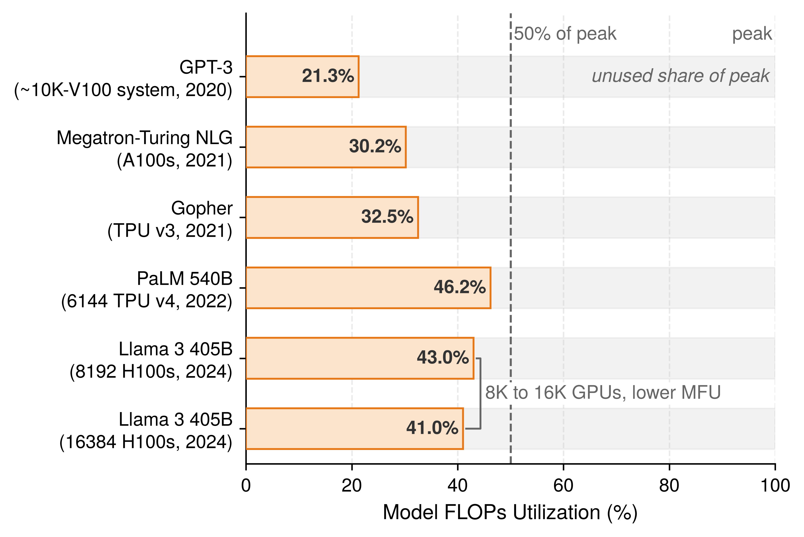
Содержание главы
Содержание
- 9 Эффективность парка
- 9.1 Куда уходит ёмкость парка
- 9.2 Полезная производительность систем машинного обучения
- 9.3 Измерение гудпута
- 9.4 Планировочный goodput
- 9.5 Goodput этапа исполнения
- 9.6 Программная полезная производительность
- 9.7 Восстановление goodput программы
- 9.8 Весь парк
- 9.9 Компромиссы между факторами
- 9.10 Заблуждения и ловушки
- 9.11 Итоги
9 Эффективность парка
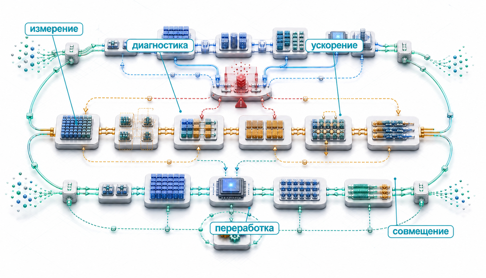
Назначение
Почему парк, полностью распределённый и внешне загруженный, может превращать лишь малую долю своих вычислений в прогресс обучения и обслуженные запросы?
Дорогие ускорители способны значительную часть шага обучения или запроса проводить в ожидании данных, диспетчеризации программного обеспечения или коммуникации, оставляя арифметические блоки недогруженными. Добавление новых машин может увеличить стоимость, не устранив задержку, а более быстрое изолированное ядро может не изменить критический путь шага или запроса. Инженерный смысл — полезная ёмкость парка: прогресс обучения и завершённое обслуживание, которое даёт существующий парк при сохранении качества модели. Панель мониторинга, считающая каждый занятый ускоритель загруженным, не видит этих потерь, поэтому парк может выглядеть полностью используемым, превращая в полезную работу лишь малую долю своей ёмкости. Такие взаимосвязи превращают оптимизацию в вопрос измеренных ограничений, а не в поиск самого быстрого компонента. На одной машине локальное улучшение можно проверить на относительно компактном пути исполнения. В масштабе парка его ценность зависит также от планирования, восстановления, коммуникации, синхронизации и распределения работы между устройствами. Цена ошибочного диагноза растёт, когда одно и то же неэффективное исполнение повторяется на множестве реплик в течение многих недель обучения, а средство применяет команда, не владеющая функцией потерь. Экономия, кажущаяся большой изолированно, стоит лишь той части, которая выживает на полном пути шага или запроса. В терминах C³ эффективность парка требует, чтобы каждый выигрыш в вычислениях был проверен на соответствие затратам на коммуникацию и координацию, определяющим, какая часть ёмкости парка превращается в полезную работу.
Цели обучения
- Объяснить, как полезный результат задачи или парка раскладывается на goodput планирования, среды исполнения и программы, причём каждая потеря относится ровно к одному фактору
- Измерять goodput по воспроизводимому контракту и локализовать потерянный фактор по записям планировщика, таймлайнам задач и трассировкам шагов
- Относить потери планирования и среды исполнения на счёт соответствующих владельцев, используя их результаты, не выводя их заново
- Измерять goodput программы с помощью MFU и MBU и находить член Закона парка, который должно сократить исправление
- Выбирать рычаги уровня парка для программы (разбиение компилятором, перекрытие при конкуренции, компиляция) и распознавать рычаги уровня ядер по сокращаемому ими члену
- Оценивать изменение, обменивающее один фактор на другой, по его влиянию на произведение и размещать результат на границе эффективности
9.1 Куда уходит ёмкость парка
Парк может быть полностью распределён и внешне загружен, тогда как большая часть его ёмкости так и не превращается в прогресс обучения или завершённое обслуживание. Когда тысячи ускорителей выполняют одну рабочую нагрузку, потери накапливаются до старта задачи, между выполняемыми ею шагами и внутри удерживаемых ею шагов. Размер этого разрыва яснее всего виден на запуске, чьё инженерное качество не вызывает сомнений.
Опорный пример 9.1: Архетип A (GPT-4/Llama-3): удержанная ёмкость против прогресса
Предобучение Meta модели Llama 3 405B на 16,384 H100 GPUs — один из наиболее документированных крупных запусков обучения, и два самых цитируемых показателя его эффективности измеряют разные вещи. За 54-day наблюдения задача удержала более 90 percent истёкшего времени как эффективное время обучения (время, потраченное на полезное обучение), несмотря на сотни непредвиденных прерываний, как зафиксировано в Конвейер автоматизации восстановления. В удержанных шагах её арифметика достигала утилизации модельных FLOPs (MFU) около 41 percent пиковой скорости ускорителей (Dubey и др. 2024 г.). Перемноженные, эти два числа показывают, что запуск превратил лишь около 37 percent удержанной ёмкости с пиковой скоростью в прогресс обучения. Поскольку эти числа взяты из разных окон измерения, произведение является лишь оценкой. И всё же оно показывает, что один из самых тщательно спроектированных запусков в истории терял около двух третей удержанной ёмкости — главным образом из-за шагов, шедших ниже скорости оборудования, а не из-за сбоев, доминирующих в его репутации. Поэтому эти два числа иллюстрируют, что теряет при исполнении хорошо управляемая задача этого архетипа.
Даже эта цифра в одну треть завышает то, что даёт разделяемый кластер, поскольку числа Llama 3 отсчитываются лишь после того, как задача получила свои ускорители. В многопользовательском парке — обстановке Оркестрация парка — ёмкость теряется ещё и до старта задачи. Ускорители простаивают нераспределёнными, когда ни одна задача в очереди не помещается в свободный пул, или задача удерживает часть своей «банды» (набора ускорителей, которые должны стартовать одновременно), ожидая остальных её членов, и не может выполнить ни одного шага. Учёт оркестратора разделяет распределённую ёмкость и продуктивную работу, но не видит, куда внутри выполняющейся задачи ушла недостающая работа. Распределённая ёмкость — это точка, где начинается учёт эффективности парка, а не доказательство того, что парк использовал эти ускорители хорошо.
↩︎ Уровни распределённой, активной и продуктивной ёмкости в учёте ресурсов парка введены в Выделенная, активная и продуктивная утилизация.
В предыдущих главах механизмы парка изучались по одному слою за раз: доставка данных (Хранение данных), коллективная коммуникация (Коллективная коммуникация), разбиение параллельной работы (Распределённое обучение), восстановление после сбоев (Отказоустойчивость) и планирование кластера (Оркестрация парка). Каждая подсистема отчитывается о производительности в своей локальной единице — доля простоев на ввод, пропускная способность канала, эффективность масштабирования, доступность или заполненность кластера — и ни одна из этих изолированных метрик не говорит организации, какая доля инвестиций в парк превращается в полезный прогресс. Хуже того, при раздельном чтении отчётов подсистем их знаменатели местами пересекаются, а местами оставляют пробелы. Час, потерянный на перезапуск, может быть оштрафован сразу в двух отчётах, тогда как ускорители, удерживаемые простаивающими из-за неполной «банды», исчезают между журналом планировщика и таймером шагов задачи. Чтобы отнести каждый потерянный час ровно один раз, нужен единый сквозной каркас учёта, который прослеживает каждый ускоритель-час от предложенного оборудования до полезного результата и ранжирует все рычаги оптимизации по всему стеку на одной общей шкале. Этот каркас открывает полосу Serving на Рисунок 4 вопросом: какая часть инфраструктуры, построенной в нижних полосах, становится полезной работой.
↩︎ Закон парка, где эти мультипликативные факторы эффективности впервые предпросматриваются, введён в Закон парка.
Чтобы сделать этот учёт конкретным, один повторяющийся пример обучения проносит числа через всю главу: предобучение Llama 2 70B — модели архетипа A меньшего размера, чем эталонные 175B этого архетипа, — на 128 GPUs (16 nodes по восемь GPU каждая) в разделяемом кластере. Задача использует 8-кратный тензорный параллелизм внутри каждого узла и параллелизм по данным между узлами. Поскольку она конкурирует с другими командами за полные распределения «банд», поглощает сбои кластера и вытеснения и выполняет шаги, у которых открытая коммуникация растёт с числом узлов, каждая стадия потерь парка проявляется в одной рабочей нагрузке на одном пуле. Эта задача — сконструированная иллюстрация, а не измеренный запуск, поэтому её числа моделируются на основе заданных допущений.
↩︎ Архетип A и его эталонная модель на 175B параметров введены в Архетип A (GPT-4/Llama-3).
Обслуживающая реплика той же модели даёт инференс-близнеца сквозного примера. Реплика занимает один узел из восьми H100 GPU, так что один тензорно-параллельный узел образует одну полную обслуживающую единицу. Поскольку плотный трансформер архетипа A не помещается на одном ускорителе, восемь GPU обмениваются активациями в каждом слое. Планировщик кластера должен размещать реплику как неделимую «банду», реплика должна загружать веса и прогреваться до приёма трафика, а её шаги декодирования могут оставлять большую часть арифметики узла простаивающей, пока веса читаются из высокоскоростной памяти (HBM). Поэтому её потери ёмкости возникают на тех же стадиях, что и у задачи обучения.
Обслуживающий близнец также отмечает, где учёт эффективности парка заканчивается и начинается проектирование обслуживания на уровне запросов. В производственном обслуживании запросы совместно исполняются в динамически формируемых батчах, занимают память кэша ключей и значений и должны удовлетворять целевым показателям хвостовой задержки; как сервисный движок справляется с неравномерными прибытиями при этих ограничениях, развивает Обслуживание в масштабе. Здесь границей служит проверка: сохранилась бы потеря даже при равномерном неконкурирующем потоке работы. Реплика, удерживаемая офлайн при загрузке весов, или шаг декодирования, читающий веса медленнее, чем позволяет пропускная способность памяти узла, не используют удержанное оборудование даже без всплесков прибытий и учитываются здесь за окна от часов до недель. Напротив, запрос, задержанный за раздутым батчем, — явление очередей, вызванное неравномерными прибытиями, и относится к анализу обслуживания. Запас, который реплика держит в резерве для поглощения всплесков трафика, появляется в учёте goodput как готовая ёмкость, работающая ниже идеальной скорости, тогда как выбор того, сколько запаса требует целевая задержка, — это решение уровня обслуживания.
Эта глава строит дисциплину измерения и оптимизации, превращающую эти разрозненные потери в единый инженерный бюджет. Мы начинаем с определения ML goodput (Глава 9.2), которое раскладывает полезный результат парка на goodput планирования, среды исполнения и программы по непересекающимся границам. Затем мы вводим воспроизводимый контракт измерения и иерархическое профилирование парка, необходимые для локализации сместившегося фактора без затопления кластера данными трассировок (Глава 9.3). Оттуда мы прослеживаем три фактора в хронологическом порядке. Мы относим потери планирования (Глава 9.4) и потери среды исполнения (Глава 9.5) на счёт механизмов оркестрации и отказоустойчивости, развитых в предыдущих главах, а затем диагностируем (Глава 9.6) и восстанавливаем (Глава 9.7) потери goodput программы, которыми эта глава владеет напрямую. Наконец, мы объединяем все три фактора в общий водопад парка и стоимость за полезный ускоритель-час (Глава 9.8) и оцениваем оптимизации, обменивающие один фактор goodput на другой вдоль границы эффективности парка (Глава 9.9).
9.2 Полезная производительность систем машинного обучения
В масштабе парка ёмкость исчезает на трёх последовательных стадиях жизни задачи. Во-первых, задача должна получить полный набор устройств: ускоритель не даёт прогресса, пока он не распределён, пока фрагментация кластера оставляет его в форме, которую не может занять ни одна задача из очереди, или пока частично распределённая «банда» держит его простаивающим в ожидании остальных товарищей. Во-вторых, получив полное распределение, исполнение задачи должно давать устойчивый прогресс: инициализация, простои на вводе, паузы на синхронных контрольных точках, восстановление после сбоев и шаги, повторно исполненные после отката, — всё это расходует удержанные ускоритель-часы, не продвигая последнюю сохранённую контрольную точку. В-третьих, шаги, выжившие в контрольной точке, должны исполняться со скоростью, близкой к той, что способно выдержать оборудование. Шаг, открывающий коллективную коммуникацию, ждущий отстающего ранга или пузыря в конвейере, тормозящий на трафике памяти или запускающий длинные цепочки крошечных ядер, занимает исправные ускорители, извлекая лишь малую долю их возможностей.
9.2.1 Три фактора goodput
Goodput уровня запуска, введённый с измерением Координации в Слой координации и оркестрации, отслеживает отдельную задачу на всём её исполнении и дисконтирует время, потерянное из-за сбоев и повторно исполненных шагов. Поскольку эта мера отсчитывается лишь после того, как задача получила свои ускорители, и останавливается на границе завершённого шага, она упускает и ёмкость, которую задача так и не получила, и эффективность исполнения удержанных ею шагов. Каркас эффективности парка Google расширяет окно измерения назад — до ёмкости, предложенной парком, и вперёд — до идеального времени исполнения каждого удержанного шага (времени, которое потребовалась бы его необходимая работа при пиковой скорости ограничивающего его ресурса оборудования), раскладывая полезный результат парка на три мультипликативных члена (Wongpanich и др. 2025 г.).1
Определение 9.1: Полезная производительность ML (MPG)
ML productivity goodput (MPG) — это доля ёмкости-времени (capacity-time) парка, которая превращается в полезную работу на идеальной скорости оборудования; она выражается как произведение scheduling-, runtime- и program-goodput, каждый из которых измеряется на фиксированной учётной границе, так что каждый потерянный интервал относится ровно к одному фактору (Wongpanich и др. 2025 г.).
- Значимость: MPG переводит потери, которые планирование, восстановление и исполнение сообщают каждая в своих единицах, в одну долю ёмкости парка, так что потерю на одной границе можно напрямую сравнить с равной потерей на другой, а цена ускоритель-часа, делённая на неё, даёт стоимость одного часа полезной работы на идеальной скорости.
- Отличие: В отличие от утилизации, которая считает ускоритель использованным всякий раз, когда он выделен или занят, MPG учитывает только удержанную работу на её идеальной скорости. В отличие от goodput уровня запуска, MPG также начисляет ёмкость, которую задача так и не получила, и скорость, с которой выполнялись её сохранённые шаги.
- Типичная ошибка: Частая ошибка — перемножать факторы, измеренные на разных окнах или по пересекающимся знаменателям, например усреднённый по запуску MFU, который уже включает время перезапуска, и runtime-фактор, который начисляет те же перезапуски повторно. Произведение осмысленно только тогда, когда каждый фактор делит ровно то, что передал ему предыдущий.
Три фактора следуют за задачей хронологически, и каждый фактор берёт в качестве знаменателя ёмкость-время, пережившую предыдущий этап. Scheduling goodput (
Три фактора перемножаются «чисто», потому что знаменатель каждого фактора — это числитель предыдущего. Scheduling goodput делит удержанное all-allocated time на предложенную ёмкость-время, runtime goodput делит продуктивное время сохранённых шагов на all-allocated time, а program goodput делит предсказанное идеальное время на продуктивное время шагов. Соседние числители и знаменатели сокращаются, оставляя время полезной работы на идеальной скорости, делённое на общую ёмкость-время, предложенную парком (Рисунок 1). MPG поэтому — безразмерная доля ёмкости парка, а не сырая пропускная способность: полезная выдача парка равна пиковой ёмкости, умноженной на MPG, а эффективная стоимость единицы полезной работы равна стоимости сырой ёмкости, делённой на MPG. Это телескопическое сокращение также определяет, когда произведение корректно. Если два фактора включают один и тот же потерянный интервал в свои знаменатели, потеря учитывается дважды; если пауза оказывается между числителем одного фактора и знаменателем следующего, потеря не учитывается ни там, ни там.
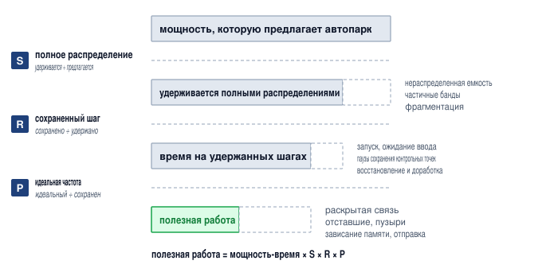
Каждый фактор отражает потери одного этапа жизненного цикла задачи (Глава 9.1), и три границы goodput пересекают таксономию C
Поскольку три фактора перемножаются, доля общей ёмкости парка, потерянная на любой границе, равна дробной потере этой границы, взвешенной долей ёмкости, дошедшей до неё. Уравнение 2 разбивает общий разрыв эффективности
Три члена в правой части в сумме дают общий разрыв, отражая правило, что каждый потерянный приборо-час начисляется ровно на одной границе. Хотя произведение
Инженерный расчёт 9.1: Куда ушла удержанная ёмкость Llama 3
Задача: Llama 3 405B обучалась на выделенном кластере из 16,384 GPUs, удержала более 90 percent истёкшего времени как эффективное время обучения и выполняла сохранённые шаги с MFU около 41 percent (Dubey и др. 2024 г.). Какая доля удержанной ёмкости была потеряна на границе времени исполнения, какая — на границе программы, а какая стала прогрессом на идеальной скорости?
Переменные:
- Scheduling goodput
равен единице, потому что кластер был выделен запуску, поэтому первый член Уравнение 2 обращается в нуль. - Runtime goodput
— около 0.90, по эффективному времени обучения (заявленная нижняя граница). - Program goodput
— около 0.41, по MFU на полном масштабе.
Расчёт:
- Граница времени исполнения,
: 1 0.90 = 0.10. - Граница программы,
: 0.90 0.59 0.53. - Полезная работа,
: 0.90 0.41 0.37.
Результат: Около 10 percent удержанной ёмкости было потеряно на границе времени исполнения, около 53 percent — на границе программы, а около 37 percent стали прогрессом на идеальной скорости.
Системный вывод: Устранение всех прерываний вернуло бы не более десятой части ёмкости, удержанной запуском, при этом сохранённые шаги оставили неиспользованной более половины, поэтому для одного из самых тщательно спроектированных запусков в истории основную часть разрыва держала граница программы, а не надёжность.
Этот расчёт трактует сообщённое Meta эффективное время обучения как runtime goodput.2 Такая идентификация справедлива, когда задача удерживала своё полное выделение на протяжении всего истёкшего окна и когда ожидания входных данных уже были исключены из эффективного времени. Вторая идентификация расчёта — использование MFU как program goodput — справедлива, когда MFU измерялась на тех же сохранённых шагах, тогда как MFU от Meta взята из другого окна измерения, поэтому доли в ноутбуке являются оценками.
9.2.2 Программная полезная производительность и его мера
Аппаратные счётчики активности не могут измерить, насколько эффективно выполнялся сохранённый шаг, потому что ускоритель регистрируется как занятый независимо от того, ждёт ли он коллективной операции, пересчитывает отброшенные активации или исполняет арифметику значительно ниже своей пиковой скорости. Вместо этого измерение program goodput требует сравнить фактическое время шага с именованным аппаратным идеалом для ресурса, ограничивающего рабочую нагрузку. Для обучающих шагов и для prefill-прохода по промпту доминирует арифметика, поэтому идеальное время шага — это время, которое понадобилось бы ускорителям, чтобы исполнить требуемые модели математические операции на их пиковой скорости. MFU измеряет относительно этого идеала, учитывая только операции, требуемые архитектурой модели.3
В методологии Google по эффективности парков идеальное число операций фиксируется до компиляции по программе в её написанном виде — до того, как компилятор выполнит слияние ядер (kernel fusion) или пересчитает активации, — так что оптимизация компилятора, сокращающая шаг, повышает program goodput, а не сдвигает его собственную базовую линию (Wongpanich и др. 2025 г.). Program goodput не измеряется и относительно пооперационной модели «крыши» (roofline): пооперационная модель «крыши» вознаграждает ядра, работающие около их локального потолка, и потому штрафовала бы переписывание, которое исполняет меньше операций при более низкой утилизации, но завершает шаг быстрее. Модель «крыши» остаётся средством диагностики отдельных ядер (Глава 9.6.3), а не мерой эффективности целой программы.
Определение 9.2: Коэффициент использования FLOPs модели (MFU)
Model FLOPs utilization (MFU) — это доля теоретической пиковой пропускной способности оборудования (
- Значимость: Измеренная по сохранённым шагам задачи относительно арифметического идеала, MFU является program goodput этой задачи. Повышение MFU на один процентный пункт на 10 000 одинаковых GPU добавляет полезную пропускную способность, эквивалентную 100 GPU на пике, и зависит ли от этого экономия, определяется тем, вытесняет ли восстановленная ёмкость оборудование или сокращает оплачиваемое время исполнения.
- Отличие: В отличие от аппаратной утилизации, которая сообщает, как часто ускоритель занят, MFU соотносит требуемую моделью скорость FLOPs с пиком оборудования. Она исключает пересчёт и дополнение из полезной работы, даже когда они делают конфигурацию осуществимой или быстрее.
- Типичная ошибка: Распространённое заблуждение — что высокая утилизация GPU подразумевает высокую эффективность. Система может показывать 90 процентов аппаратной утилизации при 30 процентах MFU, когда занятые интервалы включают коммуникации или арифметику значительно ниже пика. MFU выявляет разрыв, но не объясняет его причину — для этого нужны трассировки.
↩︎ Ось вычислений, где стену памяти ограничивает MFU, установлена в Вычислительный субстрат узла.
Равенство MFU и program goodput при арифметическом идеале напрямую следует из этого определения. Сохранённый шаг на
Это тождество выполняется только тогда, когда MFU измеряется по удержанным шагам, пережившим границу среды исполнения, причём простои из-за ввода уже исключены. Публикуемые значения MFU часто усредняются по всему прогону в настенных часах, включающему перезапуски и синхронные паузы на запись контрольных точек; умножение такого усреднённого по прогону MFU на отдельный коэффициент goodput среды исполнения привело бы к двойному штрафу за эти прерывания. Утилизация аппаратных FLOPs (HFU), учитывающая все выполненные операции с плавающей запятой, включая пересчёт активаций, остаётся полезной диагностикой наряду с MFU, поскольку разрыв между HFU и MFU изолирует стоимость пересчёта. В учёте goodput этот разрыв из-за пересчёта является потерей program goodput, даже когда обмен дополнительных вычислений на объём занимаемой памяти — верное инженерное решение. Аналогично, когда планировщики ёмкости оценивают обучение в ускоритель-часах, масштабируя пиковую пропускную способность на MFU удержанных шагов (Пик против устойчивой пропускной способности), им всё равно нужно умножить результат на goodput среды исполнения и планирования, чтобы учесть часы, потерянные вне установившихся шагов.
Публикуемые значения MFU для реальных обучающих прогонов остаются ниже половины пика во всех поколениях передового аппаратного обеспечения (Рисунок 2). Даже для одной и той же архитектуры модели развёртывание Llama 3 405B на вдвое большем числе GPU снижает её заявленный MFU, что в отчёте объясняется меньшим батчем на группу параллелизма по данным, необходимым для сохранения глобального батча.
Арифметический идеал не подходит для рабочих нагрузок, которые аппаратное обеспечение не способно сделать ограниченными по вычислениям. Авторегрессионный шаг декодирования, генерирующий один токен для малого батча, должен прогонять каждый параметр модели через HBM, чтобы выполнить лишь несколько операций на каждый вес. Поэтому пропускная способность памяти задаёт нижнюю границу шага (Пропускная способность памяти и задержка токена), и на этой нижней границе пропускной способности матричные блоки ускорителя работают при уровне значительно ниже 1 процента пикового арифметического throughput. Записывая этот арифметический недостаток на счёт программы, мы обвиняли бы реализацию ядра в разрыве, который способен закрыть только больший батч — а максимальный размер батча ограничен целевым показателем задержки обслуживания, а не ядром. Для ограниченного пропускной способностью декодирования естественной точкой отсчёта для одной реплики является нижняя граница по пропускной способности только весов: время, необходимое для прогона байтов весов модели при пиковой пропускной способности памяти. Program goodput относительно этого идеала — это утилизация пропускной способности модели (MBU), определяемая как достигнутая скорость передачи байтов весов, делённая на пиковую пропускную способность памяти. Общее определение MBU также учитывает байты кэша ключ-значение в нижней границе. В этой главе учитываются только веса, поэтому чтение кэша ключ-значение удлиняет измеренный шаг, не входя в нижнюю границу, и засчитывается против реплики как потеря программы, что сохраняет рост кэша заметным. При длинном контексте, где чтения кэша могут соперничать с байтами весов, низкий MBU может отражать размер кэша, а не качество ядра. Шаг декодирования с высоким MBU и низким MFU насытил лимитирующий аппаратный ресурс, а не растратил его.
Выбор именованного идеала определяет и то, что можно агрегировать по кластеру с несколькими рабочими нагрузками. Парк, оценивающий обучение по пиковым арифметическим показателям, а декодирование — по пиковой пропускной способности памяти, не может усреднить эти два показателя в единый коэффициент program goodput, поскольку два знаменателя измеряют разные физические ресурсы. Поэтому отчётность по парку должна либо сохранять program goodput сегментированным по классам рабочих нагрузок, либо оценивать каждую нагрузку по арифметическому идеалу, признавая, что декодирование малого батча несёт структурный штраф по размеру батча. Фреймворк эффективности парка Google выбирает второй путь для своего агрегата по всему парку, измеряя все рабочие нагрузки относительно идеала на основе вычислений (Wongpanich и др. 2025 г.), тогда как MBU даёт прямую диагностику для отдельных реплик декодирования, ограниченных пропускной способностью. Во всей этой главе MFU служит метрикой program goodput по умолчанию, поскольку она комбинируется по парку, а MBU сообщается наряду с ней всякий раз, когда пропускная способность памяти задаёт аппаратный предел.
Для сквозного учебного задания по обучению Llama 2 70B в этой главе программный гудпут — это парк MFU удержанных шагов по всем 128 GPUs. В построенном примере этот парк MFU составляет около 48 percent, что ниже 65 percent для одноузлового базового варианта, поскольку распределение каждого шага по 16 nodes узлам вводит межузловую коллективную коммуникацию, которой одноузловой запуск не платит. Оба значения MFU опираются на иллюстративные времена шага для микро-батчевого шага объёмом около 2,215 токенов на реплику с параллелизмом по данным, так что одно обновление оптимизатора накапливает много таких шагов. Программный гудпут 0.48 — это, следовательно, значение на микро-батч. Редукция градиентов по оси данных выполняется один раз за шаг оптимизатора и распределяется по накопленным микро-батчам (Глава 9.7.2), что снижает программный гудпут за полный шаг оптимизатора до примерно 0.456. Эта глава использует значение на микро-батч, а полное значение за шаг указывается там, где факторы задания компонуются вместе. Глава 9.6.2 выделяет и количественно оценивает потери масштабирования.
Программный гудпут также напрямую связан с выражениями эффективности, выведенными ранее в книге. Доля времени вычислений в Уравнение (4) делит долю времени вычислений каждого устройства на распределённое время шага, и то, что она измеряет, зависит от того, как посчитано это время вычислений. Если считать его идеальным временем при пиковой пропускной способности оборудования, дробь равна программному гудпуту одного шага. Если считать её измеренным временем исполнения на одном устройстве, время вычислений уже содержит собственные потери этого устройства из-за простоев памяти и диспетчеризации ядер, так что дробь измеряет лишь то, чего стоит распределение работы по устройствам, — то есть эффективность масштабирования. Умножив её на MFU одного устройства, получаем программный гудпут. Эффективная пропускная способность парка в Понятие эффективных FLOP/s делает такое разбиение явным, умножая пиковую ёмкость кластера на MFU одного устройства, эффективность межузлового масштабирования и гудпут среды исполнения. Произведение первых двух членов равно парку MFU задания, то есть его программному гудпуту, а гудпут планирования отсутствует лишь потому, что это выражение исходит из ускорителей, которые задание уже занимает.
9.2.3 Границы учёта
Без чётких границ между тремя факторами две инженерные команды, анализирующие один и тот же потерянный ускоритель-час — например, устройства, простаивающие в группе (gang) в ожидании остальных рангов, или шаг, растянутый отстающим участником, — отнесут потерю к разным факторам или вычтут её дважды. Каждый час ёмкости парка должен пройти три последовательные границы, прежде чем станет полезной работой с идеальной скоростью, а потеря относится на счёт единственного фактора, чью границу она не прошла. Таблица 1 сопоставляет границу каждого фактора с относимыми на неё потерями, телеметрией, которая их измеряет, соответствующим уровнем утилизации из Выделенная, активная и продуктивная утилизация и главой, владеющей инженерными рычагами для их устранения. Последние три строки применяют те же границы к реплике обслуживания.
| Фактор | Что заканчивается на его границе | Относимые потери | Доказательства | Уровень утилизации | Владелец рычага |
|---|---|---|---|---|---|
| Гудпут планирования | Время ёмкости парка становится временем, занятым полными распределениями | Нераспределённая ёмкость (отсутствие спроса, лимиты квот); устройства, занятые группой в ожидании её участников; фрагментация; ёмкость, простаивающая, пока стоящие в очереди группы не могут быть размещены (собственное ожидание задания в очереди стоит лишь времени до результата, когда ёмкость удерживают другие задания) | Записи планировщика: интервалы распределений с отметками времени завершения групп; удерживаемая ёмкость по пулам; индекс фрагментации | Распределено, учитываются только полные распределения | Оркестрация парка |
| Гудпут среды исполнения | Удержанное время становится временем шагов, которые сохраняет контрольная точка | Запуск и компиляция до первого шага; простои входных данных; синхронные паузы на контрольные точки; обнаружение отказов и восстановление; повторная работа после отказа; работа, потерянная из-за вытеснения; незанятые резервирования | Временная шкала задания: журнал шагов с маркерами удержанных контрольных точек; журналы перезапусков, вытеснений и ожидания входных данных | Продуктивно, нормировано на собственную безотказную скорость шагов задания | Отказоустойчивость; Хранение данных — для записи входных данных и контрольных точек |
| Программный гудпут | Время удержанных шагов становится временем с идеальной скоростью | Открытая коммуникация и синхронизация; отстающие; пузыри конвейера; простои памяти; диспетчеризация на хосте; пересчёт; конкуренция за память и сеть от асинхронных контрольных точек | Трассировки шагов и счётчики устройств; MFU, или MBU для decode, ограниченного пропускной способностью | За пределами трёх уровней | Эта глава; Коллективная коммуникация и Распределённое обучение — для коллективных операций и раскладок |
| Время активности ядер | Нет; только доказательства | Нет | Счётчики активности устройств | Активно | Нет |
| Гудпут планирования, реплика обслуживания | Ёмкость становится целоузловыми удерживаемыми репликами | Устройства, из которых нельзя собрать полную реплику; реплики в ожидании размещения | Записи планировщика по каждой реплике | Распределено, только полные реплики | Оркестрация парка |
| Гудпут среды исполнения, реплика обслуживания | Время удержанной реплики становится временем готовности | Загрузка весов, прогрев и компиляция; перезапуск после отказа; осушение перед обновлением | Журнал жизненного цикла реплики | Продуктивно, на идеальной скорости реплики | Отказоустойчивость; Обслуживание в масштабе — для задержки холодного старта |
| Программный гудпут, реплика обслуживания | Время готовности становится временем обслуживания с идеальной скоростью | Decode ниже своей именованной идеальной скорости; запас, удерживаемый для всплесков; фрагментация кэша, ограничивающая приём | Пошаговые трассировки; обслуженные токены относительно именованного идеала; MBU для decode | За пределами трёх уровней | Эта глава; Обслуживание в масштабе решает, какой запас требует целевой показатель задержки |
Эти определения границ уточняют два уровня утилизации оркестратора из Выделенная, активная и продуктивная утилизация так, чтобы три фактора перемножались без наложения. Во-первых, гудпут планирования учитывает только полные распределения. Ускорители, удерживаемые группой, всё ещё ждущей своих оставшихся рангов, выглядят как распределённые на базовой дашборде кластера, но здесь относятся к потерям планирования, потому что ни один синхронный шаг на них выполнить нельзя. Во-вторых, продуктивный уровень оркестратора измеряет удержанную работу относительно заявленной опорной скорости. Когда эта опора — собственная безотказная скорость шагов задания (входные данные готовы, прерываний нет), деление продуктивной ёмкости на ёмкость полных распределений даёт гудпут среды исполнения напрямую. Когда же опорой является пиковая пропускная способность оборудования, то же отношение схлопывает гудпут среды исполнения и программный гудпут в одно число и маскирует, какая граница потеряла ёмкость. В примере оркестрации 500 GPUs распределено, 350 активно и 280 продуктивно; отношение 56 percent продуктивного к распределённому представляет гудпут среды исполнения лишь тогда, когда продуктивный уровень нормирован на собственную установившуюся скорость шагов задания.
Напротив, активный уровень оркестратора не соответствует никакой границе гудпута. Ускоритель, чьи исполнительные движки активны, может выполнять требуемую арифметику модели, крутиться в коллективной операции в ожидании отстающего, пересчитывать отброшенные активации или повторно исполнять шаги, потерянные после отказа узла. Эти четыре вида деятельности представляют полезную работу, две потери программного гудпута и одну потерю гудпута среды исполнения; счётчики активности устройств служат, следовательно, диагностическим доказательством для разделения потерь среды исполнения и программы, а не самостоятельным фактором гудпута.
Граница между гудпутом среды исполнения и программным гудпутом также определяет, как классифицируются задержки внутри шага. Длительность удержанного шага включает любое время, потраченное на ожидание медленного участника, пузырь конвейера или коллективную операцию, но исключает простои в ожидании, когда конвейер хранения доставит следующий батч. Простои входных данных вырезаются и относятся на гудпут среды исполнения, потому что конвейер данных помешал начаться шагу, а их долю квантифицирует коэффициент простоя данных из Уравнение (4) в Уравнение конвейера данных. Всякая иная медлительность внутри удержанного шага относится на программный гудпут, даже когда её первопричина находится вне пользовательской программы.
Коротко говоря, граница учёта определяет, где посчитана потеря, тогда как физическая причина определяет, какой слой системы её устраняет. Отстающие иллюстрируют, почему эти две вещи должны оставаться различными. Страгглеры против fail-stop-отказов рассматривает деградировавший ускоритель как проблему надёжности и оценивает, когда замена медленного узла оправдывает оплату перезапуска. В учёте гудпута, однако, отстающий относится на программный гудпут: задание занимает полное распределение и сохраняет каждый шаг в контрольных точках, но эти шаги исполняются медленнее идеальной скорости оборудования. Запись отстающего в программный гудпут фиксирует замедление там, где оно проявляется. Программный гудпут падает, пока отстающий присутствует, и восстанавливается после замены узла. Решение об устранении остаётся за контроллером надёжности, который взвешивает восстановленный программный гудпут против гудпута среды исполнения, потерянного из-за осушения и перезапуска задания.
Вытеснение разделяет причину и счёт так же. Планировщик кластера инициирует выселение, однако отброшенные шаги с последней контрольной точки и последующая перезагрузка относятся на гудпут среды исполнения, потому что задание удерживало полное распределение, пока тратились эти часы. По тому же правилу синхронная контрольная точка, останавливающая исполнение шагов, — это потеря среды исполнения, тогда как асинхронная контрольная точка, конкурирующая с работающим шагом за память или пропускную способность сети, замедляет удержанный шаг и относится на программный гудпут. Опережающая компиляция до первого шага снижает гудпут среды исполнения, тогда как скорость исполнения скомпилированных ядер определяет программный гудпут. Во всех этих случаях три границы сохраняют MPG внутренне согласованным, хотя сам MPG — лишь одна из нескольких метрик в этой книге, носящих имя «гудпут».
9.2.4 Одно слово, несколько измерений
Цитирование «гудпута» без уточнения оставляет читателя неспособным сказать, сохранило ли задание свой прогресс при перезапусках, эффективно ли использовало свою долю кластера, соблюдало ли целевые показатели задержки обслуживания или извлекало ли статистический прогресс из каждого обучающего примера. В этой книге термин встречается в четырёх различных формах, каждая из которых отвечает на свой инженерный вопрос:
- Гудпут уровня запуска (Слой координации и оркестрации) измеряет скорость полезного прогресса обучения одного задания после учёта времени, потерянного на отказы и повторно исполненные шаги.
- Гудпут продуктивности машинного обучения (MPG) измеряет долю всего времени ёмкости парка, которая становится полезной работой на идеальной скорости оборудования.
- Гудпут по целевым уровням обслуживания (SLO) (SLO Goodput и «налог» обслуживания) измеряет скорость завершённых запросов инференса, удовлетворяющих одновременно целевым показателям времени до первого токена и задержки на выходной токен, которые ограничивают ожидание первого сгенерированного токена запроса и интервал между последующими токенами.
- Статистический гудпут, который максимизирует планировщик Pollux в Адаптивное распределение ресурсов (Pollux), взвешивает сырую пропускную способность обучения прогрессом сходимости, который каждый обучающий пример вносит при текущем размере батча.
Эти четыре измерения дополняют, а не заменяют друг друга. Гудпут SLO применяется поверх MPG: парк обслуживания, работающий в среднем на высокой доле идеальной скорости оборудования, всё же может нарушать целевые показатели задержки в хвосте, если батчи формируются слишком агрессивно. Аналогично, статистический гудпут оценивает прогресс на пример, а не операции в секунду, так что увеличение глобального батча сверх критического размера батча может поднять программный гудпут, снизив статистический. Любое количественное утверждение об эффективности должно поэтому указывать, какое измерение гудпута оно сообщает, какой знаменатель определяет его границу и какое временное окно оно охватывает. Договор об измерениях из Глава 9.3 фиксирует рабочую нагрузку, границу и окно измерения, чтобы два числа гудпута можно было сравнивать честно.
↪ MPG, применённый ко всему портфелю заданий в дашбордах парка и chargeback, развит в Goodput продуктивности ML в портфеле.
9.3 Измерение гудпута
Два измерения работающего задания Llama 2 70B, снятые с недельным интервалом, могут показать заметно различающийся программный гудпут, потому что они трассировали разные ранги, охватывали обновление фреймворка, начинали отсчёт до завершения компиляции или усреднялись по восстановлению после отказа. Реальная эффективность задания на кластере вовсе не обязана была измениться. Фактор гудпута может направлять инженерные решения только тогда, когда повторные измерения напрямую сопоставимы и когда падение можно чисто проследить до границы, потерявшей ёмкость. Измерение гудпута в масштабе парка требует поэтому трёх элементов: договора об измерениях, фиксирующего мешающие переменные, диагностической иерархии, идентифицирующей теряющий фактор прежде, чем зондировать его внутренний механизм, и стратегии выборки телеметрии, накладные расходы на сбор которой производственный парк может себе позволить.
9.3.1 Договор об измерениях
Кажущееся ускорение между двумя пробами легко может проистекать из изменённых распределений входных данных, более прогретого состояния машины, таймеров хоста, пропускающих асинхронное исполнение ядер, или ослабленной цели сходимости, а не из тестируемой оптимизации. Распределённые парки вводят дальнейшие мешающие переменные, которых бенчмарки на одной машине никогда не встречают: два запуска могут получить размещения с разным числом переходов через коммутаторы, делить каналы fabric с разными соседями, исполняться при разных политиках вытеснения или охватывать слишком короткое окно, чтобы захватить рутинные аппаратные прерывания. Промышленные наборы бенчмарков предотвращают эти помехи, фиксируя рабочую нагрузку, целевой уровень качества и правила хронометража до начала любого системного сравнения (Mattson и др. 2020 г.; Reddi и др. 2019 г.), и инженерия производственного парка требует той же дисциплины для каждого отслеживаемого фактора гудпута.
Определение 9.3: Контракт измерений
Измерительный контракт — это набор условий, которые фиксирует и сообщает измерение производительности: рабочая нагрузка и её критерий качества, состояние системы и версии программного обеспечения, граница хронометража, а также фактор goodput, измеренный в указанном окне с его статистическим разбросом, — так, чтобы два измерения по одному контракту различались только оцениваемым изменением.
- Значение: контракт делает разницу между двумя результатами объяснимой тестируемым изменением, так что выигрыш можно оценить в ускоритель-часах и воспроизвести в другом задании.
- Отличие: в отличие от бенчмарк-оценки, которая сообщает одну конфигурацию по одному набору правил, контракт управляет каждым измерением, которое проводит команда, включая «до» и «после» каждого изменения. В отличие от порога мониторинга, он фиксирует, что измерение должно удерживать неизменным, чтобы подкрепить утверждение.
- Типичная ошибка: часто фиксируют рабочую нагрузку и аппаратуру, но позволяют дрейфовать окну измерения. Runtime-goodput, измеренный за день без сбоев, описывает более удачное задание, чем то, которое работает неделями в общем парке.
Полный измерительный контракт фиксирует пять категорий из Таблица 2, сопоставляя каждую обязательную запись с той ошибочной атрибуцией, которую она предотвращает. Конверт рабочей нагрузки фиксирует ревизию модели, распределения входных данных и длин последовательностей, глобальный размер батча, а также критерий сходимости или качества выхода, определяющий корректную работу. Запись о состоянии системы фиксирует количество ускорителей и топологию их размещения, лимиты частоты и мощности, версии ПО, драйверов, числовой точности и компиляторов, а при оценке планировочного goodput — пул кластера и действующую политику планирования. Граница хронометража определяет, какие шаги инициализации попадают в измеряемую область и как хост синхронизируется с асинхронными потоками устройства. Наконец, статистический отчёт указывает фактор goodput, его знаменатель и календарное окно вместе с числом испытаний, мерой центральной тенденции, дисперсией, перцентилями времени шага и проверкой качества. Перцентили включаются в отчёт потому, что среднее время шага может скрывать медленные эпизоды перемежающегося отстающего ранга. Пятая категория, генерация нагрузки, относится к измерениям обслуживания: генератор нагрузки должен продолжать подавать запросы с заданной частотой, пока реплика «залипает», поскольку генератор, ожидающий каждый ответ, ослабляет нагрузку во время застоя и тем самым его скрывает (Обслуживание в масштабе).
| Поле контракта | Сообщаемые данные | Предотвращаемая ошибка |
|---|---|---|
| Workload and correctness | Ревизия модели; представительные распределения входных данных и длин последовательностей; глобальный размер пакета или число одновременных запросов; критерий качества или эквивалентности выходов | Comparing different work or accepting an invalid numerical shortcut |
| System state | Число устройств и топология; тактовые частоты и предел мощности; версии ПО, компилятора, драйвера, форматов точности и ядер; для полезной производительности планирования — пул и политика планировщика | Ошибочное приписывание оптимизации эффекта от смены аппаратуры, ПО или политики управления |
| Timing boundary | Учтённая подготовка; синхронизация устройств; прогрев; определения холодного запуска и установившегося режима | Занижение времени асинхронного исполнения или сокрытие запуска и компиляции внутри показателя установившегося режима |
| Statistical report | Измеряемый коэффициент и его знаменатель; окно наблюдения; число испытаний или окон; медиана или среднее; разброс; перцентили времени шага | Выделение одного удачного запуска или перемножение коэффициентов, измеренных в разных окнах либо с перекрывающимися знаменателями |
| Load generation (serving) | As specified for serving measurements in Обслуживание в масштабе | Load that eases off while the replica stalls |
Требуемое окно измерения резко различается для трёх факторов, поскольку каждая граница теряет пропускную способность на своём масштабе времени. Program-goodput отражает неэффективности, повторяющиеся на каждом шаге обучения или итерации декодирования, поэтому окно из нескольких сотен прогретых установившихся шагов оценивает его надёжно. Runtime-goodput отражает эпизодические события, такие как отказы узлов и откат к последней контрольной точке. Окно короче среднего времени между сбоями кластера может целиком пропустить такие события и сообщить обманчиво высокий фактор, поэтому его окно должно охватывать дни или недели в масштабе парка (Отказоустойчивость). Scheduling-goodput отслеживает конкуренцию за кластер, которая наполняет очереди в часы пик и опустошает их ночью или между дедлайнами проектов, требуя окна, охватывающего полные циклы спроса. Перемножение трёх факторов даёт истинный MPG задания только когда все три покрывают одно и то же календарное окно, даже если program-goodput внутри этого окна оценивается выборкой представительных удержанных шагов.
Граница хронометража также определяет, относятся ли накладные расходы запуска к runtime-goodput или к program-goodput. Сквозные испытания, запускающие отсчёт до компиляции графа и прогрева кэша, измеряют задержку до первого продуктивного шага — это относится к runtime-goodput, тогда как прогретые установившиеся испытания изолируют скорость выполнения одного шага — это относится к program-goodput. Смешивание холодных и прогретых прогонов может засчитать ускорение изменения кода, когда второй прогон просто попал в тёплый кэш компилятора; поэтому измерительный контракт сообщает длительность холодного старта и время установившегося шага раздельно. Когда более агрессивный проход компилятора ускоряет установившиеся шаги ценой более долгой начальной компиляции, он обменивает runtime-goodput против program-goodput — этот компромисс Глава 9.9 оценивает явно.
Промышленные наборы бенчмарков показывают, как строгий измерительный контракт действует на практике. MLPerf Training измеряет время по настенным часам для обучения эталонной модели до заданного целевого значения валидации, а MLPerf Inference измеряет пропускную способность при явных ограничениях задержки в стандартизованных сценариях обслуживания, оценивая полные аппаратно-программные системы, а не отдельные чипы (Mattson и др. 2020 г.; Reddi и др. 2019 г.). Подачи в закрытой дивизии фиксируют архитектуру модели и оптимизатор, чтобы системы можно было сравнивать напрямую, а подачи в открытой дивизии ослабляют эти ограничения, демонстрируя совместную алгоритмическую и системную co-design. Поскольку бенчмарк-подача выполняется на выделенном, заранее прогретом кластерном выделении без мультиарендной очереди и длительных вытеснений, она по большей части измеряет program-goodput и почти ничего не говорит о планировочном или runtime-goodput (perspective 9.1).
Запись точных версий программного обеспечения в контракте состояния системы существенна, потому что само по себе обновление ПО может изменить достигаемую пропускную способность в разы на идентичном кремнии. С сентября 2023 года по апрель 2025 года NVIDIA подавала один и тот же узел DGX H100 с восемью GPU в четыре последовательных раунда MLPerf Inference, обновляя свой инференс-стек с TensorRT 9.0 до 10.8 (Reddi и др. 2019 г.; MLCommons 2025 г.). За эти четыре раунда offline-пропускная способность выросла в 2.7× на GPT-J, 1.4× на Llama 2 70B и 1.2× на Stable Diffusion XL (Рисунок 3), тогда как ResNet-50 и BERT — чьи ядра уже были зрелыми — остались без изменений. Любой эксперимент «до и после», пересекающий обновление фреймворка или компилятора, смешивает это обновление с оптимизацией, которую проверяют.
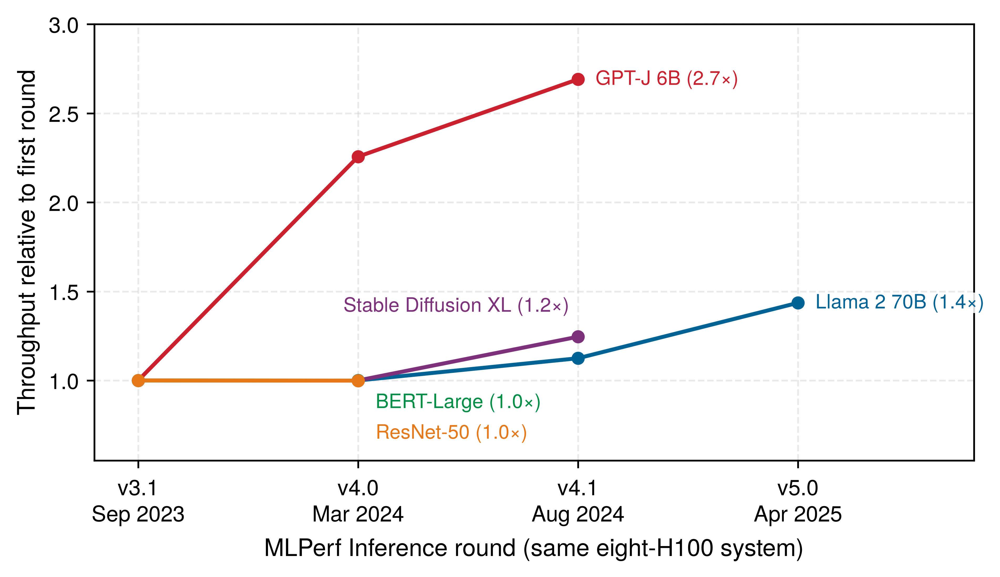
9.3.2 Локализация потерянного фактора
Даже когда контролируемое контрактом измерение подтверждает реальное замедление, знание того, что тренировочный прогон отстал от графика, не показывает, какая граница goodput потеряла пропускную способность. Команда инженеров, первой открывающая профилировщик ядер, всегда найдёт в шаге какой-то открытый простой. Команда легко потратит неделю, срезая миллисекунды с коллективной операции, в то время как большая часть недостающей пропускной способности была потеряна в ожидании полного выделения или на восстановление после незалогированных перезапусков. Эффективная локализация вместо этого просматривает телеметрию от самой дешёвой и широкой записи к самой дорогой и узкой трассе, сопоставляя каждую запись с одной границей из Таблица 1.
На вершине этой иерархии находятся записи планировщика. Для каждого поданного задания кластерный планировщик логирует время подачи, отдельные назначения устройств, метку времени, когда минимальный gang стал полным, финальное освобождение, а также пул ресурсов, квоту и класс приоритета, под которыми задание выполнялось. Логи на уровне пулов добавляют невыделенную ёмкость и индекс фрагментации из Выделенная, активная и продуктивная утилизация. Поскольку управляющая плоскость уже пишет эти записи для допуска и внутреннего учёта, они не несут никаких дополнительных накладных расходов на инструментирование и покрывают каждое задание в кластере. Записи планировщика напрямую устанавливают планировочный goodput и поставляют время полного удержания, образующее знаменатель runtime-goodput. Чего они не видят, так это всего, что происходит внутри полного выделения: зависшее задание, удерживающее полный gang без единого шага, выглядит в логах планировщика идентично заданию, работающему на пике эффективности.
Вторая ступень — таймлайн задания, структурированный журнал жизненного цикла, который само задание пишет между меткой времени полного gang и своим освобождением. Таймлайн записывает, когда начался первый шаг обучения, метки завершения каждого шага, какие шаги сохранила каждая зафиксированная контрольная точка, каждое событие отказа, перезапуска и вытеснения, а также время, которое каждый шаг ждал входной конвейер. Поскольку он хранит лишь несколько скалярных полей на шаг или событие жизненного цикла, таймлайн достаточно компактен, чтобы хранить его для каждого продуктивного задания. Он устанавливает runtime-goodput. Интервал до первого шага измеряет запуск и компиляцию, паузы на фиксациях контрольных точек измеряют синхронные накладные расходы на запись, шаги, повторённые после отката, измеряют переделку, а счётчик ожидания входных данных даёт долю простоев по данным из Уравнение (4). Поскольку таймлайн также логирует длительность по настенным часам каждого удержанного шага, он сигнализирует о потере program-goodput всякий раз, когда удержанные шаги выполняются дольше своей целевой базы. Однако он не может отличить, пришло ли замедление из открытой коммуникации, простоев памяти или отстающего ранга.
Третья ступень — трассы шагов, единственная телеметрия, заглядывающая внутрь отдельного шага. За выбранное окно времени и по выбранному набору рангов трасса шага захватывает каждый запуск ядра, коллективную операцию, копирование памяти и интервал диспетчеризации хоста вместе с аппаратными счётчиками производительности, такими как достигаемая пропускная способность HBM. Эта детализация разбивает удержанный шаг на вычисления, открытую коммуникацию, ожидания соседей или конвейера, простои памяти и накладные расходы диспетчеризации хоста, указывая, какой член Закона парка (локальная работа, коммуникация или синхронизация; Глава 9.6.1) должна сократить оптимизация. Поскольку полная трассировка генерирует гигабайты данных и искажает тайминги исполнения, она резервируется для коротких окон по выборочным рангам; чистая трасса шага, снятая в здоровый час, ничего не говорит о том, потеряло ли задание половину недели на перезапуски.
| Запись | Охват и стоимость | Устанавливает | Не может установить | Устанавливаемый фактор |
|---|---|---|---|---|
| Scheduler records | Каждая задача и каждый пул, непрерывно; данные для допуска задач и распределения затрат | Ресурсы, не занятые полными выделениями; ожидание в очереди; время до полного выделения ресурсов группе; время удержания ресурсов каждой задачей | Anything inside a held allocation, including whether any step ran | Scheduling goodput; the denominator of runtime goodput |
| Job timeline | Every job, for its whole life; a few fields per step or event | Запуск, ожидание входных данных, паузы контрольных точек, перезапуски, вытеснения, повторная работа; время сохранённых шагов; распределение времени шага | Why a retained step takes as long as it does | Runtime goodput; detects but does not explain program loss |
| Step traces | Selected ranks and short windows; large volume and some perturbation | Интервалы внутри шага: вычисления, не перекрытая вычислениями коммуникация, ожидание других участников и стадий, задержки памяти, диспетчеризация хостом | Потери вне окна трассировки: ожидание планирования, перезапуски, паузы контрольных точек, эпизодические задержки | Program goodput, and the Fleet Law term to shorten |
Чтение этих трёх записей сверху вниз (Таблица 3) — методологическое требование, а не просто привычка ради экономии. Каждая ступень устанавливает один фактор полезной производительности (goodput) и передаёт оставшийся необъяснённый разрыв ступени ниже, поэтому инженеры собирают трассировки шагов только после того, как журналы планировщика и временная шкала задачи подтвердят, что сами удержанные шаги выполняются медленно. Пропуск ступеней приводит к двум классическим диагностическим ошибкам. Начало с трассировки шагов может признать задачу здоровой, хотя она теряет треть удержанных часов из-за неучтённых перезапусков. Начало и остановка на журналах очередей могут обвинить кластерный планировщик в недельном замедлении, которое временная шкала задачи немедленно связала бы с регрессией компилятора. В обоих режимах отказа локальные данные точны, но диагноз оказывается неверным, потому что выбранная телеметрия не позволяет наблюдать границу, на которой произошла потеря.
Чтобы эти три записи могли обеспечить учётные границы Глава 9.2.3, их инструментирование должно соответствовать этим границам. Если временная шкала задачи записывает только общую длительность шага без разделения простоев загрузчика данных, каждое ожидание ввода растворяется во времени шага, и потеря полезной производительности среды исполнения маскируется под потерю полезной производительности программы. Аналогично, поскольку один отстающий ускоритель растягивает время синхронного шага на каждого участника в своей коллективной группе, определение того, какой ранг вызвал замедление, требует лёгких поранговых таймеров шагов внутри временной шкалы задачи.
Наша сквозная задача обучения Llama 2 70B иллюстрирует, как три ступени работают вместе. Предположим, что через неделю на общем кластере задача удержала существенно меньше шагов, чем предсказывал план, исходивший из полной недельной квоты при одноузловой скорости шага. Сначала обращение к записям планировщика показывает, что задача удерживала частичные квоты узлов до сборки полного ганга из 16 узлов — потеря на планировании, количественно оценённая в Глава 9.4.3. Затем чтение временной шкалы задачи начиная с отметки завершения ганга изолирует начальную задержку запуска, синхронные паузы на контрольных точках, шаги, повторно выполненные после отказов, и умеренную долю простоев ввода, из которых Глава 9.5.2 составляет полезную производительность среды исполнения. Та же временная шкала показывает, что каждый удержанный шаг с первого дня выполнялся дольше одноузлового базового уровня, доказывая, что часть недобора лежит в полезной производительности программы. Только в этот момент команда запускает трассировки шагов на одной группе параллелизма по данным в течение короткого окна. Поскольку поранговые счётчики временной шкалы не показывают единственного выдающегося ранга, команда изучает интервалы, общие для всех рангов, и обнаруживает межузловую синхронизацию и ожидания коллективных операций без вычислений рядом с ними на каждом шаге — вскрытую коммуникацию, проанализированную в Глава 9.6.2. Каждая ступень отвечает ровно на тот вопрос, на который остальные ответить не могут (Рисунок 4).
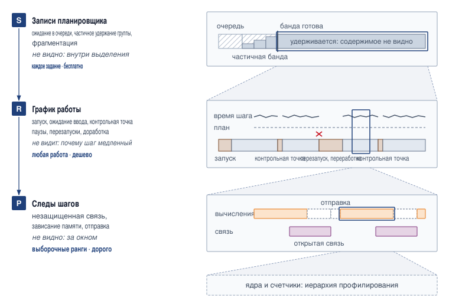
Диагностика реплики обслуживания на восьми GPU следует той же самой трёхступенчатой последовательности. Журналы кластерного планировщика измеряют, сколько реплика ждала полного нефрагментированного узла, журнал жизненного цикла реплики отслеживает загрузку весов, прогрев, готовность к обслуживанию и перезапуски, чтобы установить полезную производительность среды исполнения, а трассировки шагов декодирования — оцениваемые по пиковой пропускной способности HBM через MBU — измеряют, насколько близко готовое исполнение подходит к аппаратному идеалу.
9.3.3 Профилирование парка методом выборки
Первые две ступени лестницы локализации масштабируются с размером кластера без усилий, потому что запись в журнале планировщика или запись на временной шкале шагов занимает лишь несколько байтов независимо от того, охватывает задача один узел или тысячу. Трассировки шагов так не масштабируются. Когда задача расширяется с 8 GPUs до 1,024 GPUs, возникают межузловые узкие места, которые не может зафиксировать никакая одноузловая трассировка — например, коллективные операции через fabric и ранги, простаивающие из-за далёкого отстающего, — поэтому профилирование должно охватывать множество рангов одновременно. Однако если 5-секундная трассировка Nsight Systems на одном GPU даёт 500 MB, то захват того же 5-секундного окна на 1,024 GPUs порождает примерно 512 GB телеметрии. Ни один производственный кластер не способен непрерывно поглощать и хранить трассировки с такой скоростью, а логирование каждого запуска ядра искажает саму измеряемую длительность шага (перспектива 9.2). Поэтому решение о том, какие ранги и временные окна трассировать, — ключевая часть измерений парка.
Производственные парки разрешают это противоречие с помощью иерархического профилирования, разделяя телеметрию между лёгкими постоянно включёнными счётчиками, которые обнаруживают падение эффективности, и целевыми трассировками, которые диагностируют его причину. В рамках строгого бюджета накладных расходов постоянно включённый слой непрерывно записывает длительность шагов, MFU удержанных шагов, поранговые таймеры шагов и телеметрию состояния оборудования (пропускную способность HBM, потребляемую мощность и температуру кристалла) по каждой активной задаче. Как только эти счётчики сигнализируют о деградации фактора полезной производительности и локализуют место, целевое профилирование захватывает короткое окно трассировки с конкретных рангов, выбранных для проверки гипотезы. Прямое сравнение подозреваемого отстающего со здоровым соседом из той же коллективной группы выделяет простой гораздо чище, чем трассировка произвольного ранга. Система MegaScale от ByteDance4 воплощает этот рабочий процесс. Лёгкие таймеры на CUDA-событиях записывают критические операции на каждом ранге на протяжении всего производственного обучения, сводят поранговые задержки в тепловую карту по всему кластеру и углубляются в синхронизированную временную шкалу только для той параллельной группы, у которой обнаружена аномалия (Jiang и др. 2024 г.). Ниже ступени трассировки шагов диагностика спускается далее — через операторы фреймворка, временные шкалы ядер и аппаратные счётчики производительности — по иерархии профилирования Рисунок 6 (Глава 9.6.3).
Чтобы непрерывно заглядывать внутрь шагов, не оплачивая полные трассировки, парки полагаются на статистическое профилирование. Политика выборки выбирает небольшую долю ядер, шагов или рангов для детального замера времени, а агрегирование этих выборок восстанавливает картину того, на что тратится время шага по всему парку. Google-Wide Profiling впервые применила этот подход к компьютерам складского масштаба, непрерывно выбирая небольшую долю машин и агрегируя результаты в профили исполнения по всему парку (Ren и др. 2010 г.). Применительно к парку ML-ускорителей агрегирование по всему парку ранжирует ядра и коллективные операции по их доле суммарного времени удержанных шагов во всех задачах. Коллективный примитив, потребляющий скромный срез времени шага каждой задачи, часто представляет собой гораздо более значимую цель оптимизации по всему парку, чем специализированное ядро, доминирующее в одной-единственной рабочей нагрузке.
Статистическая выборка надёжна ровно настолько, насколько хороша её стратификация. Политика выборки парка должна стратифицировать по размерам задач и архитектурам моделей, стадиям конвейера и параллельным группам, фазам прогрева и установившегося режима, часам суток. Выборка только ранга 0 (который часто выполняет дополнительное логирование и координацию контрольных точек) или только первых минут задачи характеризует особый ранг или фазу, а не парк. Более того, поскольку редкие аномалии, случающиеся раз в несколько тысяч шагов, легко проскальзывают между периодическими случайными выборками, непрерывная выборка дополняется триггерами по порогам, которые автоматически сбрасывают детальную трассировку всякий раз, когда постоянно включённый таймер пересекает границу аномалии.
Перемежающиеся отстающие иллюстрируют, почему триггерный захват необходим. Ускоритель может замедляться на короткие эпизоды из-за троттлинга при нагреве, исправимых ошибок памяти, преходящей перегрузки fabric или пауз ОС хоста вроде возврата страниц. Поскольку синхронный шаг завершается только тогда, когда заканчивает самый медленный участник, единственный ранг, работающий медленнее во время эпизода, задерживает всю свою коллективную группу на ту же долю. Кумулятивная потеря полезной производительности программы задачи растёт как с серьёзностью замедления, так и с частотой эпизодов. Периодическая трассировка, захваченная между эпизодами, видит совершенно здоровое исполнение. Постоянно включённые поранговые таймеры шагов ловят эпизоды как всплески задержки, а пересечение порога длительности немедленно запускает синхронизированные трассировки и отстающего ранга, и здорового соседа. Сопоставление этих триггерных трассировок с телеметрией устройств, счётчиками коммутаторов и журналами ядра хоста затем отделяет ранг, породивший простой, от соседей, которые лишь ждали у барьера коллективной операции.
↪ Как телеметрия парка организована в уровни мониторинга, маршрутизирующие алерт к команде-владельцу, описано в Иерархическая архитектура мониторинга.
9.3.4 Обнаружение регрессий
Производственный парк меняется непрерывно, даже когда команда модели не трогает свой обучающий скрипт. Релизы фреймворков и компиляторов меняют ядра, которые диспатчит модель, обновления драйверов и прошивок меняют управление частотами и алгоритмы коллективных операций, миграции хранилищ сдвигают пропускную способность ввода и контрольных точек, а обновления политики планировщика меняют порядок формирования квот. Любое из этих изменений может подорвать фактор полезной производительности во всех затронутых им задачах — часто только в многонодовом масштабе, где небольшое увеличение пикового потребления памяти под активации запускает дефрагментацию аллокатора на одном ранге, а более долгая пауза хоста останавливает весь синхронный ганг. Систематическое обнаружение регрессий применяет измерительный контракт к каждому изменению инфраструктуры или ПО и отслеживает каждый фактор полезной производительности в записи телеметрии, которая его устанавливает (Таблица 4).
| Уровень тестирования | Фактор | Что измеряет | Обнаруживаемая регрессия |
|---|---|---|---|
| Малоразмерные канарейки | Программа | Время шага и MFU на одном узле и на небольшой многонодовой квоте, устанавливающие кривую масштабируемой эффективности | Изменения кода, выглядящие безобидными на одном GPU, но искривляющие кривую до запуска на всём парке |
| Сравнение с базовой линией парка | Программа | MFU удержанных шагов каждого производственного запуска относительно эталонной базовой линии для данной архитектуры и версии ПО | Изменения архитектуры, компилятора или конфигурации, снижающие полезную работу парка |
| Обнаружение серых отказов | Программа | Распределение времён шагов и поранговых таймеров шагов по парку | Отстающие узлы; узел, замедлившийся на некоторую долю, может снизить синхронную MFU параллелизма по данным примерно на ту же долю |
| Базовые линии запуска и восстановления | Среда исполнения | Время от завершения ганга до первого шага; пауза на контрольную точку за коммит; перезапуски, повторная работа и доля простоев ввода в сутки | Обновления компилятора или фреймворка, удлиняющие компиляцию; изменения хранилища, замедляющие запись контрольных точек или ввод; переставшая работать автоматизация восстановления |
| Базовые линии квот | Планирование | Ожидание в очереди до завершения ганга; ёмкость, удержанная в незавершённых гангах; индекс фрагментации на пул за полные циклы спроса | Изменения политики планировщика или шаблонов задач, замораживающие ёмкость или задерживающие полные квоты |
Уровни полезной производительности программы ловят большинство регрессий, вносимых изменениями модели или ядер, в течение минут, поскольку любое пошаговое замедление повторяется на каждой итерации и проявляется на небольшой многонодовой канарейке. Уровни среды исполнения и планирования ловят регрессии, которые короткие прогоны канареек наблюдать не могут: релиз компилятора, добавляющий минуты к компиляции графа, не трогает время шага в установившемся режиме, а политика квот, замораживающая узлы в общем пуле, проявляется только через полный суточный цикл спроса. Ведение базовых линий по версии ПО и по пулу в рамках того же измерительного контракта позволяет инженерам связать любой сдвиг полезной производительности планирования, среды исполнения или программы непосредственно с релизом или изменением политики, который его внёс. Бенчмарк-прогоны упускают те же потери среды исполнения и планирования, что и короткие канарейки, поэтому кластер, размер которого подобран по числам бенчмарков, наследует каждую потерю, упущенную бенчмарком.
↩︎ Серые отказы — тихие деградации, проявляющиеся как отстающие, а не как падения, — вводятся в Страгглеры против fail-stop-отказов.
Системный взгляд 9.1: Что измеряет прогон бенчмарка
Результаты бенчмарков, включая заявки MLPerf, описывают один настроенный прогон по заданному протоколу на выделенном ресурсе. В терминах goodput они измеряют программный goodput и полезную работу через целевое качество, при этом планировочный goodput по построению равен единице, а перерывов, которые накапливает долгий производственный прогон, почти нет. Это ориентир для программного фактора, а не гарантия ёмкости.
Продакшен добавляет то, чего не учитывает ориентир. Запуск, паузы на контрольные точки, отказы и переделки, вытеснения и ожидание входных данных — это потери времени исполнения (runtime); мониторинг и конкуренция с соседями могут дополнительно снизить программный goodput, а ожидание полного выделения ресурсов — это планировочная потеря, невидимая ни для какого бенчмарка. В виде сценария планирования: если полезная пропускная способность на 10–20 percent ниже скорости, которая подразумевала 30 days обучения, та же работа займёт около 33.3–37.5 days. Глава 9.5 оценивает долю времени исполнения в этом разрыве для хорошо идущей задачи.
Обнаружение регрессии и проверка оптимизации — это одно и то же измерение, выполненное в противоположных направлениях. Каждое изменение-кандидат должно оцениваться на той учётной границе, на которую оно нацелено — в удержанном времени шага и MFU для изменения программы, в таймлайне задачи для изменения времени исполнения и в логах планировщика для изменения политики выделения ресурсов — а не в изолированном микробенчмарке. Ускорение одного ядра вдвое экономит не более половины доли этого ядра в шаге, и не экономит ни секунды астрономического времени, если ядро уже выполнялось скрыто за видимым коллективом. Поскольку оптимизация на одном уровне может ухудшить другой фактор, все три фактора goodput заново измеряются под контрактом перед повышением. Даже внешне локальное изменение может исчерпать общий аппаратный ресурс, будучи развёрнутым одновременно на тысячах узлов — именно поэтому производственные парки пропускают изменения инфраструктуры через поэтапные развёртывания (Стратегии поэтапного развёртывания). Один из самых наглядных разборов инцидентов, когда локальная стоимость обернулась отказом всего парка, относится не к обучению МЛ-моделей, а к сетям на границе (edge).
Практический случай 9.1: Регулярное выражение, насытившее edge (2019)
Контекст: межсетевой экран веб-приложений Cloudflare применяет правила к трафику HTTP/HTTPS через весь глобальный edge (Cloudflare 2019 г.).
Механизм: правило, развёрнутое 2 июля 2019 года, вызвало чрезмерный бэктрекинг в регулярных выражениях и довело загрузку CPU, обслуживавших трафик HTTP/HTTPS, почти до 100 процентов по всей сети. Ранее снятая защита от избыточного потребления CPU, отсутствие тестов производительности и глобальное развёртывание позволили локальной вычислительной стоимости стать отказом всего парка.
Влияние: последовавший 27-минутный отказ нарушил проксирование, доставку контента и работу межсетевого экрана. Трафик через сеть упал примерно на 82 процента, пользователи получали ошибки 502.
Исправление: глобальное отключение межсетевого экрана восстановило трафик; затем проблемное изменение удалили, а после тестирования экран включили снова. В постмортеме сообщалось о восстановлении защиты от потребления CPU и планах по тестам производительности, поэтапному развёртыванию правил и движку регулярных выражений с гарантиями времени исполнения.
Системный урок: корректные результаты не гарантируют приемлемой стоимости выполнения. Изменение, при котором каждый результат остаётся корректным, может одновременно снизить goodput всего парка. Поэтому чувствительные к производительности изменения МЛ-парка — обновление компилятора, библиотека ядер или новая форма входных данных — измеряются под контрактом, поэтапно развёртываются на малой доле парка и повышаются только тогда, когда затронутые ими факторы выдерживают проверку.
Измерительный контракт, фиксирующий окно каждого фактора, трёхступенчатая лестница телеметрии, локализующая потери от самого дешёвого журнала вниз, и непрерывные базовые линии, отслеживающие регрессии, вместе делают каждую границу goodput наблюдаемой в продакшене. Первая граница, с которой сталкивается рабочая нагрузка, — это формирование полного выделения ресурсов, когда ёмкость парка может быть потеряна ещё до первого шага.
9.4 Планировочный goodput
Частично собранные ганги, разрозненные узловые фрагменты и опустошаемые резервации тратят часы ускорителей до того, как какая-либо рабочая нагрузка получит полное выделение, тогда как зомби-задачи, голодание по входным данным, видимые коллективы и фрагментированные кэши «ключ—значение» расходуют ёмкость внутри уже имеющегося у задачи выделения. Общие дашборды здоровья кластерного оркестратора показывают оба вида потерь вместе, но планировочный goodput учитывает только до-выделенческие потери; устранение после-выделенческих потерь планировочный goodput не меняет. Разделение до- и после-выделенческих потерь и количественная оценка до-выделенческой доли — вот что планировочный goodput добавляет к собственному взгляду оркестратора. Рычаги политики, восстанавливающие эти планировочные потери (атомарный приём гангов, backfill, бин-пакинг, размещение с учётом топологии, заём квот и политика вытеснения), развёрнуты в Оркестрация парка.
9.4.1 Что учитывает планировочный goodput
Жёсткая задача распределённого обучения, удерживающая половину запрошенных ускорителей в ожидании остальных, выполняет ноль шагов, а не половину, однако наивный счётчик утилизации засчитывает каждое назначенное устройство как занятое. Планировочный goodput устраняет это искажение, беря отношение двух интегралов ёмкость-время за один и тот же календарный интервал. Знаменатель — это ёмкость-время в эксплуатации, предлагаемое пулом: его выделяемые ускорители, умноженные на длительность интервала. Числитель — это ёмкость-время полностью выделенных ресурсов, просуммированная по задачам как число устройств каждой задачи, умноженное на интервал от момента, когда минимальный ганг задачи стал полным, до его освобождения. Полное выделение соответствует минимальной жизнеспособной группе исполнения из Групповое планирование (gang scheduling) — каждому ускорителю, домену интерконнекта и совместно планируемому ресурсу хоста, необходимым для выполнения одного синхронного шага. Для жёсткой задачи эта группа — полный запрошенный ганг; для эластичной — активный размер ганга между двумя границами переконфигурации, и любые ускорители, от которых задача отказывается, возвращаются в числитель лишь тогда, когда их захватит другое полное выделение. Поскольку происходящее внутри выделения в это отношение не входит, зависшая задача, удерживающая полный ганг без выполнения шагов, достигает того же планировочного goodput, что и задача, работающая на пиковых FLOP/s.
Каждый час-на-устройство эксплуатируемой ёмкости вне полного выделения — это планировочная потеря, независимо от её операционной причины. Ёмкость простаивает без назначения, когда предъявленный спрос ниже размера пула, когда ждущие задачи исчерпали командные квоты или когда свободные ускорители разбросаны по стойкам фрагментами, слишком мелкими для любого ганга в очереди. Ёмкость назначена, но не полна, когда ганг удерживает начальное подмножество узлов в ожидании остальных, когда два частичных ганга взаимно блокируются из-за последних свободных узлов, когда освобождённые ускорители простаивают в резервации, опустошаемой для ганга во главе очереди, или во время кратких переходов между арендаторами по разборке и развёртыванию контейнеров. Поскольку неполный ганг не может продвигать синхронное обучение, Глава 9.2.3 ограничил выделенный ярус оркестратора полными выделениями.
Ускорители, выведенные из эксплуатации для ремонта или планового обслуживания, исключаются из знаменателя планировочного goodput, поскольку никакая политика планирования не может разместить работу на неисправных узлах. Эти вне-эксплуатационные часы учитываются вместе с MPG как доступность кластера, сохраняя видимость простоев оборудования без обвинения планировщика. Если же отчёт делит на весь установленный кремний, ненадёжность оборудования оказывается подмешана в планировочный goodput. Поэтому измерительный контракт (Глава 9.3.1) требует явно указывать, является ли знаменатель эксплуатируемой или установленной ёмкостью, чтобы два отчёта по парку никогда не сравнивались на несовпадающих базовых линиях.
Когда планировочный goodput низок, логи планировщика различают два принципиально разных вида причин, требующих противоположных средств. Если ускорители простаивали без выделения, а очередь задач была пуста, пул превышает текущий спрос — это проблема планирования ёмкости и заёма квот. Если ускорители простаивали без выделения или были заперты в частичных гангах, а в очереди ждали готовые к выполнению задачи, — ограничения размещения, жёсткие квоты или фрагментация заблокировали оборудование — это проблема политики планирования. Запись глубины очереди рядом с каждым интервалом не удерживаемой ёмкости немедленно разделяет эти два случая.
↪ Подгон размера парка под прогнозируемый спрос — средство против ёмкости, которую не хочет никакая работа в очереди, — развёрнуто в Планирование ёмкости как инструмент контроля надёжности.
Поскольку невыделяемые фрагменты, частичные ганги и опустошаемые резервации принадлежат общему пулу, а не отдельной рабочей нагрузке, планировочный goodput — свойство пула ресурсов. Наш сквозной пример с задачей Llama 2 70B наследует планировочный goodput того пула, из которого она получает узлы. Собственное ожидание задачи в очереди — отдельная метрика. Ожидание в очереди снижает планировочный goodput только в те интервалы, когда ускорители пула действительно находились вне полных выделений. Пока кластер занят другими полными задачами, ожидание стоящей в очереди задачи не стоит парку никакого goodput, а лишь удлиняет её собственное время до результата — компромисс, оцениваемый в Глава 9.9. Как показал анализ очередей в Цели планирования и их конфликты, приближение утилизации пула и планировочного goodput к единице вызывает крутой рост времени ожидания в очереди.
9.4.2 Атрибуция потерь планировщика
Строгое определение планировочного goodput на границе полного выделения означает, что не каждый отказ, управляемый командой оркестрации, является планировочной потерей. Если бы зомби-задачу вычитали из планировочного goodput просто потому, что таймауты лизинга оркестратора её устраняют, эти потраченные впустую часы были бы вычтены из ёмкости, которую планировочный числитель уже учёл как полное выделение, — одни и те же часы наказывались бы дважды. Поэтому атрибуция потери ёмкости команде, владеющей рычагом устранения, ломает мультипликативное тождество goodput. Тогда как операционный процесс отладки в Отладка загрузки кластера группирует антипаттерны утилизации по наблюдаемым симптомам, учёт goodput классифицирует каждый шаблон потери по первой границе, через которую его ёмкость не проходит. Ёмкость вне полного выделения снижает планировочный goodput; ёмкость внутри полного выделения, не производящая зафиксированных контрольными точками шагов, снижает goodput времени исполнения; а ёмкость удержанных шагов, выполняющихся ниже аппаратного идеала, снижает программный goodput. Поскольку каждый потерянный интервал останавливается на первой границе, которую он не проходит, каждый час-на-устройство учитывается один раз. Применение этого граничного теста к антипаттернам оркестрации показывает, что системный слой, ответственный за устранение потери, часто отличается от фактора goodput, который её фиксирует (Таблица 5).
↩︎ Антипаттерны утилизации и доказательства, диагностирующие каждый из них, установлены в Распространённые антипаттерны утилизации.
| Шаблон потери | Чем занята ёмкость | Пропущенная первая граница | Кому засчитана | Слой, устраняющий её |
|---|---|---|---|---|
| Удержание частичного ганга, включая дедлок удержания и ожидания | Назначена жёсткой задаче, ещё ждущей участников, так что ни один шаг не может выполниться | Полное выделение | Планировочный goodput | Оркестрация (атомарный приём групп) |
| Резервация для ждущего ганга | Освобождённые устройства держатся незанятыми, чтобы ганг во главе очереди мог собраться | Полное выделение | Планировочный goodput | Оркестрация (backfill при соблюдённых границах времени исполнения) |
| Фрагментация и несовпадение возможностей | Свободные устройства разрознены так, что ни один ганг в очереди не помещается, либо не того типа, который запрашивает какая-либо задача в очереди | Полное выделение | Планировочный goodput | Оркестрация (бин-пакинг, сопоставление возможностей) |
| Несовпадение топологии, ожидание | Удерживается свободной, пока собирается компактное размещение | Полное выделение | Планировочный goodput | Оркестрация (политика размещения) |
| Несовпадение топологии, работа | Работает по более медленным каналам, чем использовало бы компактное размещение | Идеальная скорость | Программный goodput | Коллективы и параллельная схема; оркестрация (политика размещения) |
| Простаивающая резервация | Зарезервированный блок удерживается как выделение, пока ни одна задача не выполняет шагов | Удержанный шаг | Goodput времени исполнения | Оркестрация (возврат и заём квот) |
| Зомби-задача | Полное выделение удерживается после того, как выполнение прекратилось | Удержанный шаг | Goodput времени исполнения | Отказоустойчивость (распространение отказов); оркестрация (лизинги, мониторинг прогресса) |
| Вытеснение (preemption) | Шаги после последней контрольной точки отброшены; состояние перезагружается и прогревается | Удержанный шаг | Goodput времени исполнения | Оркестрация (бюджеты вытеснения); отказоустойчивость (частота контрольных точек) |
| Голодание по данным | Шаги ждут свой следующий входной батч | Удержанный шаг | Goodput времени исполнения | Хранение данных (входной конвейер) |
| Коммуникационное узкое место, включая шумных соседей | Удержанные шаги открывают видимые коллективы, которые вычисления не скрывают, или которые замедляет трафик совместно размещённой задачи | Идеальная скорость | Программный goodput | Коллективы и параллельная схема; оркестрация (изоляция) |
| Фрагментация кэша, ограничивающая приём (обслуживание) | Готовая реплика принимает меньше параллельных запросов, чем мог бы обслужить её узел | Идеальная скорость | Программный goodput | Обслуживание (страничное выделение кэша) |
Простаивающие ускорители появляются в двух разных факторах goodput в зависимости от состояния их выделения. Когда частичный ганг, заблокированный фрагмент или опустошаемая резервация ганга во главе очереди оставляют ускорители простаивать вне любого полного выделения, потеря относится к планировочному goodput. Напротив, когда команда удерживает статическую резервацию ёмкости (Управление квотами и организационная динамика) как полное выделение, не выполняя на нём ни одного шага, эта ёмкость пересекает планировочную границу и терпит неудачу на границе времени исполнения, регистрируясь как потеря goodput времени исполнения. Возврат простаивающего квотного блока в общий пул, следовательно, сдвигает учёт ещё до того, как улучшит выпуск парка. Та доля возвращённого блока, которую заимствующая команда пустила в работу, восстанавливается, а любая доля, не нашедшая заёмщика, простаивает в пуле, превращаясь из потери времени исполнения в планировочную потерю. Политика оркестрации может перекидывать потери с одной границы на другую, не увеличивая полезной работы; лишь произведение
В каждой строке Таблица 5 учёт засчитывает конкретный интервал времени, демонстрирующий шаблон потери, а не дискредитирует весь прогон задачи. Зомби-задача расходует своё полное выделение с момента прекращения прогресса до истечения лизинга и освобождения узлов (Предотвращение и обнаружение взаимоблокировок). Задержки загрузчика данных у задачи, голодающей по входным данным, засчитываются в goodput времени исполнения из счётчика ожидания ввода в таймлайне задачи, тогда как активные интервалы выполнения между задержками переходят в удержанное время шага и оцениваются по их программному goodput.
Наконец, коммуникационное или топологическое (размещенческое) узкое место у работающей задачи лежит целиком за первыми двумя границами, поэтому засчитывается программному goodput, а прицельная трасса шагов изолирует видимый коллектив в коммуникационном члене Закона Парка (Глава 9.6.2). Когда эти после-выделенческие строки направлены в goodput времени исполнения и программный goodput, оставшиеся до-выделенческие строки можно измерять прямо из логов планировщика.
9.4.3 Доказательства, размер и обслуживающая реплика
Принуждение границы полного выделения в продакшене держится на единственной метке времени в логах планировщика — верхней ступени Глава 9.3.2. Кластерный планировщик должен явно записывать момент, когда выделение ганга становится полным, как это делает приём PodGroup в Kubernetes в Декларативная оркестрация контейнеров Kubernetes, а не выводить завершённость из первого обучающего шага задачи. Вывод завершённости ганга из первого шага втянул бы запуск процессов и компиляцию в до-выделенческое окно, переклассифицировав потерю запуска времени исполнения как планировочную потерю. Аналогично, если планировщик логирует лишь отдельные привязки узлов без события завершения ганга, аналитики могут восстановить полноту для жёстких задач по запрошенному размеру ганга, но не могут сделать это надёжно для эластичных задач, чей допустимый размер меняется во времени.
Когда присутствует отметка времени ганг-завершения, журналы планировщика предоставляют всё необходимое для вычисления goodput планирования: суммирование числа устройств каждого задания за интервал от ганг-завершения до освобождения даёт числитель, суммирование частично назначенных групп от первого назначения устройства до ганг-завершения количественно определяет потери на частичном удержании, а отслеживание нераспределённых устройств вместе с состоянием очереди объясняет остаток. Разбивка утилизации из Заблуждения и ловушки (ловушка рассмотрения всех выделенных GPU-часов как продуктивных) показывает, как эти границы разделяют общий пул кластера того вида, на котором размещается наше сквозное задание Llama 2 70B.
Этот сконструированный снимок пула — который служит также опорой для сводного анализа всего парка в Глава 9.8 — показывает, почему атомарное групповое допущение необходимо, но недостаточно. Освобождение частичных удержаний групп повышает goodput планирования лишь в той мере, в какой backfill и упаковка в контейнеры (bin packing) заполняют освободившиеся ускорители полными группами, а преодоление потолка в 0.80 требует готовой к исполнению потребности на оставшиеся нераспределённые устройства. Журналы очередей позволяют различить, заблокирована ли эта незанятая ёмкость фрагментацией и жёсткими квотами — с чем способна справиться политика планирования, — или же готовой к исполнению потребности просто нет, что могут решить лишь предоставление квот (quota lending) или планирование ёмкости.
Единое среднее по всему парку также скрывает, как политика планирования распределяет goodput между заданиями разных размеров, — именно поэтому производственные парки отслеживают goodput планирования по размерным когортам. В парке TPU Google goodput планирования превышает 95 процентов для каждой размерной когорты, достигая пика на самых маленьких и самых больших заданиях и проседая на средних (Wongpanich и др. 2025 г.). Каждая из этих измеренных когорт лежит далеко выше сконструированного снимка этого раздела, который иллюстрирует потери планирования, а не описывает измеренный парк. Форму этой U-образной кривой объясняет политика вытеснения. Вытеснение многоподового обучающего запуска отбросило бы длительную инициализацию и значительный объём работы после контрольной точки, поэтому планировщик защищает крупнейшие группы от вытеснения. На другом полюсе одноузловые задания завершаются быстро и легко упаковываются в небольшие зазоры после вытеснения, поэтому планировщик использует их для дефрагментации пула и сосредоточивает вытеснения на группах среднего размера. Повышение гарантии планирования для одного размерного класса, следовательно, понижает её для другого — компромисс в политике, который скрывает единое среднее по парку.
Реплика обслуживания на восьми GPU пересекает границу планирования как единая неделимая группа: один полный узел, на котором тензорный параллелизм разделяет веса модели. Поскольку каждой реплике требуется целый узел, пулы обслуживания чувствительны к внутриузловой фрагментации, которую оставляют после себя небольшие обучающие или оценочные задания. В пуле могут свободно разбросаны десятки GPU по частично занятым узлам, и при этом не останется ни одного целого свободного узла. И реплика, ожидающая в очереди нефрагментированного узла, и выделенные узлы обслуживания, простаивающие без размещённой реплики, считаются потерями планирования. Однако после размещения на узле реплика удерживает полное назначение ещё до того, как сможет отвечать на запросы: загрузка весов, прогрев и компиляция графа — потери этапа исполнения, а резервная ёмкость, удерживаемая на готовой реплике для всплесков трафика, — потеря программы. Записи о размещении, журналы жизненного цикла реплик и трассировки декодирования разделяют эти три вида. Для реплики, как и для обучающего задания, goodput планирования заканчивается там, где начинается полное назначение, — что оставляет открытым вопрос, какая часть этого удержанного времени станет сохранённой работой.
9.5 Goodput этапа исполнения
Обучающее задание, теряющее удержанное время из-за остановок на входных данных, синхронных пауз на контрольные точки, отказов оборудования и принудительных вытеснений, встречает каждую потерю в разных единицах. Хранение данных выражает остановки на входных данных как долю времени шага, Отказоустойчивость выражает накладные расходы на контрольные точки и восстановление относительно времени безотказного обучения, а Оркестрация парка оценивает вытеснение в потраченных впустую минутах на каждое событие вытеснения. Goodput этапа исполнения — доля всего выделенного удержанного времени задания, которая становится сохранённым прогрессом, — помещает все эти потери на единый общий знаменатель. Выраженные как доли удержанного времени, все прерывания можно сравнивать напрямую, так что инженеры атакуют наибольшую измеренную потерю на временной шкале задания, а не ту подсистему, которую они недавно изучали, при этом механизмы сокращения каждой потери остаются в «своих» главах.
9.5.1 Что учитывает goodput этапа исполнения
Удержание полной группы в течение часа не гарантирует час сохранённых обучающих шагов: задание может потратить значительную часть этого часа на запуск процессов, ожидание голодающего конвейера данных, паузы на синхронную запись контрольных точек или повторное исполнение шагов, стёртых отказом узла. Goodput этапа исполнения измеряет долю всего выделенного времени, пережившую эти прерывания, как отношение двух длительностей в одном и том же календарном окне. Знаменатель — удержанное время задания от отметки ганг-завершения до освобождения, взятое непосредственно из журналов планировщика (Глава 9.4.3). Числитель — продуктивное время: число сохранённых шагов, умноженное на длительность безотказного шага задания. Шаг считается сохранённым, как только записанная контрольная точка фиксирует обновление его состояния (или когда задание завершается и записывает финальные веса). Длительность безотказного шага — это установившееся время шага задания при готовых входных батчах и отсутствии идущего восстановления на том же назначении. Это среднее время шага при готовых входных данных по всем сохранённым шагам вне прогрева после перезапуска, так что эпизоды периодических замедлений остаются в базовой линии и относятся на счёт goodput программы.
Нормирование числителя на собственную длительность безотказного шага задания удерживает границу этапа исполнения чисто отделённой от границы программы. Поскольку длительность безотказного шага уже включает открытые коллективные операции, пузыри конвейера, остановки из-за пропускной способности памяти и постоянных отстающих, эти пошаговые неэффективности проходят через границу этапа исполнения неизменными и оцениваются в goodput программы. Шаги, непосредственно следующие за перезапуском, обрабатываются иначе. Пока прогреваются кэши инструкций, компилируются just-in-time ядра и наполняются очереди загрузчика данных, любое превышение длительности шага над установившимся безотказным базовым уровнем относится к событию восстановления, вызвавшему перезапуск, и начисляется на счёт goodput этапа исполнения. Безотказная базовая длительность каждого завершённого шага, напротив, считается сохранённым прогрессом. Следовательно, деградировавший узел, замедляющий каждый шаг на протяжении многодневного запуска, регистрируется как потеря goodput программы, тогда как временное замедление, ограниченное минутами прогрева после перезапуска, — как потеря goodput этапа исполнения.
Каждый другой интервал удержанного времени, не давший сохранённых шагов, является потерей этапа исполнения, упорядоченной хронологически по жизненному циклу задания:
- Запуск охватывает интервал от ганг-завершения до первого обучающего шага, пока запускаются процессы, загружаются библиотеки, инициализируются коллективные коммуникаторы, загружаются веса из контрольной точки и прогреваются компиляторы. Поскольку журналы планировщика отмечают время ганг-завершения, а временная шкала задания — время первого шага, запуск измеряется непосредственно между этими двумя записями — именно поэтому Глава 9.4.3 требует, чтобы завершение назначения отмечал планировщик, а не первый шаг.
- Ожидания входных данных фиксируют время, которое сохранённый шаг проводит в блокировке на конвейере данных в ожидании следующего батча, выделяемое из длительности шага согласно Глава 9.2.3.
- Синхронные паузы на контрольные точки фиксируют интервалы, в течение которых обучение останавливается, пока ускорители или хосты сбрасывают состояние на постоянное хранилище.
- Восстановление после отказов и переделка охватывают и простой от отказа через обнаружение, перезапуск, перезагрузку состояния и прогрев, и удержанное время, потраченное ранее на шаги после контрольной точки, которые отказ стёр и которые заданию пришлось повторить.
- Принудительное вытеснение и плановая переконфигурация начисляют отброшенную вытеснением работу после контрольной точки, последующую перезагрузку после повторного допущения и прогрев до возврата установившихся времён шага, а также плановый слив узлов на обслуживание или упругое изменение размера. Всё это относится к goodput этапа исполнения, поскольку задание удерживало полное назначение, когда были потрачены эти отброшенные или нешаговые часы.
Три смежные задержки находятся вне goodput этапа исполнения. Время, которое вытесненное задание проводит в очереди планировщика до повторного допущения, не является удержанным временем и влияет только на время до результата (Глава 9.4.1). Фоновая конкуренция за пропускную способность от асинхронной записи контрольных точек и установившаяся скорость исполнения скомпилированных ядер удлиняют сохранённые шаги и относятся к goodput программы, тогда как опережающая компиляция до первого шага относится к запуску этапа исполнения. Удержание компиляции холодного старта и прогрева в goodput этапа исполнения соответствует контракту измерения Таблица 2, который исключает прогревочные прогоны из установившейся скорости шага, используемой для goodput программы.
Наконец, окно измерения goodput этапа исполнения должно охватывать множество циклов прерываний (Глава 9.3.1) и требует аккуратного правила закрытия: шаги, исполненные после последней контрольной точки, записанной внутри окна, ещё ни надёжно не сохранены, ни потеряны. Закрытие окна измерения в момент записи контрольной точки устраняет эту неоднозначность; если окно закрывается между записями, завершающие шаги считаются сохранёнными только после того, как следующая контрольная точка успешно записана.
9.5.2 Сложение потери этапа исполнения из её источников
Команда, чьё задание теряет десятую долю удержанного времени, не может по одним лишь агрегированным показателям goodput этапа исполнения решить, добавлять ли пропускную способность хранилища для остановок на входных данных, сокращать ли запись контрольных точек или договариваться ли о более жёстком бюджете вытеснений. Поскольку каждый непродуктивный интервал удержанного времени попадает ровно в одну из пяти категорий потерь этапа исполнения, эти категории разбивают разрыв между удержанным временем и продуктивным временем без перекрытия. Деление длительности каждой категории на общее удержанное время выражает её как дробную долю потерь, и пять долей складываются напрямую. Более ранние главы уже вывели каждую долю в отдельности:
- Доля запуска — длительность запуска и компиляции
от ганг-завершения до первого шага, делённая на удержанную длительность этого назначения. - Доля остановок на входных данных — отношение остановок из-за данных
из Уравнение (4), которое Уравнение конвейера данных выводит из узкого места конвейера хранения. - Доля контрольных точек — потери на контрольные точки по Юнгу—Дейли
из Уравнение (8), вычисленные при интервале контрольных точек задания , объединяющие синхронные паузы на запись с ожидаемой переделкой после контрольной точки в результате отказов. - Доля восстановления после отказов — длительность восстановления на один отказ
из Процедуры восстановления (обнаружение, перезапуск, загрузка контрольной точки и прогрев), делённая на среднее время между отказами кластера . - Доля вытеснений — частота принудительных вытеснений
, умноженная на накладные расходы на одно вытеснение из Стоимость вытеснения и каскады.
Уравнение 4 суммирует пять долей, давая полные потери goodput этапа исполнения:
Запись потери этапа исполнения в виде явной суммы превращает оптимизацию в задачу количественной сортировки (триажа) для конкретной рабочей нагрузки: какой из пяти членов доминирует у этого задания при этом масштабе и при этой политике кластера. Каждый член несёт модельные допущения своей главы-владельца, поэтому всякий раз, когда рабочая нагрузка нарушает одно из этих допущений, инженеры уточняют конкретный член, используя полную модель главы-владельца, сохраняя аддитивный пограничный учёт неизменным.
↩︎ Уравнение потерь на контрольные точки, его оптимальный интервал и четырёхчленный бюджет восстановления установлены в Отказоустойчивость.
Уравнение 4 является суммой первого порядка, потому что отдельные модели нормируют свои потери по слегка различающимся базовым линиям — время шага для остановок на данных, безотказное время вычислений для потерь по Юнгу—Дейли и частоты событий, умноженные на их длительности, для восстановления и вытеснений. Когда каждая отдельная доля потерь мала, эти различия базовых линий меняют сумму лишь во втором порядке (доли процента). Всякий раз, когда один член вырастает настолько, что поглощает крупную долю удержанного времени, приближение первого порядка уже выполнило свою диагностическую задачу, и инженеры измеряют точные доли непосредственно по временной шкале задания.
Суммирование пяти слагаемых корректно только тогда, когда ни одна потерянная минута не учитывается сразу в двух слагаемых. Четыре граничных стыка требуют аккуратности, чтобы формулы глав-владельцев не перекрывались:
- Переделанная работа учитывается один раз на каждую причину прерывания. Поскольку слагаемое потерь на контрольные точки
уже включает ожидаемые шаги, потерянные после аппаратного сбоя, слагаемое восстановления после сбоя включает только обнаружение, перезапуск, загрузку и прогрев. И наоборот: шаги, стёртые вытеснением со стороны планировщика, относятся к и не должны сворачиваться в , если только оба слагаемых не решаются совместно. - Прогрев относится к событию, которое его вызвало. Бюджет восстановления после сбоя
и «налог» на вытеснение уже включают прогрев после перезапуска, поэтому слагаемое начального запуска учитывает только холодные запуски, не вызванные сбоем или вытеснением во время выполнения. - Доля простоев на данных
измеряется в установившемся режиме. Наполнение конвейера сразу после перезапуска — часть прогрева после перезапуска; усреднение по окнам прогрева после перезапуска привело бы к двойному учёту этой задержки наполнения. - В
входят только синхронные паузы на контрольные точки. Когда контрольные точки записываются асинхронно в фоне, любой конфликт за память или fabric, который они создают для работающих шагов, удлиняет учитываемое время шагов и относится к программному goodput, а не сюда.
В масштабе 10,000 GPU, разобранном в Интервал контрольных точек Юнга—Дейли, потери на контрольные точки (около 5.9 percent) и восстановление после сбоев (около 2.8 percent) вместе потребляют почти десятую долю удерживаемого времени. Обе доли вычислены здесь при полной интенсивности отказов компонентов, которая задаёт интервал Юнга—Дали, поэтому эта доля восстановления превышает цифру восстановления только по GPU из Процедуры восстановления. Оба слагаемых, вызванных сбоями, растут с числом устройств, тогда как запуск, простои на данных и вытеснения — нет. Следовательно, задания разных размеров теряют пропускную способность во времени выполнения из-за совершенно разных механизмов. Поскольку наш сквозной пример значительно меньше этого передового ориентира, его слагаемые потерь выстраиваются в ином порядке.
Инженерный расчёт 9.3: Потери времени исполнения задания Llama 2 70B
Задача: Задание обучения Llama 2 70B занимает 128 GPUs в общем парке на неделю при бюджете 1 принудительных вытеснений в день на задание. При применении модели каждой главы-владельца к конфигурации самого задания — какую runtime goodput оно сохраняет и какое слагаемое обходится дороже всего?
Переменные:
- Среднее время между отказами
составляет около 302 hours — из интенсивностей отказов компонентов из Интервал контрольных точек Юнга—Дейли. - Запись возобновляемой контрольной точки занимает около 9.8 seconds при 100 GB/s из бюджета восстановления в Процедуры восстановления — это десятая доля задания в параллельной файловой системе, разделённой десятью заданиями (Хранилище контрольных точек), так что интервал Юнга—Дали
составляет около 77 minutes. - Восстановление
— около 6.2 minutes на сбой, а запуск — около 5.2 minutes на запуск, те же шаги без обнаружения. - Доля простоев на данных
равна 7.7 percent удерживаемого времени — это 5 percent из снимка в доле работоспособной ёмкости, делённое на его планировочную goodput 0.65 (Глава 9.4.3). - Накладные расходы на вытеснение
— около 20.2 minutes на принудительное событие: 15 minutes потерянной работы, которые предполагает Стоимость вытеснения и каскады, плюс один запуск.
Расчёт (одно слагаемое из Уравнение 4 на строку):
- Запуск: 5.2 minutes
7 days 0.05 percent. - Простои на данных: 7.7 percent.
- Контрольные точки: 9.8 seconds
77 minutes на запись плюс 77 minutes (2 302 hours) на переделку, 0.2 percent + 0.2 percent 0.4 percent. - Восстановление: 6.2 minutes
302 hours 0.03 percent. - Вытеснение: 1 в день
20.2 minutes 1.4 percent.
Результат: Пять слагаемых в сумме дают потери времени выполнения около 10 percent, то есть runtime goodput около 0.90. Простои на данных и вытеснения составляют 9.1 percent этой суммы, а потери на контрольные точки и восстановление вместе — менее половины процента.
Системный вывод: Для задания среднего размера, работающего в общем парке, наименьшими оказываются слагаемые, растущие с числом устройств, поэтому рычаг, затрагивающий наибольшую долю удерживаемого времени, находится в конвейере ввода и бюджете вытеснений, а не в слое надёжности.
Поскольку общая runtime goodput уже близка к тому, что достигает хорошо организованная задача, инженерный урок заключается в том, как потеря делится между составляющими. Команда, консультирующаяся только по Отказоустойчивость, может вложиться в более быструю запись контрольных точек и тёплый перезапуск, однако в этой задаче на 128 GPU эти рычаги позволяют вернуть не более чем доли 0.4 percent и 0.03 percent, отведённые им композицией. Тем временем входной конвейер, описанный в Уравнение конвейера данных, управляет примерно в 17× большим объёмом удерживаемого времени. Без ограничения на вытеснение ежедневные вынужденные вытеснения в количестве 12, которые Стоимость вытеснения и каскады моделирует для низкоприоритетного запуска, потребляли бы 16.8 percent удерживаемого времени — превышая все остальные слагаемые и разрушая режим малых потерь суммы первого порядка.
Как размер задачи, так и её продолжительность меняют порядок этих слагаемых. С ростом числа устройств потери на контрольные точки и восстановление после отказов растут, пока их суммарная потеря не превысит ожидание входных данных вблизи 13,000 GPU (Рисунок 5). Аналогично, те же 5.2 minutes затрат на запуск, пренебрежимые за неделю, составляют около 9 percent для оценочной задачи, удерживающей выделение лишь один час. Композиция не выбирает универсального победителя среди этих рычагов; скорее, она показывает каждому владельцу подсистемы, сколько удерживаемого времени его рычаг реально может достать — сравнение, которое ни одна подсистема не может провести в изоляции.
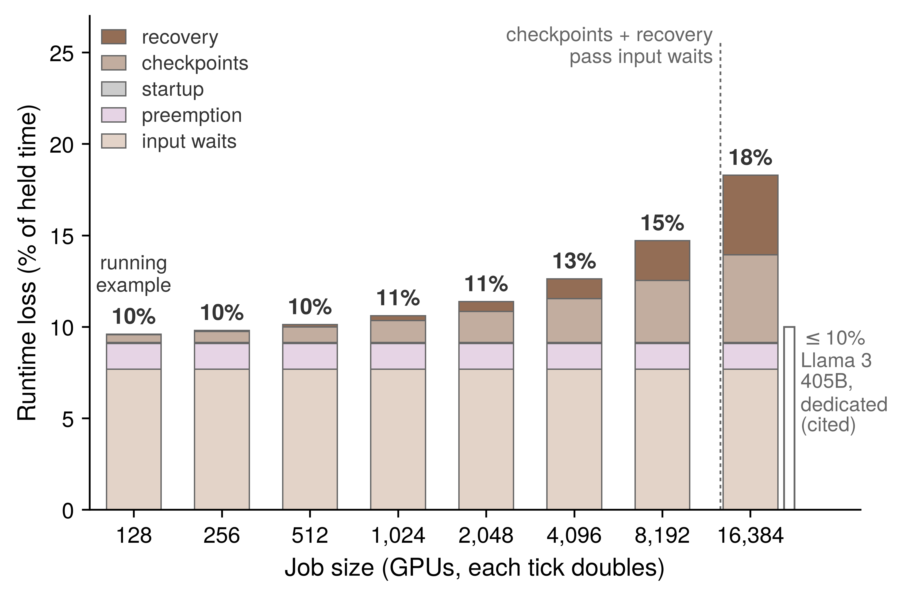
Композиция слагаемых также вскрывает межуровневую связанность, которую не видит ни один отдельный владелец. Поскольку вынужденное вытеснение отбрасывает всю работу с момента последней зафиксированной контрольной точки — так же, как аппаратный отказ, — оно выступает дополнительным прерыванием при выборе периодичности контрольных точек. Интервал 77 minutes нашего сквозного примера был выведен только из аппаратных отказов; учёт его бюджетированных вытеснений как прерываний в Уравнение (7) сокращает оптимальный интервал примерно до 21 minutes. Хотя периодичность контрольных точек относится к Интервал контрольных точек Юнга—Дейли, а бюджет вытеснения — к Стоимость вытеснения и каскады, композиция runtime goodput показывает, что эти два параметра являются связанными частями одного решения.5
Если Уравнение 4 описывает отдельную задачу, то агрегированная runtime goodput пула также снижается из-за простаивающих зарезервированных блоков и «зомби»-выделений, которые продолжают удерживать устройства после того, как исполнение остановилось. Поскольку Глава 9.4.2 относит оба интервала к runtime goodput, они становятся видимыми только при сравнении общего удерживаемого времени пула с суммой временных шкал его активных задач.
9.5.3 Доказательства, размер и реплика обслуживания
Задача, которая зависает внутри коллективной операции после истечения таймаута обнаружения, прогревается намного медленнее, чем предполагал её бюджет восстановления, или компилируется дольше после каждого релиза ПО, теряет удерживаемое время, которое не предскажет ни одна аналитическая модель. Прямое измерение runtime goodput по временной шкале задачи — вторая ступень Глава 9.3.2 — захватывает как моделируемые слагаемые, так и любой немоделируемый остаток, поскольку события временной шкалы отображаются прямо на категории потерь. Запуск идёт от события «gang-complete» планировщика до первого шага; простои входных данных берутся из поля ожидания входа каждого шага за каждый удержанный шаг; а паузы на контрольные точки видны как интервалы при каждой фиксации. Каждый отказ или вытеснение вносит свои интервалы обнаружения, перезапуска и прогрева вместе с шагами, которые он заставил задачу повторить, исключая при этом любое ожидание в очереди после выселения. Наконец, маркеры удержанных контрольных точек устанавливают, какие шаги засчитываются в прогресс, а установившиеся времена шага фиксируют безотказную скорость.
В рамках этого рабочего процесса Уравнение 4 служит аналитической проверкой временной шкалы задачи, а не её заменой. Когда предсказание и измерение совпадают, крупнейшее моделируемое слагаемое указывает, какого владельца подсистемы вызывать. Когда измеренная потеря превышает предсказание, необъяснённый остаток представляет удерживаемое время, потерянное из-за немоделируемых зависаний, медленных прогревов или ползучих накладных расходов инициализации. Остаток, растущий по многим задачам после развёртывания, — это в точности регрессия, которую ловит строка runtime в Таблица 4.
Обучающий запуск Llama 3 405B задаёт эталон хорошо организованной задачи переднего края. Meta сообщила более 90 percent эффективного времени обучения, что соответствует runtime goodput не менее 0.90 (Dubey и др. 2024 г.) — высокие требования с учётом периодичности аппаратных отказов, проанализированной в Анализ отказов в масштабе.
Хотя runtime goodput нашего сквозного примера, равный 0.90, совпадает с этой показательной цифрой до двух знаков после запятой, совпадение маскирует разницу в механизме. Работая на выделенном кластере на 128× большем числе устройств, задача Llama 3 должна была бороться за свою runtime goodput против накладных расходов на контрольные точки и восстановление, обусловленных отказами. Наша задача на 128 GPU почти ничего не теряет из-за аппаратных отказов, и почти вся её потерянная десятая часть приходится на простои входных данных и вытеснение. Поскольку один и тот же агрегированный коэффициент может указывать на совершенно разных владельцев, отчёт по парку должен фиксировать составляющие слагаемые потерь наряду с их суммой.
Напротив, стандартный бенчмарк-запуск короток, выделен и замеряется только после завершения инициализации,6 поэтому из пяти слагаемых потерь времени исполнения он испытывает максимум установившийся простой входных данных (перспектива 9.1). Любой план ёмкости, экстраполированный из скорости бенчмарка, должен поэтому восстановить остальные слагаемые этой композиции.
Для реплики обслуживания та же граница отделяет удерживаемое время от времени готовности, поэтому её runtime goodput — это отношение времени готовности к удерживаемому времени в журнале жизненного цикла реплики. Провижининг предшествует полному выделению и относится к goodput планирования, тогда как загрузка весов, загрузка модели и прогрев, следующие за ним, — требующие около 5.7 minutes в бюджете холодного старта из Автомасштабирование и управление ёмкостью — являются потерями времени исполнения. Насколько сильно эти минуты давят на runtime goodput, зависит от времени жизни реплики: реплика, перерабатываемая раз в день, тратит около 0.4 percent своего удерживаемого времени на становление готовой, тогда как реплика, поднятая на один час всплеска, теряет около 9 percent. Поддержание тёплого пула загруженных простаивающих реплик не устраняет эту стоимость; оно сдвигает простаивающую ёмкость из runtime goodput в program goodput как резерв обслуживания.
Будь то измерение готовой реплики или удержанного обучающего шага, пересечение этой границы означает, что удерживаемое время стало удержанной работой. Насколько быстро эта удержанная работа исполняется относительно аппаратного идеала — это область третьего фактора: program goodput.
↪ Задержка холодного старта, её разложение на провижининг, загрузку и прогрев, а также упреждающий прогрев, скрывающий её, разрабатываются в Автомасштабирование и управление ёмкостью.
Контрольная точка 9.1: Отнесение потерь к факторам
Каждый потерянный интервал относится на счёт один раз — на первой границе, которую он не смог пересечь, — и каждый фактор считывается из записи, которая может видеть его границу.
9.6 Программная полезная производительность
Даже когда задача удерживает полное выделение и удерживает каждый исполняемый шаг, она всё равно может растрачивать большую часть своей ёмкости, если каждый удержанный шаг исполняется намного ниже скорости, которую позволяет его аппаратура. В пределах удерживаемого времени нашей обучающей задачи Llama 2 70B program goodput — крупнейший единственный источник потерь, хотя потери планирования потребляют большую долю в общем разделяемом пуле (Глава 9.8.1). Поскольку удержанные шаги задачи работают при MFU парка 48 percent, её program goodput составляет около 0.48, то есть 52 percent времени, проведённого внутри удержанных шагов, не даёт никакого прогресса при идеальной скорости.
Программный goodput — также единственный фактор, потери которого эта глава и диагностирует, и восстанавливает непосредственно, меняя то, как исполняется шаг. Для диагностики потери программного goodput нужны два взаимодополняющих инструмента: «железный закон» и Закон парка (Fleet Law) позволяют определить, какой аналитический член шага удлиняет потеря, а иерархическая трасса шага — читаемая от метрики парка вплоть до отдельных аппаратных счётчиков — показывает, какой член реально выходит на критический путь.
↩︎ Схемы разбиения и их коммуникационные шаблоны, задающие большую часть структуры шага крупной задачи, рассматриваются в Распределённое обучение.
9.6.1 Члены «железного закона» и Закона парка
Ускорение ядра на одиночном ускорителе часто даёт гораздо меньшую выгоду — или не даёт её вовсе — после того, как задача масштабируется на парк, потому что шаг также тратит время на перемещение данных между уровнями иерархии памяти, ожидание на барьерах синхронизации и обмен тензорами по сетевому fabric. Разделить то, чего может достичь локальное изменение ядра, и то, что требует изменения на уровне парка, помогает одно-машинный «железный закон» (Уравнение 5). «Железный закон» раскладывает локальное исполнение каждого устройства на объём данных, пересекающих выбранную границу памяти, количество выполненных арифметических операций и задержку, которую не объясняет ни один из этих двух членов:
Здесь
Закон парка (Уравнение (3)) моделирует распределённый шаг как долю локальной работы каждого устройства плюс время коммуникации плюс время синхронизации минус та часть коммуникации и синхронизации, которая скрыта за вычислениями. Одно-машинный «железный закон» связывается с парком через эти члены. Члены перемещения данных и вычислений вместе с частью
Каждая потеря программного goodput, каталогизированная в Таблица 1, удлиняет один из членов Закона парка. Ожидания памяти, непиковая арифметика и медленная диспетчеризация на хосте удлиняют локальное исполнение, тогда как экспонированные коллективные операции удлиняют
| Потеря программного goodput | Удлиняемый член | Свидетельство в трассе шага | Владелец рычага |
|---|---|---|---|
| Ожидания памяти | Ядра у потолка пропускной способности; достигнутая пропускная способность HBM близка к пиковой при низкой арифметике | Эта глава (fusion, tiling, компиляция) | |
| Арифметика ниже пика | Ядра значительно ниже обоих потолков roofline; низкая occupancy или неудачный набор инструкций | Эта глава (выбор ядер, компиляция) | |
| Перепревычисление | Добавленные |
Утилизация аппаратных FLOPS выше MFU | Распределённое обучение (осуществимость по памяти) |
| Диспетчеризация на хосте | Часть |
Паузы простоя между короткими ядрами; длинные интервалы хостовых запусков | Эта глава (графовый replay, компиляция) |
| Экспонированная коммуникация | Интервалы коллективных операций без параллельных вычислений на любом ранге | Эта глава и Коллективная коммуникация | |
| Отстающие узлы | Все ранги, кроме одного, ожидают у одного барьера | Отказоустойчивость (замена узла) | |
| «Пузыри» конвейера | Стадии простаивают в начале и конце каждого шага | Распределённое обучение (расписание) |
Хотя член координации Закона парка охватывает также запись контрольных точек, обнаружение и восстановление после отказов, эти интервалы происходят между сохраняемыми шагами и относятся к runtime goodput (Глава 9.5). Поэтому член координации Закона парка лежит сразу на двух факторах goodput: только ожидания на барьерах и стадиях конвейера внутри сохраняемого шага снижают программный goodput. Проще говоря, член Закона парка указывает физический механизм и его инженерный рычаг, а граница goodput — какой фактор платит за потерю.
Это соответствие также ограничивает, насколько локальное ускорение ядра может помочь в масштабе. Поскольку оптимизация ядра укорачивает лишь
К обслуживающей реплике применяется в точности та же декомпозиция к одиночному шагу декодирования. Поскольку каждое из восьми её устройств хранит один шард весов модели 70B, шаг декодирования с малым батчем должен стримить весь свой шард весов из HBM, чтобы выполнить лишь несколько операций на каждый вес, из-за чего доминирующим становится член перемещения данных
В шаге декодирования реплики с малым батчем доминирует член перемещения данных «железного закона».
Контрольная точка 9.2: Члены «железного закона» и Закона парка
Программный goodput падает только через члены шага, и изменение помогает только через тот член, который оно укорачивает.
9.6.2 Экспонированная коммуникация в масштабе парка
Задача, распределённая по многим узлам, обязана обмениваться данными через межузловой сетевой fabric, которая медленнее внутриузловых линков, разделяется с конкурирующими задачами и по которой идут коллективные операции, чей объём и задержка растут с числом участников. Та часть этого обмена, которую расписание исполнения не может скрыть за полезными вычислениями, удлиняет каждый сохраняемый шаг. Именно этот интервал экспонированной коммуникации отличает многузловую задачу в парке от той же рабочей нагрузки на одном узле, и, поскольку задача удерживает полное выделение и сохраняет каждый замедленный шаг, потеря целиком относится к программному goodput.
↩︎ Сколько коммуникации расписание может скрыть и почему скрытая доля падает по мере роста коллективных операций относительно окна вычислений, рассматривается в Пределы перекрытия и открытая передача.
Наш сквозной пример изолирует этот мног узловой штраф в одном сравнении, где вместо измеренных времён шага используются сконструированные. Поскольку его одноузловой базовый уровень и конфигурация парка на 128 GPU обучают одну и ту же модель с одинаковой рабочей нагрузкой на устройство, отношение их MFU оценивает, во что программе обходится масштабирование через fabric. Это оценка, а не точное измерение, поскольку две конфигурации могут различаться и по другим параметрам, например выгрузкой состояния оптимизатора в память хоста в одноузловом базовом уровне.
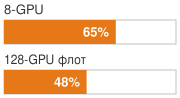
MFU парка опускается ниже одноузлового базового уровня.
Инженерный расчёт 9.4: С одного узла на 128 GPU
Задача: Задача обучения с параметром 70B из сквозного примера достигает одноузлового базового уровня в 65 percent MFU на одном узле с 8 GPUs, причём состояние оптимизатора выгружено в память хоста, поскольку полное состояние обучения модели 70B превышает HBM одного узла. При масштабировании на 128 GPUs с той же работой на каждом устройстве сконструированное время шага в масштабе микробатча возрастает с 180 ms до 245 ms. Какой программный goodput задача сохраняет в масштабе парка и во сколько масштабу обходится эффективность узла?
Математика: Обе величины MFU применяют Уравнение 3 — полезные FLOPS шага, делённые на FLOPS, которые устройства могли бы выполнить на пике за астрономическое время этого шага.
Шаг 1: MFU парка. Один шаг выполняет 14.9 PFLOP полезной работы, тогда как 128 GPUs
Шаг 2: Эффективность относительно узла. Поскольку каждое устройство выполняет одинаковую работу в обеих конфигурациях, отношение двух MFU равно отношению двух времён шага: 180 ms ÷ 245 ms
Шаг 3: Время сверх узла. Каждый шаг парка тратит 180 ms на работу узла плюс 65 ms, которых шаг узла не имел, — около 27 percent шага парка.
Результат: Задача сохраняет программный goodput около 0.48 и 74 percent эффективности узла, теряя 26 percent из-за масштаба.
Системный вывод: Величина 65 ms за шаг сверх базового уровня узла ограничивает то, что могут забрать экспонированные коммуникация и синхронизация, но сама по себе не изолирует fabric, поскольку между конфигурациями могут меняться и выгрузка, и формы ядер, и ожидания на барьерах. Граница становится атрибуцией лишь тогда, когда трасса шага показывает, какие интервалы заполняют добавленное время.
Вычисленное в ноутбуке отношение — это масштабная эффективность из Уравнение (1), здесь отнесённая к одному узлу, а не к одному устройству, как в Физика масштабирования и закон Амдала с коммуникацией, — и она завершает согласование метрик, начатое в Глава 9.2.2. MFU парка задачи равна её одноузловой базовой MFU, умноженной на масштабную эффективность относительно этого узла (65 percent
На языке Закона парка дополнительные 65 ms за шаг отражают рост
Обучающий запуск Llama 3 405B даёт производственную точку отсчёта: он удерживал MFU около 41 percent на 16,384 GPUs7 при схеме параллелизма, настроенной командой, построившей кластер (Dubey и др. 2024 г.). Несколько более высокий программный goodput сквозного примера на 128 GPU — сконструированное значение, а не измеренное сравнение. Он установлен выше значения Llama 3, чтобы отразить ожидание, что задача, охватывающая куда меньше устройств, тратит меньшую долю каждого шага на межузловые коллективные операции; о качестве ядер любого из двух запусков это ничего не говорит. Оба запуска отдают примерно половину времени своих сохраняемых шагов относительно пикового арифметического потолка; задача диагностики производительности — определить, какие конкретные члены Закона парка удерживают эту потерянную половину.
9.6.3 Разбор шага вглубь
Инспекция аппаратных счётчиков произвольного ядра до того, как стало известно, какой ранг или поток задержал шаг, тратит инженерные усилия на операции, которые могут вообще не лежать на критическом пути. Когда потеря уже локализована до программного goodput, трасса шага становится основным свидетельством, и читать её нужно сверху вниз. Диагностика спускается через четыре иерархических уровня, причём нижние три раскрывают ступень трассы шага из Глава 9.3.2 (Рисунок 6):
- Метрики задания и парка (время шага против плана, MFU удержанных шагов и таймеры шага по рангам) обнаруживают, что потеря программного goodput существует.
- Трассы фреймворка и распределённые трассы соотносят время шага с операциями модели по рангам, показывая, не отстающий ли ранг или открытый коллективный вызов удлиняет шаг.
- Таймлайны ядер вскрывают промежутки запуска на хосте и перекрытие вычислений и коммуникаций на уровне потоков на отдельном ранге.
- Аппаратные счётчики производительности измеряют достигнутую пропускную способность памяти, занятость SM и состав инструкций для отдельного ядра.
Каждый более низкий уровень собирается только для конкретных рангов и временных окон, отмеченных уровнем выше. Карта инструментов сопоставляет инструменты профилирования одного устройства, используемые на каждой ступени.
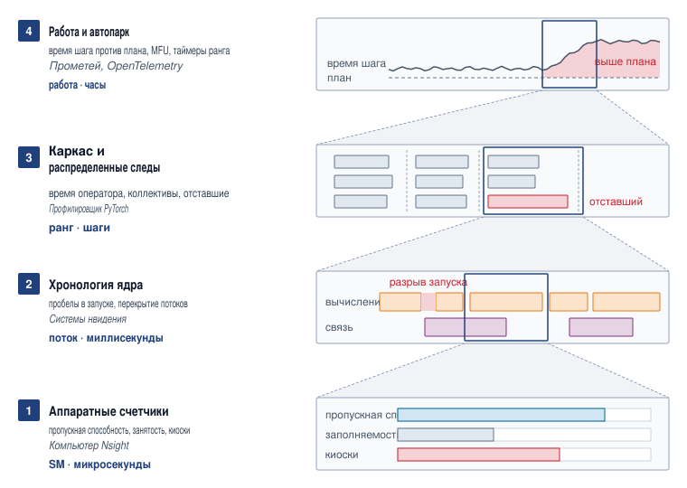
Построенная диагностика нашего сквозного примера спускается по трём из четырёх уровней. Во-первых, распределённые трассы по группе параллелизма по данным показывают, что ни один ранг не отстаёт от остальных постоянно, что исключает аппаратного «отстающего», и выявляют интервалы коллективных вызовов, расширяющиеся с ростом числа устройств. Далее, таймлайн ядер на репрезентативном ранге показывает, что эти коллективные вызовы исполняются на коммуникационном потоке без параллельных ядер на вычислительном потоке в течение второй части обратного прохода. Этот таймлайн устанавливает, что коллективные вызовы открыты, но не почему. Отделить неудачное расписание коллективных вызовов от передачи, слишком долгой для окна обратных вычислений, позволяет сравнение времени передачи коллективного вызова с этим окном (Пределы перекрытия и открытая передача). Для градиентной редукции по оси данных задания сравнение решающее, поскольку эта передача занимает больше времени, чем весь шаг микробатча. Никакое расписание не способно скрыть её внутри одного шага, поэтому задание выполняет её один раз за шаг оптимизатора после накопления градиентов за множество микробатчей (Глава 9.7.2). Открытые интервалы на каждом шаге микробатча — по допущению построенного примера — это межузловая синхронизация для каждого микробатча и вызываемые ею ожидания коллективных вызовов, а не передача, которую пример измеряет. Аппаратные счётчики, самый низкий уровень, не нужны, поскольку вычислительные ядра, обрамляющие открытые коллективные вызовы, уже работают с ожидаемой скоростью, а спуск останавливается, как только найден ответственный член закона парка (Fleet Law).
Системный взгляд 9.2: Цена трассировки шага
Трассировка добавляет работу к шагу, который она измеряет. Запись каждого запуска ядра, выделения памяти и коллективного вызова потребляет циклы хоста и память и может добавлять синхронизацию, поэтому трассируемый шаг может исполняться медленнее или с иным перекрытием коммуникаций и вычислений, чем нетрассируемые шаги, которые он призван объяснить. Возмущение растёт с числом собираемых событий и опций. Трасса, следовательно, является свидетельством о структуре шага, тогда как длительность шага измеряется по таймлайну нетрассируемого задания, а сравнение инструментированного и неинструментированного окна одного задания показывает, насколько трасса всё изменила.
Окно также должно описывать установившийся режим задания. Собственные шаги прогрева профилировщика позволяют профилировщику запуститься до начала записи, но не гарантируют, что приложение завершило компиляцию, выделение памяти и инициализацию устройств, поэтому окно выбирается из времён шага, переставших меняться. Запуск, попавший внутрь трассы, относится к goodput среды исполнения и измеряется по таймлайну, а не по трассе.
Оценка программного goodput первого порядка вообще не требует трассы. Диагностика из Распространённые антипаттерны утилизации сравнивает полную длительность шага с временем шага только по вычислениям (одни прямой и обратный проходы). Поскольку идеальное аппаратное время шага не может быть меньше времени только вычислений, отношение времени только вычислений к фактическому времени шага — немедленная верхняя граница программного goodput.
Систематическая триажировка медленного шага начинается вне ядер ускорителя. Если шаг не укладывается в целевую длительность при низкой утилизации ускорителя, узкое место находится во входных остановках, хостовой предобработке или открытых коммуникациях — потому что оптимизация ядра не может ускорить устройство, ожидающее поступления работы. Лишь когда ускоритель активно исполняет ядра, диагностика переходит к вопросу, ограничены ли эти ядра арифметической пропускной способностью или пропускной способностью памяти, что оценивается относительно гребневой точки модели «крыши» (операционной интенсивности, где наклон пропускной способности памяти встречается с вычислительным потолком). Организованные в порядке применения, эти проверки образуют диагностическое дерево решений (Рисунок 7), чьи начальные ветви ведут вовсе за пределы программного goodput. Устройство, ожидающее следующий батч или хостовую предобработку, теряет goodput среды исполнения на входной границе, что возвращает исследование к Глава 9.5.
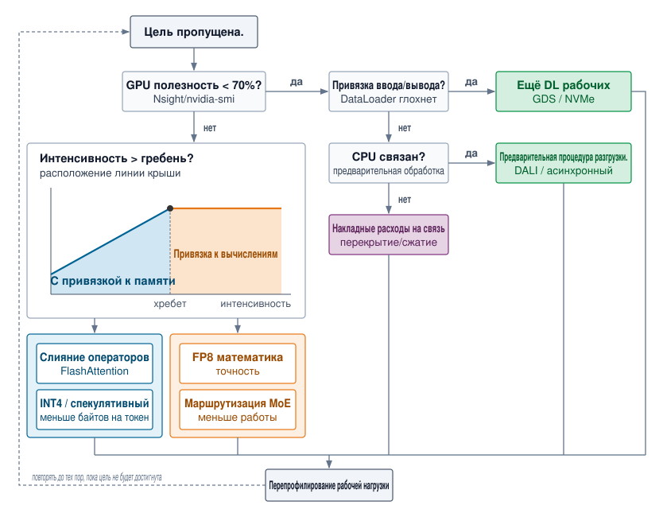
Каждый путь блок-схемы завершается повторным профилированием рабочей нагрузки, поскольку оптимизация засчитывается только если измеренный шаг становится короче в рамках условий контракта измерений Глава 9.3.1. Устранение одного открытого интервала часто обнаруживает следующий, сдвигая критический путь и запуская диагностический цикл заново.
Когда блок-схема подтвердила, что ускоритель занят, его ядра оцениваются по модели «крыши». Ядро с арифметической интенсивностью
Определение 9.4: Измеренная арифметическая интенсивность
Измеренная арифметическая интенсивность — это отношение операций с плавающей запятой, которые ядро фактически исполняет, к байтам, наблюдаемым при пересечении именованной границы памяти, например HBM, за время этого исполнения (FLOP на байт).
- Значимость: Она помещает профилируемое ядро на ту же «крышу», что и потолки пропускной способности (
) и вычислений ( ), так что его расстояние ниже алгоритмической оценки вскрывает трафик, который алгоритм не требовал. - Отличие: В отличие от алгоритмической интенсивности, учитывающей перемещение данных, которое требует идеализированный алгоритм, измеренная интенсивность включает разбиение на тайлы, поведение кэша, слияние, дополнение (padding) и избыточные передачи.
- Типичная ошибка: Точка на «крыше» интерпретируема только тогда, когда её соглашение о FLOP и граница памяти соответствуют потолкам на том же графике.
Размещение профилируемого ядра на «крыше» выполняется в три шага. Во-первых, аппаратные счётчики ядра сообщают его достигнутую скорость FLOP и достигнутую пропускную способность через именованную границу памяти. Во-вторых, деление достигнутой скорости FLOP на достигнутую пропускную способность даёт измеренную арифметическую интенсивность ядра, которая выявляет избыточный трафик памяти всякий раз, когда она оказывается ниже алгоритмической оценки. В-третьих, сравнение достигнутой скорости FLOP с потолком «крыши» при этой измеренной интенсивности относит ядро к одному из трёх режимов:
- Гораздо ниже обеих границ. Ядро страдает от неэффективности исполнения, а не от ограничения аппаратного ресурса — например, из-за последовательных зависимостей, неудачной смеси инструкций или недостаточного параллелизма — а средство исправления — в том, как ядро написано или выбрано.
- Вблизи границы пропускной способности. Ядро насыщает пропускную способность памяти; ускорить его может только передача меньшего числа байтов (через слияние операторов, разбиение на тайлы или более узкое числовое представление).
- Вблизи границы вычислений. Ядро насыщает арифметические блоки; сократить его длительность может только уменьшение числа операций или переход к более быстрому поддерживаемому числовому формату или ускорителю.
Если roofline-модель сужает набор возможных рычагов для отдельного ядра, то трасса шага определяет, занимает ли это ядро достаточно большую долю критического пути, чтобы оправдать его оптимизацию.
Ядро нормализации иллюстрирует эту трёхшаговую процедуру размещения. Предположим, аппаратные счётчики для ядра LayerNorm на H100 сообщают о 5 TFLOP/s достигнутых вычислений и 2.8 TB/s достигнутой пропускной способности HBM. Его измеренная арифметическая интенсивность составляет 5 TFLOP/s ÷ 2.8 TB/s
Ядра нашего обучающего задания на 70B делятся по той же линии. Большие матричные умножения в проекциях внимания и блоках feed-forward работают выше точки излома, вблизи границы вычислений. Напротив, нормализация, функции активации, softmax, остаточные сложения и обновление оптимизатора лежат далеко внизу на участке ограничения пропускной способностью памяти — совсем как LayerNorm — выполняя крошечную долю полезных FLOP шага, но потребляя непропорционально большую долю локального времени исполнения. Поэтому сравнение времени, проведённого в матричных умножениях, со временем во всех остальных ядрах даёт быструю проверку локальных потерь goodput программы. Шаг, доминируемый быстрыми матричными умножениями, теряет goodput программы в основном из-за невыкрытых коммуникаций и синхронизации (как в нашем сквозном примере). Шаг же, тратящий значительное время на не-GEMM ядра, несёт локальные потери от трафика памяти, которые может вернуть слияние операторов.
Шаг декодирования обслуживающей реплики лежит ещё дальше вниз на участке ограничения пропускной способностью. При размере батча один каждый из восьми ускорителей должен выгрузить весь свой фрагмент весов из HBM, чтобы выдать один токен. Это минимальное время выгрузки, около 5.2 ms на токен (Пропускная способность памяти и задержка токена), служит именованным идеалом для goodput программы реплики. Даже на этом идеальном минимуме тензорные ядра H100 работают лишь на 0.3 percent от своего FP16-пика, что делает MFU неинформативной. Вместо неё goodput программы реплики измеряется метрикой MBU: отношением времени минимума выгрузки весов к измеренному времени шага (Глава 9.2.2).
Поскольку минимум выгрузки весов учитывает только параметры модели, измеренный шаг декодирования всегда занимает больше времени. Чтение key-value кэша, выполнение тензорно-параллельного AllReduce на каждом слое и диспетчеризация десятков мелких ядер на слой — всё это удлиняет шаг и снижает MBU, проявляясь как потери goodput программы реплики. Какой размер батча реплика может накопить, чтобы подняться по склону roofline-модели к точке излома, определяется её целевым уровнем обслуживания задержки (latency SLO) в Обслуживание в масштабе.
9.6.4 Типовые шаблоны узких мест
Ускоритель, простаивающий между шагами в ожидании следующего входного батча, демонстрирует такое же падение утилизации, как и ускоритель, простаивающий внутри шага в ожидании завершения коллективной операции. Но первый теряет goodput среды исполнения и отвечает за это конвейеру данных, тогда как второй теряет goodput программы и отвечает за это перекрытию коммуникаций. Распознавание повторяющихся сигнатур трассы даёт быстрые диагностические гипотезы (Таблица 7), причём определение того, какой фактор goodput снижает сигнатура, столь же важно, как и определение её механизма, поскольку не каждый симптом медленного шага является потерей программы.
| Шаблон трассы | Вероятная причина | Фактор и член уравнения | Кандидат-рычаг | Компромисс для проверки |
|---|---|---|---|---|
| Малые промежутки между множеством коротких ядер | Диспетчеризация каждого ядра хостом доминирует | Программа; член диспетчеризации в |
Повтор графа, слияние или компиляция (Глава 9.7.3) | Время компиляции, относимое на goodput среды исполнения; варианты для каждой формы входа |
| Большие всплески потребления памяти | Неслитые операторы материализуют промежуточные тензоры в HBM | Программа; |
Слияние, или тайловое внимание, никогда не записывающее матрицу оценок (Глава 9.7.3) | Числовая валидация и сопровождение ядра |
| Низкие FLOP/s при высокой достигнутой пропускной способности | Доминируют операции, ограниченные памятью | Программа; |
Меньше байт на шаг — через слияние, более компактное представление или больший батч на устройство, если позволяют память и сходимость | Точность, давление на кэш и предохранители качества |
| Большая часть шага в не-GEMM ядрах | Ядра нормализации, активации, softmax и оптимизатора лежат на участке ограничения пропускной способностью | Программа; |
Встроить не-GEMM работу в соседние ядра (Глава 9.7.3) | Допустимость слияния и сопровождение ядра |
| Полосы коллективных операций во время простоев устройства | Коммуникации сериализованы, а не перекрыты | Программа; |
Перекрывать коллективные операции независимой работой (Глава 9.7.2); выбранное компилятором разбиение | Размер корзины (bucket), конкуренция за ресурсы устройства, сложность расписания |
| Все ранги, кроме одного, ждут у барьера | Неравномерная работа или деградирующее устройство | Программа; |
Равномерное разбиение; лимиты ёмкости экспертов для MoE (Экспертный параллелизм (mixture of experts)); замена узла уровнем надёжности | Стоимость перезапуска, относимая на goodput среды исполнения, против сэкономленного времени шага |
| Стадии простаивают в начале и конце каждого шага | Пузыри конвейера | Программа; |
Больше микробатчей или чередующееся расписание (Конвейерный параллелизм) | Память под активации и эффективность на микробатч |
| Повторяющиеся большие выделения памяти | Буферы пересоздаются, а не переиспользуются | Программа; время аллокатора в |
Планирование памяти компилятором (Глава 9.7.3) или заранее выделенные пулы буферов | Поведение аллокатора; стоимость пересчёта, если активации отбрасываются |
| Периодические провалы активности между шагами | Подготовка входных данных не конвейеризована с шагом | Среда исполнения; ожидание входа, не потеря программы | Больше воркеров данных, сервисы предобработки или претокенизированные данные (Хранение данных) | Стоимость хранения и свежесть данных |
Последняя строка Таблица 7 на практике диагностируется ошибочно чаще всего; проверка поля ожидания входа на шаг в таймлайне задания отличает простой из-за входных данных от невыкрытой коллективной операции ещё до того, как открыт какой-либо след профилировщика. Когда иерархическое погружение завершено, оно передаёт конкретный член Закона парка (Fleet Law) и его долю в шаге — невыкрытые межузловые коммуникации для нашего обучающего задания, чья доля предполагается в построенном примере, и зазор над минимумом выгрузки весов для нашей обслуживающей реплики — которые Глава 9.7 теперь восстанавливает с помощью целенаправленных инженерных рычагов.
9.7 Восстановление goodput программы
Настройка одноустройственного ядра, когда шаг ограничен межузловыми редукциями градиентов, или перекрытие коллективных операций, когда шаг ограничен запуском ядер с хоста, не затрагивает критический путь. Восстановление goodput программы требует изменить то, как исполняется сохранённый шаг, а оптимизация помогает ровно в той мере, в какой она сокращает невыкрытый член шага. Три семейства рычагов нацелены на различные члены Закона парка:
- Разбиение, выводимое компилятором, определяет, какие коллективные операции выполняет шаг и по каким физическим линиям связи они проходят (
). - Перекрытие коммуникаций прячет часть этих коллективных операций за независимыми вычислениями, увеличивая зачёт перекрытия (
). - Оптимизации уровня ядра (слияние, тайлинг, повтор графа и компиляция) сжимают одноустройственное исполнение (
).
Поскольку ускорение от любого рычага зависит от того, что остальные оставили невыкрытым на критическом пути, инженеры применяют эти рычаги по одному и повторно измеряют шаг после каждого изменения.
9.7.1 Разбиение, выводимое компилятором
Модель, в которой тензорно-параллельные модули размещают вызовы AllReduce непосредственно внутри методов прямого и обратного прохода каждого слоя (Распределённое обучение), не может изменить способ разбиения этих слоёв или перейти на топологию узлов, требующую иного разбиения, без правки самого кода модели. Обёртка data-parallel сама подстраивается под новое число устройств, а слои с ручным разбиением — нет. Поскольку способ разбиения большого обучающего задания по устройствам определяет большую часть коммуникаций его шага, привязка этой раскладки к рукописному коду слоёв превращает каждое изменение раскладки в изменение кода. Разбиение, выводимое компилятором, впервые предложенное в партиционере GSPMD компилятора Accelerated Linear Algebra (XLA) (Xu и др. 2021 г.), переносит вывод раскладок тензоров и вставку коллективных операций от автора модели к компилятору.
Определение 9.5: Разбиение, выводимое компилятором
Разбиение, выводимое компилятором — это разбиение одной программы по сетке (mesh) устройств, при котором программист аннотирует, как несколько тензоров разрезаны по именованным осям сетки, а компилятор выводит раскладку всех остальных тензоров и вставляет требуемые этими раскладками коллективные операции.
- Значимость: вставленные коллективные операции и есть член коммуникаций шага, поэтому аннотации и отображение осей сетки на парк решают, какую долю каждого сохранённого шага задание тратит на коммуникации. Поскольку раскладка задаётся отдельно от кода модели, иная раскладка — это иной набор аннотаций, а не переписанная программа.
- Отличие: в отличие от параллелизма, заданного программистом, где инженер записывает или выбирает каждую коллективную операцию через обёртку data-parallel или слой с ручным разбиением, выводимое компилятором разбиение оставляет инженеру лишь ключевые аннотации, а остальное выводит само. Сами стратегии разбиения — параллелизм по данным, по модели и конвейерный — не меняются; меняется лишь то, кто пишет их коммуникации.
- Типичная ошибка: частая ошибка — считывать коммуникации шага из аннотаций. Там, где выведенные раскладки расходятся, компилятор вставляет коллективные операции перешардирования, которые не называет ни одна строка программы, так что записью того, что шаг передаёт по коммуникациям, является трасса шага, а не исходный код.
В этой модели инженер задаёт лишь два входа. Первый — логическая сетка устройств, оси которой несут символические имена. Для нашего сквозного примера, где используется тензорный параллелизм внутри каждого узла и параллелизм по данным между узлами 16 nodes, сетка имеет ось model шириной 8 устройств и ось data, охватывающую шестнадцать узлов. Второй вход — небольшой набор аннотаций шардирования на ключевых тензорах, объявляющий, какое измерение тензора разрезано по какой оси сетки. Измерение входного батча разрезается по оси data. Внутри каждого блока feed-forward веса проекций gate и up (две входные матрицы слоя с затвором, выходы которых объединяет активация с затвором) разрезаются поколоночно по оси model, тогда как вес выходной проекции разрезается построчно. Проекции внимания разрезаются по головам вдоль оси model. Все остальные промежуточные тензоры программы остаются без аннотаций.
Из этих нескольких семян компилятор выводит остальную часть параллельной программы посредством распространения шардирования, обходя граф вычислений, чтобы вывести раскладку выхода каждого оператора из раскладок его входов. Умножение входной активации на весовую матрицу, разбитую по столбцам, даёт активацию, разбитую по измерению признаков; последующее поэлементное вентильное активирование сохраняет эту раскладку без коммуникации. Далее умножение этой расщеплённой по признакам активации на весовую матрицу выхода, разбитую по строкам, даёт частичную сумму на каждом устройстве, что побуждает компилятор вставить AllReduce вдоль оси model для завершения проекции. Обратный проход зеркально повторяет этот вывод. Градиенты весов каждого устройства покрывают только его локальный шард вдоль оси model, но представляют собой частичные суммы по оси data, поэтому компилятор автоматически вставляет межузловую редукцию градиентов вдоль оси data (или ReduceScatter в паре с прямым AllGather, когда состояние оптимизатора шардируется). Получившийся график коммуникаций совпадает с вручную разбитым слоем в стиле Megatron из Тензорный параллелизм, однако он синтезируется автоматически из кода модели для одного устройства, не содержащего явных коллективных вызовов (Рисунок). Везде, где в графе встречаются два несовместимых раскладки тензоров, распространение разрешает несоответствие, вставляя AllGather, ReduceScatter, AllToAll или поточечную перестановку.
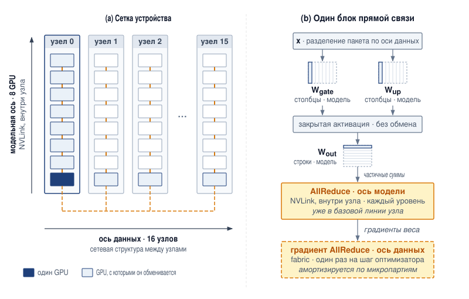
↩︎ Какие стратегии комбинирует учебное задание и осуществимость каждой комбинации, устанавливаются в Гибридный параллелизм.
Каждый ускоритель исполняет один и тот же скомпилированный бинарник, используя собственные координаты меша во время исполнения, чтобы индексировать свой локальный шард весов и выбирать участников коллективов — это модель исполнения «одна программа, множество данных» (SPMD), от которой GSPMD и получила своё имя (Xu и др. 2021 г.). Поскольку одна компиляция обслуживает все ранги, время компиляции масштабируется с размером графа модели, а не с числом устройств в парке. Вставленные распространением коллективы являются частью этого скомпилированного бинарника, поэтому сохранённый артефакт несёт свой график коммуникаций в каждое последующее задание или реплику, исполняющие ту же модель, меш и аннотации. Изменение размерностей меша или аннотаций шардирования по-прежнему запускает новую компиляцию, чья стоимость в терминах goodput во время исполнения взвешивается против выигрыша в goodput программы в Глава 9.9.3.
Поскольку меш устройств — логическая абстракция, физическое размещение, назначенное планировщиком кластера, определяет, по каким аппаратным каналам проходит каждая ось меша. Когда восьмидесятиэлементная ось model отображается на один узел, её послойные AllReduce проходят по высокоскоростному NVLink; если же та же ось разбросана по узлам, те же коллективы проходят по межузловому fabric при малой доле пропускной способности. Таким образом, стоимость коммуникаций шага определяют три различных механизма: аннотации шардирования решают, какие коллективы синтезируются, физическое размещение меша — насколько быстро выполняется каждый коллектив, а планирование потоков — какая часть этой длительности остаётся незакрытой. В терминах Fleet Law выведенное компилятором разбиение задаёт
Следовательно, изменение аннотации шардирования меняет коммуникационный шаблон шага, не трогая ни одной строки математического кода модели, и его эффект должен быть проверен по контракту измерений из Глава 9.3.1. Трейс шага даёт необходимый аудит: подсчёт коллективов в одном шаге по типу операции и оси меша и сверка этого счёта с задуманной раскладкой подтверждают, вела ли себя распространение как ожидалось. Неожиданный AllGather, появляющийся в каждом слое, — классический симптом конфликта аннотаций: как правило, его вызывает промежуточный reshape или один неверно аннотированный тензор, заставляющий компилятор туда-сюда пересшардировать. Поскольку внутренняя стоимостная модель компилятора тоже может выбрать неоптимальный путь распространения, любую выведенную компилятором раскладку следует рассматривать как гипотезу о
На уровне парка отделение раскладки от кода модели позволяет разбиению бесшовно подстраиваться под выделение ресурсов. Когда оркестратор парка изменяет размер эластичного задания (Эластичные политики масштабирования) на другую топологию узлов, ось model может меняться вместе с осью data, а компилятор регенерирует исполняемый файл из существующих аннотаций. Исследование компромиссов раскладки — например, шардинг состояний оптимизатора или перенос коммуникаций на внутримашинные каналы — тоже сводится к правке аннотаций, а не к переписыванию слоёв. В то же время наш сквозной пример иллюстрирует границу того, чего может достичь одно лишь разбиение. Его меш уже замыкает каждый коллектив оси model внутри одного узла, поэтому дополнительное время, которое его шаг на 128 GPU проводит сверх базовой линии одиночного узла, происходит от трафика по межузловой оси data. Может ли этот трафик быть скрыт, зависит от того, как его время передачи соотносится с окном обратных вычислений, и для крупнейшего обмена — редукции градиентов — ответ решает, когда вообще выполняется редукция.
9.7.2 Коллективы тензорного параллелизма в условиях конкуренции
Когда разбиение раскладки зафиксировало, какие коллективы должен исполнить шаг, незакрытое время коммуникаций — это та доля этих коллективов, которую график не смог скрыть за независимыми вычислениями. Наш сквозной пример исполняет два класса коллективов, различающихся зависимостями по данным. Межузловые редукции градиентов вдоль оси data имеют слабые зависимости. Как только обратный проход закончил вычислять градиенты для одного блока слоёв, этот блок может редуцироваться по узлам, пока вычисления обратного прохода продолжаются на более ранних слоях. Это стандартный блочный оверлап, реализуемый DistributedDataParallel. Аналитические пределы для скрытия таких слабо связанных обменов установлены в Пределы перекрытия и открытая передача, и для нашего задания на 128 GPU полная редукция градиентов лежит далеко за их пределами.
Каждый GPU хранит 16-битные градиенты своей восьмой части 70B параметров — 17.5 GB, — а кольцевая редукция по 16 nodes прогоняет через собственный сетевой интерфейс GPU в 1.875 раза больше этого шарда. Даже на полной пропускной способности порта NDR — 50 GB/s — передача занимает не менее 656 ms, то есть 2.7× всего шага микробатча 245 ms, поэтому ни один блочный график не может скрыть её внутри одного шага. Шардирование состояния оптимизатора не спасает отдельный шаг: ReduceScatter, который должен перекрываться с обратным распространением, всё равно требует около 328 ms — дольше всего шага.
Поэтому задание накапливает градиенты за множество шагов микробатчей и редуцирует их один раз за шаг оптимизатора. Чтобы удержать полностью незакрытую редукцию на уровне 5 percent шага оптимизатора, накопленные вычисления должны длиться в 19 раза дольше редукции — около 12.5 s, — что составляет 51 шагов микробатчей по 245 ms, или около 1.8 млн токенов на обновление. Референсное задание архетипа на 175B делает тот же компромисс в большем масштабе, накапливая 96 микробатчей на реплику и тратя около 2 percent шага оптимизатора на редукцию по оси data-parallel. При 51 микробатчах редукция добавляет в среднем около 13 ms на микробатч — время, лежащее вне шага микробатча и вне MFU-показателей главы, — и снижает goodput программы за весь шаг оптимизатора с 0.48 до примерно 0.456. Следовательно, редукция градиентов не может быть тем, что заполняет 65 ms, которые каждый иллюстративный шаг микробатча проводит сверх базовой линии узла. Построенный пример считает, что это время — пер-микробатчная синхронизация по 16 nodes и порождённые ею ожидания коллективов, которые повторяются на каждом микробатче и не могут быть скрыты; пример не оценивает их как конкретную операцию.
Напротив, внутримашинные коллективы вдоль оси model имеют строгие последовательные зависимости: каждый AllReduce завершает тензор активации, который следующий оператор того же слоя трансформера немедленно потребляет, не давая последующим операциям слоя начаться до завершения коллектива. Поскольку эти обмены по оси model никогда не покидают узел, их длительность уже встроена в базовую линию одиночного узла.
Оценка снизу по пропускной способности (без учёта задержки запуска и пересчёта активаций) ограничивает ту долю одноузлового шага, которую могут занимать эти внутриузловые коллективные операции. Каждая точка обмена передаёт примерно 36 MB активаций между 8 GPU узла, а 320 точек обмена за полный шаг прямого и обратного прохода требуют около 45 ms времени передачи по NVLink. Даже если бы ни одна из этих передач не была скрыта, они составляли бы около 25 percent одноузлового шага длительностью 180 ms — хорошо внутри зазора в 35 percent между MFU узла, равным 65 percent, и арифметическим идеалом. Следовательно, коллективные операции по оси model представляют собой локальные, уровня узла, потери программы, которые не растут с размером парка, пока ось model остаётся в пределах одного узла. Межузловой трафик по оси data несёт на себе нагрузку масштабирования, и трасса одного ранга легко разделяет эти два вида трафика, поскольку они выполняются в разных группах процессов.
Скрытие коллективной операции, результат которой нужен следующей операции, требует найти независимые вычисления, которые можно выполнять параллельно. Один подход чередует работу второго микробатча, не зависящего от выполняемой коллективной операции. Альтернатива — мелкозернистое разделение вычислений и коммуникации. Оно разбивает и матричное умножение, и потребляющую его результат коллективную операцию на меньшие тайлы, так что передача коллективной операции для одного тайла идёт одновременно с матричным умножением следующего тайла. Компилятор с разбиением на части может синтезировать это преобразование автоматически (Wang и др. 2022 г.). Ни одна из стратегий не сокращает само время коммуникации
Однако перекрытие коммуникации и вычислений на одном ускорителе никогда не бывает свободным от конкуренции за ресурсы. На GPU NVIDIA параллельное исполнение организуется через CUDA-потоки — упорядоченные очереди ядер, копирований памяти и коллективных операций, которые внутри одного потока выполняются последовательно, но могут выполняться параллельно в разных потоках. Шаг распределённого обучения обычно назначает матричные умножения и поэлементные операции вычислительному потоку, а коллективные операции NCCL — отдельному коммуникационному потоку (Список 1).
compute_stream = torch.cuda.Stream()
comm_stream = torch.cuda.Stream()
producer_stream = torch.cuda.current_stream()
# Inputs are ready on producer_stream; gradients do not alias A or B.
compute_stream.wait_stream(producer_stream)
comm_stream.wait_stream(producer_stream)
A.record_stream(compute_stream)
B.record_stream(compute_stream)
gradients.record_stream(comm_stream)
with torch.cuda.stream(compute_stream):
output = torch.matmul(A, B) # Non-blocking compute
with torch.cuda.stream(comm_stream):
work = dist.all_reduce(gradients, async_op=True)
work.wait() # Establish completion on the communication stream
torch.cuda.synchronize() # Wait for both to completeРазмещение работы в отдельных потоках открывает возможность параллелизма, но не разделяет лежащие в основе аппаратные ресурсы. Поскольку библиотеки коллективных операций, такие как NCCL, запускают собственные GPU-ядра для копирования, упаковки и редукции буферов через NVLink и сетевые интерфейсы, перекрытая коллективная операция напрямую конкурирует с параллельными матричными умножениями за стриминговые мультипроцессоры (SM), кэш L2 и пропускную способность HBM (Pati и др. 2024 г.). На временной шкале ядер успешное перекрытие потоков сдвигает полосу коллективной операции под вычислительные ядра, но конкуренция за ресурсы растягивает длительность этих вычислительных ядер, из-за чего шаг завершается позже, чем предсказывала бы идеализированная модель без конкуренции (Рисунок 8). Перекрытие коллективной операции улучшает полезную производительность программы (goodput) только если время коммуникации, убранное с критического пути, превышает задержку из-за конкуренции, добавленную к параллельным вычислениям, — баланс, который может подтвердить только сквозное измерение шага.
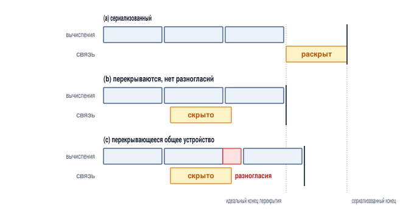
Когда программа управляет перекрытием нескольких потоков вручную, а не через проверенный обёрточный механизм, она должна также соблюдать два инварианта корректности. Готовность данных обеспечивается через wait_stream, чтобы ни один потребляющий поток не читал тензор до того, как породивший его поток закончит запись. Время жизни памяти обеспечивается через record_stream, чтобы кэширующий аллокатор не переиспользовал буфер памяти тензора, пока побочный поток ещё его читает. Поскольку запуски ядер с хоста асинхронны, Python-ссылка на тензор может выйти из области видимости на CPU раньше, чем побочный поток закончит использовать буфер на GPU, а аллокатор отслеживает живость буфера только в выделяющем потоке, если record_stream не зарегистрировал побочный поток. Оба инварианта должны быть проверены, прежде чем засчитывать более короткое время шага перекрытием коммуникации, а не гонкой данных, которая незаметно исказила или пропустила работу.
Наша реплика для обслуживания на 8 GPU, разделённый исключительно по оси model в пределах одного узла, иллюстрирует противоположный режим. При размере батча 1 каждая по-слойная коллективная операция AllReduce передаёт лишь около 32.8 KB между 8 GPU — на порядки меньше размера сообщения, необходимого, чтобы выйти из режима, ограниченного задержкой, описанного в Оценка коллективных операций по раундам и чанкам. В этом масштабе фиксированные накладные расходы на запуск коллективной операции и протокол (примерно 70× от самого времени передачи по сети) доминируют в обмене, поэтому более быстрая линия сократила бы лишь небольшую часть передачи. Перекрытие потоков тоже не может скрыть этот обмен, потому что следующий оператор слоя сразу же ожидает редуцированную активацию. Сократить это слагаемое можно, лишь уменьшив число обменов за счёт схемы разбиения или снизив накладные расходы на каждый запуск через проигрывание CUDA Graph. Как более крупные батчи декодирования меняют этот баланс, анализируется в Тензорный параллелизм.
9.7.3 Ядерно-уровневые рычаги
Даже когда межустройственная коммуникация хорошо скрыта, ускоритель может тратить значительную часть локального времени исполнения на запись короткоживущих промежуточных тензоров в HBM и их немедленное чтение обратно, на материализацию квадратичных матриц внимания (attention scores) или на простой между тысячами мелких ядер, отправляемых с хоста. Четыре приёма оптимизации на одном устройстве — слияние операторов, разбиение на тайлы, проигрывание графов и компиляция графов — восстанавливают эти локальные потери, не меняя математическую семантику модели. В законе парка все четыре приёма сжимают только слагаемое локального исполнения
↪ Слияние, разбиение на тайлы, проигрывание графов и компиляция собраны для справки в Средства на уровне ядра.
Слияние операторов объединяет цепочку последовательных операций в одно GPU-ядро, так что промежуточные активации остаются в регистрах или разделяемой памяти (SRAM) вместо обращения через HBM, а множество запусков ядер с хоста заменяется одним. Тем самым оно уменьшает и объём трафика памяти
Граничное сравнение на Рисунок 9 показывает, какие промежуточные пересылки способно устранить слияние.
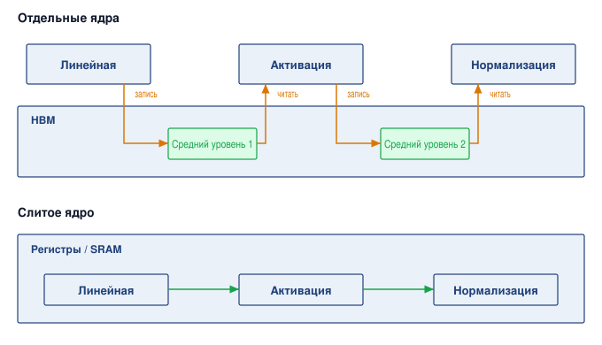
Профиль должен подтвердить, что промежуточные пересылки исчезли. Одно лишь меньшее число запусков ядер свидетельствует лишь об изменении диспетчеризации, но не о снижении трафика HBM.
Разбиение на тайлы (tiling) разделяет вычисление на блоки, размер которых умещается в SRAM на кристалле, так что каждый операнд, загруженный из HBM, переиспользуется во множестве арифметических операций до вытеснения. Применённое к self-attention (как во FlashAttention (Dao и др. 2022 г.)), разбиение на тайлы вычисляет внимание блок за блоком с онлайн-пересчётом softmax, избегая какой-либо материализации квадратной матрицы оценок «последовательность × последовательность» в HBM. Для одной головы внимания нашей модели 70B при длине последовательности 8,192 токенов идеализированная оценка трафика показывает, что устранение туда-обратных пересылок матриц оценок и вероятностей снижает трафик HBM примерно в 65× раз. Помимо сокращения
Рабочий набор на Рисунок 10 остаётся локальным, пока внимание потребляет очередные тайлы ключей/значений.
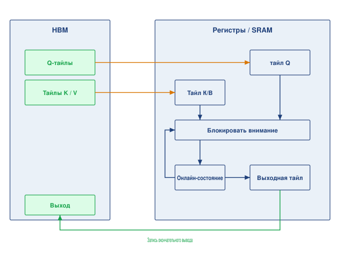
Экономия памяти достигается за счёт аллокации, которая никогда не пересекает границу HBM, а не за счёт пропуска пар внимания. Размер тайла должен оставлять место и для сохраняемого состояния, и для самих операндов.
Повтор проигрывания графа (graph replay) единожды фиксирует последовательность запусков GPU-ядер и воспроизводит весь подграф одним вызовом host API, сжимая долю диспетчеризации на хосте в
Компиляция графа трассирует область модели в промежуточный вычислительный граф, переписывает граф, сливает совместимые операторы, планирует переиспользование статических буферов и генерирует или автотюнит специализированные ядра для каждого слитого подграфа — автоматизируя слияние, планирование памяти и выбор ядер за один проход. Компиляция снижает
Числовая точность также действует на локальное исполнение, хотя, в отличие от четырёх предыдущих приёмов, она меняет арифметику модели. Эта книга разделяет её механику между двумя предметными главами: обучение с пониженной точностью (например FP8), которое поднимает потолок вычислений
Эти одноустройственные рычаги окупаются очень по-разному в наших двух сквозных рабочих нагрузках. В задаче обучения на 128 GPU крупные матричные умножения уже работают вблизи потолка вычислений H100, поэтому рычаги уровня ядер могут сжать лишь негеммовские (non-GEMM) ядра на участке ограничения пропускной способностью, не затрагивая главный программный проигрыш задачи — открытую межузловую коммуникацию. В реплике обслуживания на 8 GPU, напротив, программный проигрыш почти полностью локален (трафик потоковой передачи весов и диспетчеризация ядер на хосте), что позволяет слиянию операторов, квантизации весов и повтору CUDA Graph закрыть часть разрыва до «пола» пропускной способности, как показывает кейс-стади реплики в Одна реплика против целевого показателя латентности на токен.
9.7.4 Композиция программных исправлений
Одновременное применение нескольких оптимизаций ядер и коммуникации — или сложение их изолированных ускорений из микробенчмарков в таблице — почти всегда завышает выигрыш по парку, потому что ускорение ядер обратного вычисления сжимает окно исполнения, которое прежде скрывало передачу градиентов. Поэтому эффективная производственная инженерия следует дисциплинированному последовательному циклу, который начинается с задачи в целом, а не с отдельного ядра:
- Измерить goodput программы на сохраняемых шагах по договорённости об измерениях (Глава 9.3.1) и с помощью локализации фактора (Глава 9.3.2) подтвердить, что узкое место лежит в goodput программы, а не в goodput планирования или среды исполнения.
- Спуститься по иерархии профилирования (Глава 9.6.3), чтобы определить, какой член закона парка удерживает открытое время на критическом пути, и выбрать наименее затратный кандидат-рычаг, нацеленный на этот член (Таблица 7).
- Применить один рычаг, заново измерить сквозной шаг по точно той же договорённости и начать спуск заново по новой трассе — поскольку сжатие одного открытого члена регулярно открывает другой.
Для нашего примера обучения на 128 GPU построенный спуск выявил в качестве первичного узкого места открытую межузловую синхронизацию и ожидания коллективных операций по оси data. Когда время передачи обмена укладывается в окно обратного вычисления, первый эксперимент нацелен на перекрытие коммуникации — либо настройкой размеров градиентных «вёдер» и порядка запуска, либо шардированием состояния оптимизатора так, чтобы ReduceScatter перекрывался с обратным распространением, а AllGather упреждающе загружал параметры перед прямым проходом. Полная редукция градиента не укладывается. Даже при шардированном состоянии оптимизатора один лишь его ReduceScatter требует около 328 ms — дольше всего шага микробатча в 245 ms, — так что перекрытие не может скрыть его внутри шага. Рычаг для этой редукции — накопление градиента. Выполняемое один раз за шаг оптимизатора, после примерно 51 микробатчей (Глава 9.7.2), оно удерживает даже полностью открытую редукцию на уровне 5 percent от обновления, а накопление большего числа микробатчей дополнительно сжимает эту долю ценой большего глобального батча. Шардирование затем сокращает то, что должно перекрываться с финальным обратным проходом, а не делает редукцию укладывающейся. И только после повторного профилирования этого изменения второй эксперимент нацелен на оставшиеся потери уровня узлов (коллективы по оси model внутри узла и ограниченные памятью non-GEMM ядра) посредством мелкозернистого разложения «вычисления—коммуникация» и слияния операторов.
Изолированные ускорения не складываются линейно, потому что каждая оптимизация меняет критический путь шага. Рычаг сокращает один член закона парка, а сквозное время шага уменьшается лишь на открытую часть этого члена. Как только первый рычаг вступает в силу, доля каждого члена в шаге сдвигается, обесценивая изолированные оценки ускорения для последующих рычагов. На практике пары оптимизаций взаимодействуют тремя способами:
- Взаимоусиливающие комбинации. Слияние операторов и тайловое внимание освобождают память HBM под активации; реинвестирование этой памяти в более длинный микробатч удлиняет окно вычислений на шаг, что, в свою очередь, скрывает большую долю коллективной коммуникации.
- Избыточные комбинации. Включение графового компилятора, автоматически сливающего цепочки поэлементных операторов, не оставляет ничего для ручного слитого ядра на той же цепочке.
- Конфликтующие комбинации. Перекрывающиеся коммуникационные ядра NCCL отнимают SM и пропускную способность HBM у параллельных матричных умножений, удлиняя локальные вычисления. И наоборот, ускорение ядер обратного вычисления через FP8 или слияние сжимает окно вычислений, скрывавшее межузловые редукции градиентов, открывая коммуникацию, которая прежде скрывалась бесплатно.
Из-за этих взаимодействий оптимизацию, проверенную на одноузловом базлайне, всегда необходимо заново оценивать на полной конфигурации парка. Только сквозное измерение по Таблица 2 может установить, является ли комбинация рычагов усиливающей, избыточной или конфликтующей — и не пришёл ли рост goodput программы за счёт goodput планирования или среды исполнения (Глава 9.9).
Контрольная точка 9.3: Композиция программных исправлений
Программное исправление возвращает goodput только через открытый член, который оно сокращает, и только новое измерение показывает, что оно добавило.
Выбор рычага
Композиция и измерение
9.8 Весь парк
Задача Llama 2 70B удерживает 0.90 своего удержанного времени как сохраняемые шаги, исполняет эти шаги на 0.48 идеальной скорости и берёт узлы из пула, который держит 0.65 своей ёмкости в полных аллокациях. Каждая цифра точна на своей собственной границе, но ни одна в отдельности не говорит, какая доля ёмкости парка превращается в прогресс обучения и какой инженерный рычаг даёт наибольшую отдачу. Эти ответы возникают только из произведения Уравнение 1, которое также переводит долю ёмкости парка в удельную стоимость полезной работы.
9.8.1 Декомпозиция сквозного примера
Оцениваемая исключительно по своему runtime- и program-goodput внутри собственной аллокации, задача Llama 2 70B выглядит почти наполовину эффективной, однако общий пул, снабжающий её узлами, теряет ещё примерно треть своей ёмкости до того, как какая-либо задача получит полный «гэнг». Композиция всех трёх факторов для одной задачи на одном парке показывает, куда уходит весь разрыв эффективности по кластеру.
Инженерный расчёт 9.5: Куда уходит пропускная способность парка в сквозном примере
Задача: Задача Llama 2 70B удерживает 128 GPUs, взятых из общего пула. Какая доля удерживаемых задачей часов работы ускорителей превращается в прогресс с идеальной скоростью, какая доля пропускной способности, которую предлагает пул, превращается в прогресс, и на какой границе теряется остальное?
Переменные:
- Goodput планирования (scheduling goodput)
= 0.65 — значение пула из блокнота 9.2. - Goodput исполнения (runtime goodput)
= 0.90 — составлен из слагаемых пяти «владельцев» в блокноте 9.3. - Goodput программы
= 0.48 — по-микробатчевый MFU парка для удержанных шагов из блокнота 9.4; на полном шаге оптимизатора амортизированное редуцирование градиентов снижает его примерно до 0.456 (Глава 9.7.2).
Математика:
- Произведение задачи,
: 0.90 0.48 0.43. - Произведение пула,
: 0.65 0.43 0.28. - Доли потерь согласно Уравнение 2: планирование 1
0.65 = 0.35; исполнение 0.65 0.10 0.06; программа 0.59 0.52 0.31, где 0.59 — это . Вместе с 0.28, превратившимся в прогресс, четыре части в сумме дают единицу. - Калибровка: произведение Llama 3 405B, около 0.37 на её выделенном кластере (блокнот 9.1), превращается в 0.65
0.37 0.24 на этом пуле.
Результат: Задача превращает около 43 percent удерживаемых ею часов работы ускорителей в прогресс с идеальной скоростью, а пул превращает около 28 percent предлагаемой им пропускной способности в прогресс. Из этой предлагаемой пропускной способности 35 percent теряется до того, как её удержит какая-либо задача, 6 percent удерживается, не давая удержанного шага, а 31 percent тратится на удержанные шаги, идущие ниже идеальной скорости.
Системный вывод: Слой планирования умножает произведение каждой задачи на один и тот же 0.65, поэтому даже самый документированный крупный запуск из всех известных, перенесённый на этот пул, выдал бы лишь около четверти пропускной способности пула как прогресс. Никакая инженерия внутри задачи не вернёт потерю, происходящую до того, как задача удержит свои устройства.
Оба произведения имеют смысл (Таблица 8) и отвечают на разные вопросы. Произведение задачи (
Произведение пула опирается также на допущение, которое произведению задачи не требуется. Поскольку оно умножает goodput планирования пула на goodput исполнения и программы этой задачи, оно описывает пул, в котором каждая рабочая нагрузка ведёт себя как в сквозном примере. Выявленные в Глава 9.5.2 потери исполнения на уровне пула — зарезервированные блоки, которые не использует ни одна задача, и «зомби»-выделения — дополнительно снижают эффективный goodput исполнения пула, делая цифру пула верхней границей.
| Граница | Значение фактора | Доля пропускной способности парка, потерянная здесь | Llama 3 405B (цитируется) | Владелец рычага |
|---|---|---|---|---|
| Goodput планирования (иллюстративный) | 0.65 | 35% | 1 (выделенный) | Оркестрация парка |
| Goodput исполнения | 0.90 | 6% | не менее 0.90 | Отказоустойчивость, Хранение данных, Оркестрация парка |
| Goodput программы | 0.48 | 31% | около 0.41 | Глава 9.7 |
| Произведение задачи ( |
0.43 | около 0.37 | ||
| Произведение пула (MPG) | 0.28 | 28% полезная | около 0.24 на том же пуле | |
| Реплика обслуживания (отдельная строка) | Goodput исполнения от 0.996 (освобождение ежедневно) до около 0.91 (один час пиковой нагрузки); goodput программы как MBU относительно нижней границы 5.2 ms на токен | Не добавляется к обучению | Неприменимо | Обслуживание в масштабе |
Если читать её как карту того, куда ушла пропускная способность парка, Таблица 8 показывает, что две границы несут почти всю потерю. Пропускная способность, потерянная до выделения, и пропускная способность, потерянная внутри медленных шагов, каждая в несколько раз больше, чем пропускная способность, потерянная из-за запуска, ожидания ввода, контрольных точек, сбоев и вытеснений вместе взятых (Рисунок 11). Тем не менее именно эти прерывания исполнения операторы видят наиболее непосредственно — в журналах задач и предупреждениях о перезапуске.
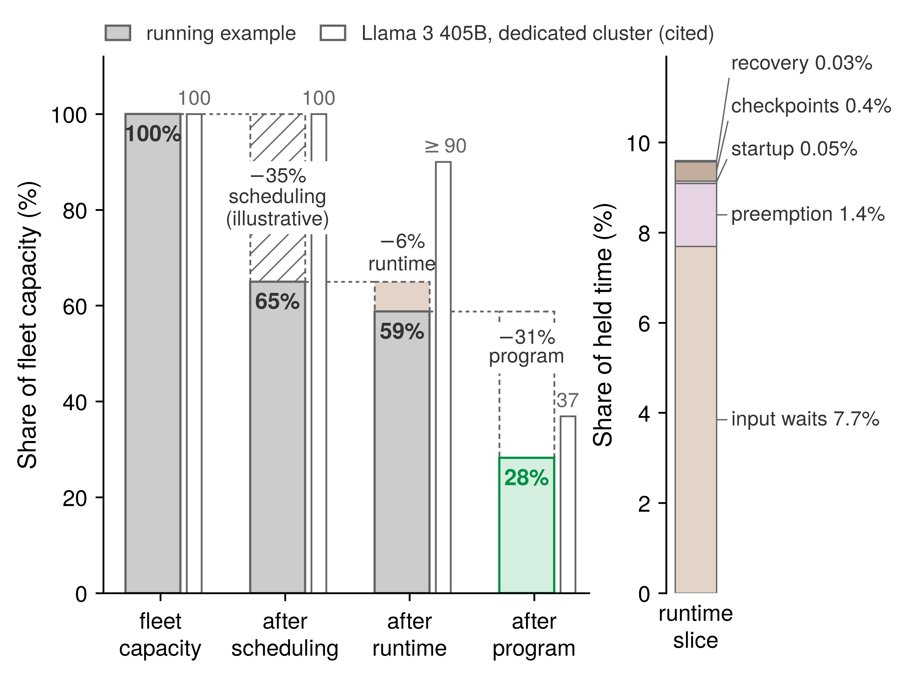
Сопоставление сквозного примера с колонкой Llama 3 405B показывает, как масштаб парка смещает баланс между факторами. Программный гудпут сквозного примера по построению превышает референсное значение Llama 3 — это отражает ожидание, что задача на 16 nodes exposes меньше коммуникации на шаг, чем прогон на 16,384 H100 GPUs. Его гудпут среды исполнения совпадает с референсом, хотя достигается он за счёт иного набора потерь, как анализируется в Глава 9.5.3.
Если ранжировать границы по доле ёмкости пула, теряемой на каждой из них, то на первом месте окажется планирование, на втором — программный гудпут, а гудпут среды исполнения — на далёком третьем. Однако доля потерь на границе — это не то, что возвращает рычаг инженерного воздействия, поскольку ёмкость, восстановленная на ранней границе, всё ещё должна пройти через последующие границы.
Вместо этого произведение даёт предельную ценность рычага напрямую. Один процентный пункт любого фактора стоит произведение двух других факторов, потому что повышение одного фактора на малое приращение увеличивает общее произведение на это приращение, умноженное на два оставшихся фактора. Для сквозного примера один пункт гудпута планирования стоит 0.43 пункта MPG, один пункт гудпута среды исполнения стоит 0.31, а один пункт программного гудпута стоит 0.59. Пункт программного гудпута стоит дороже всего, поскольку его множитель — произведение двух самых высоких факторов, а пункт гудпута среды исполнения — дешевле всего, потому что его множитель — произведение двух самых низких факторов. Следовательно, рычаг любого фактора ценнее в том парке, где два других фактора уже высоки.
Достижимый рычагом выигрыш также ограничен его собственным структурным потолком, и эти потолки подкрепляют ранжирование. Устранение всех удержаний с частичным гангом и заполнение каждой освободившейся машины поднимает гудпут планирования максимум до 0.80 (Глава 9.4.3). Ликвидация ожиданий входных данных — крупнейшего слагаемого среды исполнения из Глава 9.5.2 — поднимает гудпут среды исполнения до 0.98. Ликвидация всех потерь, добавляемых парком сверх базового уровня одиночной машины, — в основном открытой коммуникации (Глава 9.6.2) — поднимает программный гудпут до одноузлового базового уровня 0.65. Поскольку каждый рычаг умножает MPG на относительный прирост своего фактора,8 достижение этих потолков повышает MPG на 23 percent (до 0.35) для рычага планирования, на 9 percent (до 0.31) для входного конвейера и на 35 percent (до 0.38) для программного рычага. Для этой рабочей нагрузки программный рычаг даёт наибольший выигрыш, хотя планирование теряет большую долю общей ёмкости пула, а входной конвейер даёт наименьший из трёх выигрыш. Хотя эти потолки оптимистичны — ни одно перекрытие коммуникации не скрывает все открытые пересылки, и ни один упаковщик не заполняет каждую освободившуюся машину, — порядок приоритетов сохраняется, если только практическая досягаемость одной команды не окажется намного ниже остальных. И всё же это ранжирование — свойство факторов данной (здесь сконструированной) рабочей нагрузки, а не универсальный закон такого учёта: парк, обучающий модель иного архетипа, получит иной порядок приоритетов.
Опорный пример 9.2: Архетип B (масштабирование DLRM): где парк рекомендательных систем теряет полезную производительность
Модель рекомендаций хранит таблицы эмбеддингов, значительно превышающие память ускорителей, в DRAM хоста или на удалённых шардах (Уровень 1: DRAM хоста). Когда строки эмбеддингов, требуемые батчем, загружаются с упреждением перед шагом обучения, они относятся к входному пути; если этот путь не поспевает за темпом шагов, ускорители простаивают в ожидании своего батча. Правило ожидания входных данных из Глава 9.2.3 относит этот простой к гудпуту среды исполнения, а коэффициент простоев по данным из Уравнение конвейера данных оценивает его величину. Внутри удерживаемого шага собранные векторы эмбеддингов доставляются на целевые ранги через коллективную операцию AllToAll, время завершения которой определяется самым медленным получателем при перекосе шардов или перегрузке fabric (Обмены AllToAll в масштабе). Любая часть этого обмена, не скрытая плотными вычислениями, удлиняет удерживаемый шаг и относится на счёт программного гудпута. Поскольку шаг рекомендаций ограничен скорее объёмом перемещаемых байтов памяти и сети, чем плотной арифметикой, его программный гудпут должен определять идеальный знаменатель с той же тщательностью, что и реплика обслуживания, ограниченная пропускной способностью. Инженерные рычаги смещаются соответственно: гудпут среды исполнения растёт за счёт упреждающей загрузки и кэширования «горячих» строк, а программный гудпут — за счёт балансировки нагрузки шардов и объединения сообщений (Шардирование разреженных эмбеддингов). Предельная ценность одного пункта любого фактора остаётся произведением двух других факторов, но ранжирование рычагов нужно вычислять по собственным измеренным показателям парка рекомендаций.
9.8.2 Стоимость полезной единицы
Организация платит за ёмкость парка за каждый машино-час ускорителя независимо от того, удерживает ли полное выделение эту ёмкость, использует ли её удерживаемый шаг и работает ли этот шаг с идеальной скоростью. Поэтому каждый фактор разложения гудпута напрямую делит стоимость полезной работы. В частности, цена одного машино-часа ускорителя при идеальной скорости прогресса равна цене сырой ёмкости, делённой на MPG. При цене ёмкости за машино-час ускорителя
Эта зависимость превращает каждый фактор гудпута в обратный стоимостный множитель: потери на любой границе повышают цену каждой единицы полезного результата ровно пропорционально. Используя внутреннюю референсную ставку парка $2/GPU-hour из Экономика парка и утилизация как стоимость одного машино-часа ускорителя в обслуживании, деление на гудпут планирования начисляет потери планирования один раз — это согласуется со знаменателем «в обслуживании», определённым в Глава 9.4.1. По этому учёту пул сквозного примера платит примерно $7.09/GPU-hour за каждый машино-час ускорителя при идеальной скорости прогресса, или 3.5× цены сырой ёмкости. Поскольку любая единица полезного результата — обученный токен или обслуженный токен — требует фиксированного числа машино-часов ускорителя при идеальной скорости, её удельная стоимость несёт ровно тот же множитель. Уравнение стоимости спотовых инстансов (Уравнение (3)) — частный случай, где цена инстанса делится только на гудпут среды исполнения.
Политика возврата затрат (chargeback), выставляющая счёт каждой команде рабочей нагрузки только за машино-часы ускорителя, которые удерживают её задачи, начисляет сквозному примеру 2.3× сырой ставки за полезный машино-час ускорителя и оставляет потери планирования пула невключёнными в счёт. То, как организация распределяет эту нераспределённую стоимость пула, — вопрос политики отнесения затрат (Видимость и атрибуция затрат).
Повышение любого фактора гудпута пропорционально снижает стоимость каждой полезной единицы. Поднятие программного гудпута сквозного примера до его одноузлового потолка сократило бы стоимость полезной работы на 26 percent без покупки единого дополнительного ускорителя. Однако сам по себе стоимостный множитель не диктует, какое улучшение преследовать, потому что рычаги, повышающие один фактор, часто снижают другой; Глава 9.9 оценивает эти межграничные компромиссы с помощью полного произведения гудпута.
↪ Стоимость жизненного цикла владения, возврат затрат и утилизация как инвариант под выбором «строить или покупать» рассматриваются в Экономика парка и утилизация.
9.9 Компромиссы между факторами
Ожидание компактного размещения узлов, более длительная автотюнируемая компиляция перед первым шагом и более жёсткая политика вытеснения — каждое из этих действий повышает один фактор гудпута, перенося потери на другую границу. Оценка любого межграничного изменения только по тому фактору, ради которого оно делалось, игнорирует ёмкость, потерянную на границе, которая за него заплатила, поэтому изменение нужно судить по тому произведению гудпута, которое оно оставляет. Этот компромисс — проявление на уровне парка принципа перемещения накладных расходов (принцип «Вытеснение накладных расходов»), когда оптимизация лишь перераспределяет накладные расходы между вычислениями, коммуникацией и координацией, а не устраняет их вовсе. Поскольку каждый фактор умножает одно и то же произведение гудпута, а один пункт любого фактора стоит произведение двух других (Глава 9.8.1), потери, перенесённые на одну границу, можно взвешивать в общей валюте против выигрыша, который они покупают на другой.
9.9.1 Оценка компромисса по произведению
Когда команда компилятора включает проход автотюнинга, ускоряющий шаги в установившемся режиме, но добавляющий минуты к запуску, команда компилятора видит лишь более быструю трассу шагов, а команда надёжности — лишь более долгий запуск на таймлайне задачи. Решить, помог ли такой компромисс парку, требует объединить измерения обеих команд, не выстраивая общепарковый «водопад» заново. Изменение, затрагивающее более одной границы, умножает MPG (Уравнение 1) на произведение отношений «до/после» каждого фактора, причём каждое отношение измеряется на одной и той же границе и за одно и то же временное окно. Изменение улучшает эффективность парка только когда это произведение отношений больше единицы, независимо от того, какой отдельный фактор рычаг был призван поднять.
Выражение правила в отношениях позволяет отдельным инженерным командам оценивать компромисс по собственной телеметрии: команда надёжности измеряет, что политика перезапуска делает с гудпутом среды исполнения, команда компилятора — что автотюнированная сборка делает с программным гудпутом, а два относительных отношения просто перемножаются. Поскольку относительный прирост в 1 процент любого фактора даёт прирост в 1 процент общего произведения, малые изменения сводятся к сложению процентных приростов и вычитанию процентных потерь. Предельная ценность одного абсолютного процентного пункта, выведенная в Глава 9.8.1, — произведение двух других факторов — это то же самое правило, выраженное в процентных пунктах. Поэтому пункт, добавленный к самому низкому фактору, представляет наибольшее относительное изменение и несёт наибольшую предельную ценность.
Тем не менее отношение каждого фактора нужно перемерять после того же изменения, потому что рычаг, нацеленный на один фактор, механически сдвигает другие через их общие границы. Продуктивное время шага — одновременно знаменатель программного гудпута и числитель гудпута среды исполнения, а удерживаемое время выделения — одновременно знаменатель гудпута среды исполнения и числитель гудпута планирования. Сокращение времени по одну сторону границы, следовательно, меняет отношение по другую сторону. Исследование общепаркового гудпута измерило эту связанность на производственных кластерах, и Таблица 9 суммирует направленные эффекты (Wongpanich и др. 2025 г.).
Оптимизация компилятора, сокращающая исполнение на устройстве за шаг, повышает программный гудпут, но одновременно снижает гудпут среды исполнения, потому что задача теперь проводит меньше продуктивных машино-часов на устройстве относительно фиксированных длительностей запуска, контрольных точек и восстановления. Когда задача ограничена устройством, общее астрономическое время шага падает и прогон завершается раньше. Более раннее освобождение выделения сокращает удерживаемое время задачи, но зазор между освобождением одной задачи и полным гангом следующей вместе с ним не сжимается. Когда каждая задача удерживает свои устройства меньше времени, эти фиксированные зазоры занимают чуть большую долю календарного окна пула, поэтому гудпут планирования слегка проседает, даже когда общий MPG растёт. Ликвидация waste среды исполнения также завершает задачу раньше, повышая гудпут среды исполнения и слегка снижая гудпут планирования, и только сокращение удержаний с частичным гангом повышает гудпут планирования изолированно.
Когда задача ограничена хостом и темп задаёт входной конвейер, более быстрое исполнение на устройстве вовсе не сокращает астрономическое время шага. Каждая сэкономленная на устройстве миллисекунада становится дополнительной миллисекундой ожидания следующего входного батча, поэтому рост программного гудпута и падение гудпута среды исполнения взаимно гасятся и MPG не меняется. Следовательно, дашборд мониторинга, показывающий проседание одного фактора после оптимизации, не свидетельствует о регрессии, пока не оценено полное произведение.
| Lever | Program goodput | Runtime goodput | Scheduling goodput | MPG |
|---|---|---|---|---|
| Compiler shortens on-device step | Rises | Falls | Falls if device-bound; else no change | Rises if device-bound; else no change |
| Runtime removes idle or lost time | No change | Rises | Falls | Rises |
| Scheduler shortens partial holding | No change | No change | Rises | Rises |
Это правило произведения факторов сильно асимметрично, когда факторы стартуют с разных уровней. Программная оптимизация, поднявшая программный goodput рабочего примера с 0.48 до его одноузлового потолка 0.65, увеличила бы произведение на 35 percent. Следовательно, она дала бы чистый выигрыш, даже если бы пожертвовала до 26 percent runtime-goodput этой задачи (Рисунок). У рычага в части runtime нет сопоставимого запаса на траты: даже если устранить все потери runtime, runtime-goodput, равный 0.90, мог бы вырасти максимум на 11 percent. Поскольку фактор, уже близкий к единице, почти не располагает относительным запасом для размена, обмен runtime-goodput на программный goodput имеет широкий запас прочности, прежде чем понизит произведение — хотя его по-прежнему нужно измерять, — тогда как обмен в обратную сторону располагает малым запасом и заслуживает немедленного скептицизма.
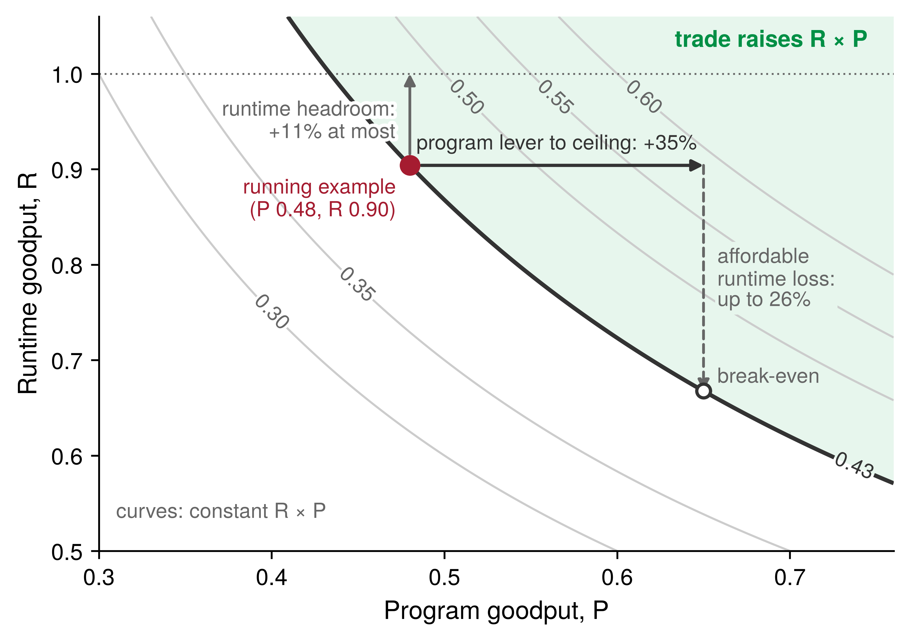
Два условия определяют, чьё произведение и какое окно измерения требуются правилу произведения. Во-первых, рычаг, ограниченный аллокацией одной задачи — например флаг компилятора или локальная стратегия контрольных точек, — измеряется по произведению самой этой задачи (
Само произведение goodput не измеряет время завершения по настенным часам: две конфигурации с в точности одинаковым произведением могут завершить задачу с разницей в несколько дней. Правило произведения оценивает эффективность использования ёмкости парка, тогда как Глава 9.9.4 вводит дополнительные размерности, по которым владелец задачи выбирает рабочую точку.
Решение об упругом масштабировании, проанализированное в Эластичные политики масштабирования, иллюстрирует этот размен через границы. Рассмотрим упругую задачу, отличную от рабочего примера, чей целевой батч рассчитан на 512 GPUs при трёх стратегиях. Первая немедленно стартует на 128 GPUs и остаётся при этом размере. Вторая ждёт 4 hours в очереди полной аллокации 512 GPUs. Последняя немедленно стартует на 128 GPUs и делает шаг вверх до 256 GPUs, когда освобождается ёмкость, оставляя остальные устройства задачам в очереди. Поскольку глобальный размер батча фиксирован во всех трёх стратегиях, каждая эпоха даёт одинаковый статистический прогресс. Программный goodput различает три варианта сильнее всего: эффективности масштабирования — 90 percent при 256 GPUs и 80 percent при 512 GPUs — в точности равны отношениям программного goodput каждой большей аллокации к goodput базовой линии 128 GPUs. Runtime-goodput различает их единственным непродуктивным интервалом: паузой 10-minute, необходимой для сохранения контрольных точек, перераспределения (reshard) и перезапуска во время перехода с шагом вверх (Глава 9.5.1). Стратегия с шагом вверх сохраняет своё преимущество по пропускной способности перед немедленным малым запуском, если только пауза пересборки не превышает примерно 9 hours.
Scheduling-goodput, относящийся к общему пулу, определяет, какая стратегия лучше всего служит кластеру. 256 GPUs, которые стратегия с шагом вверх оставляет в пуле, стоят столько, сколько очередь может из них извлечь. Если ожидающие задачи немедленно образуют полные аллокации на этих устройствах, MPG пула растёт. Если же устройства лежат в нераспределённых фрагментах, которые ни одна ожидающая gang-аллокация использовать не может, они становятся потерей по планированию, и отдача полной аллокации первой задаче была бы продуктивнее. Время завершения по настенным часам тянет в противоположную сторону: стратегия с шагом вверх движется почти со скоростью 1.7× от скорости немедленного малого запуска, но всё ещё отстаёт от полной аллокации примерно на 38 percent за окно. Следовательно, команда с жёстким дедлайном предпочтёт ждать полной аллокации, тогда как оператору парка с длинной очередью предпочтительнее упругий шаг вверх.
9.9.2 Компромиссы между границами уровней паркового стека
Эластичное изменение размера — один из примеров повторяющегося паттерна в масштабе всего парка: замена отстающего узла, вытеснение низкоприоритетной задачи, передача простаивающей квоты или асинхронное размещение контрольных точек в фоновой памяти — каждое из этих действий даёт выигрыш на одной границе полезной пропускной способности (goodput) ценой затрат на другой. В предыдущих главах этой книги механизмы оценивались в локальных единицах их собственных подсистем — минутах перезапуска, каскадных множителях или пропускной способности хранилища. Отображение этих результатов на три границы goodput позволяет определить, какой фактор поднимает каждый рычаг и какой он понижает, давая возможность сравнивать межуровневые компромиссы на одной шкале (Таблица 10).
| Компромисс | Поднимает | Понижает | Оценён в | Что решает |
|---|---|---|---|---|
| Замена отстающего узла (straggler) | Program goodput: шаги возвращаются к здоровому темпу | Runtime goodput: перезапуск, перезагрузка состояния и воспроизведение потерянных шагов; любое ожидание свободной мощности | Страгглеры против fail-stop-отказов | Как долго сохраняется замедление, против стоимости перезапуска и воспроизведения |
| Приоритетное вытеснение | Scheduling goodput: срочный gang формируется без отвода под него мощности | Runtime goodput каждой жертвы, умноженный на каскад | Стоимость вытеснения и каскады | Бюджет вытеснения и правило повторной постановки в очередь, против задержки допуска |
| Передача квоты | Scheduling goodput: неиспользованная гарантированная мощность становится полной квотой заёмщика | Runtime goodput заёмщика, когда владелец возвращает квоту | Пиковая ёмкость и заимствование квот | Насколько быстро заёмщик может сделать контрольную точку или ужаться |
| Ожидание размещения | Program goodput: коллективы остаются на самых быстрых связях | Scheduling goodput, пока мощность удерживается свободной для сборки размещения; в противном случае — только время до результата | Алгоритмы размещения | Сквозное время завершения, включая ожидание |
| Эластичное изменение размера | Program goodput: меньшая квота работает с более высокой эффективностью масштабирования; scheduling goodput, когда освобождённые устройства формируют квоты других задач | Runtime goodput: каждая пауза на пересборку; собственное время задачи до результата | Эластичные политики масштабирования; Глава 9.9.1 | Очередь пула и фрагментация на момент изменения размера |
| Асинхронное размещение контрольных точек | Runtime goodput: нет синхронной паузы на каждое сохранение | Program goodput: фоновые записи конкурируют с шагами; снова runtime goodput, если сбой случится до того, как новое поколение станет долговечным | Синхронная и асинхронная запись контрольных точек; Синхронное и асинхронное контрольное точирование | В этой книге не оценён; измеренное время шага при записи в полёте |
| Сборка компиляции | Program goodput: более быстрые скомпилированные шаги | Runtime goodput: время сборки при каждом запуске с компиляцией | Глава 9.9.3 | Число исполнений, переиспользующих артефакт |
| Частота контрольных точек (внутри одного фактора) | Runtime goodput: меньше переделки на каждое прерывание | Runtime goodput: более частые паузы | Уравнение (8); Интервал контрольных точек Юнга—Дейли; Глава 9.5.2 | Частота прерываний, включая вытеснения |
Через Таблица 10 проходят три структурных паттерна. Во-первых, любой рычаг, передающий мощность между задачами — например приоритетное вытеснение или передача квоты, — должен оцениваться на уровне пула, потому что его выигрыш достаётся одной задаче, а стоимость — другой. Бюджет вытеснения у оркестратора задаёт скорость, с которой одно обменивается на другое. Во-вторых, ожидание в очереди стоит scheduling goodput только тогда, когда мощность удерживается простаивающей для сборки целевой квоты. Если тем временем на этих устройствах работают другие задачи, ожидание стоит лишь календарного времени до результата — вот почему ожидания размещения и эластичное изменение размера зависят от состояния очереди пула, а не только от самой задачи. В-третьих, эластичное изменение размера меняет сетку устройств, вынуждая программу, разбитую компилятором, перекомпилироваться под новую топологию (Глава 9.7.1) и добавляя это время сборки к паузе пересборки.
Асинхронное размещение контрольных точек — единственный компромисс в таблице, чья стоимость в program goodput должна измеряться эмпирически на целевой системе. Размещение копирует снимок состояния в память хоста или локальный flash и в фоне выгружает его на долговременное хранилище, пока обучение продолжается (Синхронное и асинхронное контрольное точирование), устраняя большую часть синхронной паузы, учитываемой членом контрольных точек из Уравнение 4. Однако фоновая выгрузка всё равно конкурирует с активными обучающими шагами за закреплённую память хоста, передачи PCIe, сетевые каналы и пропускную способность хранилища, так что её накладные расходы проявляются как немного более длинные сохраняемые шаги — потеря program goodput. Размещение также отодвигает точку долговечности: пока каждый шард не достиг постоянного хранилища, сбой откатывает задачу к предыдущему поколению контрольных точек, увеличивая объём переделки, если неисправность произойдёт во время выгрузки. Повышает ли асинхронное размещение общий продукт, следовательно, зависит от двух измерений в рамках контракта: длительности сохраняемого шага с фоновой выгрузкой в полёте и без неё, а также времени, необходимого для фиксации поколения контрольной точки.
Напротив, частота контрольных точек обменивает две потери внутри одного фактора — время на запись контрольных точек против шагов, потерянных при прерывании, — поэтому интервал Янга–Дейли (Уравнение (7)) минимизирует полные потери runtime, а не балансирует два отдельных фактора goodput. Он связан со строками оркестрации через общую частоту прерываний — поэтому учёт бюджетированных вытеснений сократил оптимальный интервал контрольных точек в сквозном примере в Глава 9.5.2. Мягкое (graceful) вытеснение, которое сохраняет состояние по уведомлению о вытеснении, а не отбрасывает шаги с момента последней периодической контрольной точки, аналогично обменивает переделку против синхронного сохранения внутри runtime goodput.
9.9.3 Сборки компиляции
Автотюнинговый компилятор, который ищет многие минуты до первого шага, сокращает каждый последующий шаг за счёт слияния операций, планирования раскладок памяти и выбора более быстрых ядер, но ускорители простаивают выделенными, не сохранив ни одного шага, пока идёт поиск. Компиляция — это межфакторный компромисс, принадлежащий непосредственно инженерии производительности, потому что оба её эффекта приходятся на собственную квоту задачи. Более быстрые скомпилированные шаги поднимают program goodput (Глава 9.7.3), тогда как сборка и прогрев, им предшествующие, — это удерживаемое время без сохранённого прогресса, считающееся запуском и понижающее runtime goodput (Глава 9.5.1). Сборка компиляции окупается, когда суммарное время, сэкономленное на всех исполнениях, переиспользующих скомпилированный артефакт, превышает само время сборки; точка безубыточности зависит, следовательно, от числа исполнений, разделяющих артефакт, а не только от календарной длительности развёртывания.
Пограничное правило определяет, где списывается перекомпиляция. Сборка, выполняемая при запуске задачи, после перезапуска при сбое или после эластичного изменения размера на новую сетку, происходит один раз за запуск и списывается на runtime goodput вместе с остальным запуском. Напротив, перекомпиляция, многократно срабатывающая во время устойчивого исполнения — из-за варьирования входных форм или постоянного разрыва захваченного графа, — повторяется внутри свободного от сбоев цикла шагов задачи и понижает program goodput. Распределение динамических форм, вынуждающее перекомпиляцию каждые несколько сотен шагов, проявляется, следовательно, как медленные сохраняемые шаги, а не как накладные расходы запуска, и его лечение — стратегия полиморфной по формам компиляции, а не более быстрая сборка компилятора.
Инженерный расчёт 9.6: Когда сборка компиляции окупает себя
Задача: Модель на 13 млрд параметров достаточно мала, чтобы один H100 вместил её, так что один ускоритель образует полную реплику, обслуживающую веса INT4. Эта реплика декодирует со скоростью 120 tokens/s без компиляции, а автотюнинговая компиляция её графа занимает около 15 min. Сколько сгенерированных токенов окупают эту сборку на одной реплике и как меняется ответ, когда 128 replicas разделяют один скомпилированный артефакт, по сравнению с тем, что каждая реплика собирает свой?
Переменные:
- Нескомпилированный шаг занимает 8.33 ms на токен, из которых матричные умножения составляют 0.50, поэлементные ядра — 0.35, а видимые накладные расходы запуска — 0.15.
- Компиляция оставляет матричные умножения неизменными, убирает 70 percent поэлементного времени за счёт слияния и убирает 80 percent накладных расходов запуска.
- Сборка в режиме по умолчанию занимает около 1 min; автотюнинговый поиск — около 15 min.
Расчёт:
- Скомпилированный шаг: 0.50 + 0.35
0.30 + 0.15 0.20 = 0.635 от нескомпилированного шага, около 5.3 ms на токен, ускорение 1.58×, экономящее около 3.0 ms на токен. - Одна реплика: 15 min
3.0 ms 300,000 токенов, около 26 min однопоточной генерации. Сборка по умолчанию потребовала бы лишь около 20,000 токенов, если бы дала ту же экономию. - Общий артефакт: 26 min
128 replicas 12 seconds генерации пула. - Сборки на каждой реплике: 128 replicas
15 min 32 GPU-hours на один выкат, около 25 percent удерживаемого времени реплики, добавленной на один час пика.
Системный вывод: Сборка компиляции амортизируется по исполнениям, а не по прошедшему времени, поэтому один и тот же автотюнинговый поиск, который пул окупает за секунды, когда его артефакт общий, потребляет четверть удерживаемого времени недолговечной реплики, когда каждая реплика повторяет его независимо.
Сохранённый артефакт компиляции — или кэш автотюнинга, который его породил, — собирается один раз для каждой комбинации версии модели, диапазона форм и типа ускорителя, и его экономия времени шага накапливается на каждой реплике, которая его загружает. Напротив, сборка на каждой реплике накладывает потерю runtime на каждую реплику, масштабируемую относительно времени жизни реплики так же, как загрузка весов и прогрев, разобранные в Глава 9.5.3. Поскольку реплики, добавленные под всплеск трафика, имеют самые короткие времена жизни, сборка на каждой реплике делает ту самую мощность, которую парк добавляет в спешке, одновременно медленнее вводимой в строй и менее продуктивной во время работы.
Обучающие задачи сталкиваются с тем же компромиссом между перезапусками, а не между обслуживающими репликами. Если скомпилированные артефакты не кэшируются постоянно, обучающая задача перекомпилируется после каждого перезапуска при сбое, каждого вытеснения и каждого эластичного изменения размера на новую сетку, встраивая накладные расходы компиляции сразу в три члена Уравнение 4: первоначальный запуск, прогрев восстановления после сбоя и прогрев после вытеснения. Если для недельного предобучения запуск пренебрежимо мал, то для часовых задач он составляет существенную долю удерживаемого времени (Глава 9.5.2) — а производственные парки запускают большое число коротких задач, включая оценки, отладочные запуски и переборы гиперпараметров. Постоянный кэш компиляции9, общий для всех запусков, превращает повторяющуюся потерю runtime на каждый запуск в единственную сборку на ревизию программы. Поскольку ключом кэша являются ревизия модели, входные формы, сетка устройств, модель ускорителя и версия компилятора, обновление компилятора или оборудования делает кэшированные артефакты недействительными и оплачивает каждую сборку заново — стоимость, которую ловят проверки регрессии запуска из Таблица 4.
Производственные компиляционные стеки различаются стоимостью сборки, разнообразием форм, которые терпит скомпилированный артефакт, и тем, насколько широко артефакты можно переиспользовать между запусками (Таблица 11). Более глубокая аппаратная специализация окупается лишь тогда, когда ревизия модели и распределение её форм остаются стабильными достаточно долго, чтобы множество исполнений окупило одну сборку.
| Путь компиляции | Стоимость сборки | Гибкость по формам | Глубина специализации | Кем переиспользуется между задачами | Типичное применение |
|---|---|---|---|---|---|
torch.compile (по умолчанию) |
Секунды до минут | Высокая; разрывы графа и перекомпиляция на новых формах | Поэлементное слияние, планирование памяти | Кэш, ключуемый по графу, формам и версиям ПО | Разработка и меняющиеся модели |
torch.compile (autotune) |
Минуты до десятков минут | Умеренная; настройка на корзину форм | Автонастраиваемые тайлы и конфигурации запуска | Сохранённые результаты настройки на корзину форм и ускоритель | Стабильные формы с долгим повторением |
| XLA (JAX) | Минуты на сигнатуру формы | Низкая; новые формы или типы данных респециализируются | Слияние целых регионов, раскладка и шардирование | Кэш, ключуемый по программе, сигнатуре формы и сетке устройств | Обучение на статических графах и обслуживание на TPU |
| Движок TensorRT | Десятки минут для большой модели | Низкая; только объявленные профили форм | Поиск тактик на уровне ядер, калиброванная точность | Сериализованный движок на профиль форм, модель ускорителя и версию библиотеки | Стабильный высоконагруженный инференс |
Разрывы графа и специализация по формам выражают тот же компромисс на более мелкой гранулярности. Разрыв графа — ситуация, когда динамический поток управления или неподдерживаемые операции на хосте не позволяют компилятору трассировать единый граф, — разделяет области, в пределах которых компилятор может сливать ядра и планировать память, и может вызвать перекомпиляцию при изменении окружающих путей кода. Аналогично специализация на узком профиле форм даёт более быстрые ядра, но вызывает пересборку при появлении новой формы, тогда как символьные размерности принимают переменные размеры батча и длины последовательностей без пересборки. Согласно граничному правилу, плохо подобранная стратегия специализации проявляется либо в медленных удерживаемых шагах (когда узко специализированный артефакт раз за разом перекомпилируется в установившемся режиме), либо в завышенных накладных расходах на запуск (когда дорогостоящий поиск автонастройки выполняется заново при каждом запуске).
9.9.4 Граница эффективности
Для эластичной задачи из Глава 9.9.1 удержание задачи на 128 GPU вместо 512 даёт более высокую удельную программную goodput, тогда как расширение до 512 GPU снижает программную goodput, но завершает прогон за долю астрономического времени. Поскольку владельца рабочей нагрузки интересует, когда результат будет готов и сколько он стоит, а не только насколько эффективно работает кластер, кросс-факторный обмен, повышающий произведение goodput, — всё ещё лишь часть операционного решения. Более широкая инженерная цель — выбрать положение на границе эффективности: парето-оптимальном подмножестве допустимых конфигураций для данной рабочей нагрузки и бюджета ресурсов, на котором ни одно измеренное измерение нельзя улучшить, не ухудшив другое. Поскольку законы масштабирования обеспечивают быстрый рост объёма вычислений, требуемого для повышения качества моделей (Thompson и др. 2021 г.), эффективность парка определяет, какая доля закупленных вычислений превращается в полезный прогресс, делая целевое качество достижимым раньше или дешевле.
↩︎ Степенная зависимость между вычислениями и качеством модели, определяющая рост парка, установлена в Законы масштабирования ИИ.
Три измеренных измерения задают границу эффективности обучающего парка. Первое — goodput пула, то есть MPG пула, или произведение задачи
Планировочная goodput не появляется явно в знаменателе Уравнение 7, потому что незанятая ёмкость в других местах пула не замедляет задачу, уже удерживающую свой gang. Конкуренция в пуле входит во время завершения задачи только через начальное ожидание в очереди
В однородном парке с единой ценой ёмкости goodput и стоимость полезной единицы взаимно обратны, что сводит границу эффективности к двумерному компромиссу между goodput и временем до результата. Эти два измерения разделяются, когда ценовые уровни ёмкости различаются. Вытесняемая спотовая ёмкость дешевле зарезервированной, но чаще прерывается, что снижает runtime goodput наряду с почасовой ценой; уравнение спотовой стоимости (Уравнение (3)) определяет, перевешивает ли ценовая скидка переделку из-за прерываний. При эластичных параметрах масштабирования из Эластичные политики масштабирования и профиле спотовых прерываний из Заблуждения и ловушки ценовая скидка более чем компенсирует прерывания, помещая спотовые конфигурации во все точки границы «стоимость–время», кроме единственной самой быстрой точки времени завершения (Рисунок). Выбор между зарезервированными и on-demand-инстансами, удержание более старых поколений ускорителей по сниженному внутреннему тарифу chargeback или введение второго семейства ускорителей ставят ровно тот же компромисс, и каждый вариант нужно оценивать по стоимости полезной единицы, а не по сырой цене за ускоритель-час.
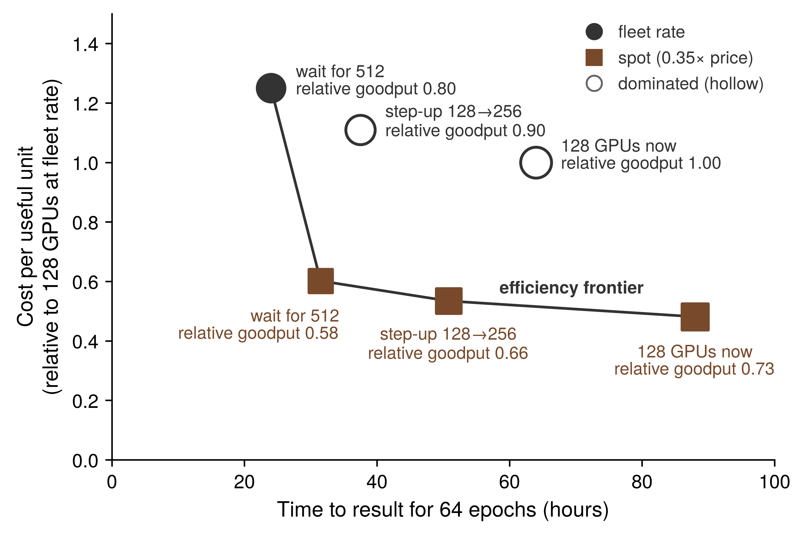
Качество модели и память устройства ограничивают множество допустимых конфигураций, а не упорядочивают точки внутри него (Таблица 12). Конфигурация, которая работает быстрее за счёт снижения числовой точности, увеличения глобального батча или ослабления синхронизации градиентов, допустима только в том случае, если она по-прежнему достигает целевого уровня качества, заданного измерительным контрактом, — именно поэтому время до результата всегда измеряется относительно фиксированного критерия качества (Глава 9.10). Аналогично, схема параллелизма, размер микробатча или длина последовательности, не помещающиеся в память устройства, вообще не лежат на достижимой границе эффективности. Механизмы, позволяющие уложиться в память, — например, пересчёт активаций или более мелкое шардирование состояния модели — покупают допустимость ценой программного гудпута.
| Измерение | Как измеряется | Что ограничивает | Типичное противоречие |
|---|---|---|---|
| Goodput | MPG пула или время исполнения, умноженное на программный гудпут задачи, в рамках измерительного контракта | Какая доля оплаченной ёмкости превращается в прогресс с идеальной скоростью | Рычаг, повышающий один сомножитель, часто понижает другой (Таблица 10) |
| Cost per useful unit | Цена ёмкости, делённая на гудпут (Уравнение 6) | Сколько стоит каждая единица прогресса | Более дешёвая ёмкость — например, вытесняемая или устаревшие ускорители — часто имеет меньшее время исполнения или программный гудпут |
| Time to result | Ожидание в очереди плюс удерживаемое время до целевого уровня качества (Уравнение 7) | Когда результат задачи становится доступен | Больше устройств сокращает удерживаемое время, но понижает программный гудпут и может увеличить ожидание в очереди |
| Quality | Точность или функция потерь на целевом уровне, по критерию качества контракта | Какой результат считается полезной работой | Пониженная точность, крупные батчи и ослабленная синхронизация требуют проверки качества, прежде чем их скорость можно засчитать |
| Memory | Пиковая память устройства на ранг | Какие схемы размещения, размеры батчей и длины последовательностей допустимы | Пересчёт и более мелкое шардирование делают конфигурацию допустимой ценой программного гудпута |
| Latency under load (serving) | Задержка запросов при заданной предлагаемой нагрузке | Выполняет ли реплика свою целевую задачу по уровню обслуживания | Развивается в Обслуживание в масштабе; входит в этот учёт как запас, списываемый с программного гудпута |
Поскольку разные заинтересованные стороны ценят разные точки одной и той же границы, инженерное предложение до его оценки должно указывать, какое измерение границы оно целит. Флагманский запуск обучения, столкнувшись с жёстким сроком релиза, соглашается на более высокую стоимость единицы полезной работы ради сокращения времени до результата, удерживая больший аллокацион и ожидая компактного размещения. Исследовательский перебор из сотен коротких задач оптимизирует стоимость единицы полезной работы, предпочитая меньшие аллокации, вытесняемую spot-ёмкость и общий кэш компиляции. Команда кластерной инфраструктуры оптимизирует общий MPG пула и поддерживает политики, повышающие парковое произведение, даже если они удлиняют отдельные задачи. Правило произведения определяет, приближает ли изменение систему к границе эффективности, а операционный приоритет заинтересованной стороны определяет, где на этой границе работать.
Любое перемещение вдоль границы проверяется той же дисциплиной, что и одношаговая оптимизация. Инженеры измеряют каждый затронутый фактор гудпута до и после изменения в рамках измерительного контракта, на окне наблюдения, охватывающем как разовые затраты на настройку, так и регулярные выигрыши на каждом шаге. Они сообщают изменение времени до результата вместе с отношением произведения факторов гудпута.
Контрольная точка 9.4: Компромиссы между факторами
Рычаг, повышающий один фактор гудпута и понижающий другой, оценивается по произведению отношений факторов, а граница эффективности сопоставляет результат со стоимостью и временем до результата.
Оценка компромисса
Компиляция и граница эффективности
9.10 Заблуждения и ловушки
Организация может сообщать о парковом MFU выше лучших опубликованных флагманских запусков, в то время как её общий кластер превращает в обучающий прогресс немногим более четверти предлагаемой ёмкости. Каждое из приведённых ниже заблуждений принимает один фактор, одно окно наблюдения или одно ядро за всю историю эффективности; соответствующая граница гудпута показывает, что оставляет за скобками такой узкий взгляд.
Заблуждение: Задача с высоким MFU хорошо использует парк.
MFU измеряет программный гудпут и ничего больше. Поскольку он делит только на время, проведённое внутри удерживаемых шагов, он слеп к ёмкости, которую задача никогда не удерживала, и к удерживаемому времени, не давшему удержанного прогресса. В нашем сквозном примере удерживаемые шаги исполняются с программным гудпутом 0.48 — выше 0.41, сообщённого для предобучения Llama 3 405B, — однако планировочный гудпут пула 0.65 и гудпут исполнения задачи 0.90 оставляют MPG на уровне пула лишь 0.28. Только полное произведение Уравнение 1, разложенное в Глава 9.8.1, показывает, какая доля ёмкости парка превращается в полезную работу.
Заблуждение: Парк с высокой ёмкостью, занятостью и рабочим циклом продуктивен.
Три традиционных метрики кластера учитывают, доступны ли ускорители, распределены ли они или электрически активны, но ни одна из них не учитывает полезный прогресс модели. Доступность считает свободные ускорители безотносительно сетевой топологии, поэтому распределённая задача, требующая непрерывной сетки, может простаивать в очереди рядом с большим, но фрагментированным пулом. Занятость считает ускорители, назначенные задачам, поэтому устройство, простаивающее на входных данных, исполняющее неоптимизированные ядра или повторяющее шаги, потерянные из-за вытеснения, всё ещё числится полностью занятым. Рабочий цикл (duty cycle) учитывает лишь то, активны ли исполнительные движки устройства, но не то, какая доля пиковой пропускной способности достигается и продвигают ли его операции модель. Система паркового гудпута заменяет все три метрики факторами гудпута именно потому, что каждый фактор отслеживает ёмкость-время через следующую границу полезного прогресса, а не останавливается, как только железо выглядит занятым (Wongpanich и др. 2025 г.).
Ловушка: Списывать каждую потерю на команду, которая её исправит.
Распределение потерь по инженерным командам направляет каждую проблему тому, кто может на неё повлиять, но, сделанное внутри факторов гудпута, оно ломает тождество, позволяющее этим факторам перемножаться. Поскольку ускорители «зомби-задачи» уже учтены как удерживаемые в числителе планирования, списание зомби-времени на планировочный гудпут — в расчёте на то, что механизм аренды оркестратора его вычистит, — дважды вычитает одни и те же потерянные часы. Аналогично, отнесение медленного отстающего узла к надёжности делает замедление невидимым для программного гудпута, хотя каждый синхронный шаг идёт в темпе самого медленного ранга. Чтобы сохранить мультипликативный учёт, граница, на которой потеряно время, определяет, какой фактор записывает потерю, а первопричина — какая инженерная команда владеет исправлением (Глава 9.2.3); полная таблица атрибуции поэтому несёт оба столбца рядом (Таблица 5).
Заблуждение: Одного запуска профилирования достаточно, чтобы охарактеризовать гудпут задачи.
Один короткий запуск может охарактеризовать максимум один фактор, потому что три фактора гудпута теряют время на масштабах, различающихся на порядки. Программный гудпут теряет время внутри каждого шага, поэтому окно из нескольких сотен прогретых установившихся шагов оценивает его надёжно. Гудпут исполнения, напротив, теряет время в редких дорогих прерываниях: на 128 GPUs в сквозном примере аппаратный сбой случается примерно раз в 13 days, то есть однодневный профиль обычно не захватывает ни сбоя, ни восстановления. Планировочный гудпут меняется вместе с общекластерным спросом, который наполняет очереди в часы пик и опустошает их ночью. Поэтому измерительный контракт (Глава 9.3.1) задаёт как фактор, так и требуемое окно наблюдения, а парковая выборка (Глава 9.3.3) раскладывает короткие программные трассы по этому более длинному окну.
Ловушка: Вычитание одного бюджета накладных расходов, смешивающего факторы.
Планировочная таблица, резервирующая по несколько процентов на пузыри конвейера, контрольные точки, восстановление после сбоев, задержку планирования и вытеснение — а затем вычитающая их сумму из одного операционного отношения, — смешивает все три фактора гудпута. Пузыри конвейера происходят внутри удерживаемых шагов и принадлежат программному гудпуту; задержка планирования предшествует gang-аллокации и принадлежит планировочному гудпуту; лишь контрольные точки, восстановление после сбоев и вытеснение принадлежат гудпуту исполнения. Умножение остатка такого смешанного бюджета на измеренный парковый MFU дважды учитывает пузыри конвейера и вносит планировочные потери в фактор, не имеющий планировочного члена. Корректный бюджет ёмкости сначала относит каждую потерю к своей границе и суммирует только члены одного фактора (Глава 9.5.2).
Заблуждение: Больше FLOP/s означает пропорционально более быстрый шаг.
Повышение пиковой арифметической пропускной способности сокращает лишь вычислительно-ограниченную часть железного закона и лишь там, где это вычисление открыто на критическом пути. Шаг декодирования с батчем единица на реплике обслуживания использует примерно 0.3 percent своего арифметического пика FP16; удвоение пиковых FLOP/s при той же пропускной способности HBM не трогает нижнюю границу задержки 5.2 ms и лишь ополовинивает её численный MFU. Аналогично, сквозной обучающий пример тратит 65 ms из каждого 245 ms иллюстративного паркового шага сверх одноузлового базового уровня — в том, что пример считает межузловой синхронизацией и ожиданиями коллективных операций, которые более быстрая арифметика не ускоряет, — а переход на числовой формат меньшей точности упирается ровно в тот же предел Амдала (Глава 9.7.3). Оценка шага по модели «крыши» и членам закона парка (Глава 9.6.3) предсказывает, какое ускорение фактически даст более быстрый ускоритель.
Ловушка: Судить о задаче по среднему времени шага, игнорируя распределение времён шагов.
Здоровое среднее время шага может маскировать тяжёлые хвостовые эпизоды. Поскольку синхронный распределённый шаг завершается только когда самый медленный ранг закончил, единственное устройство с периодическими замедлениями — из-за троттлинга от нагрева, повторов при ошибках бита в линии или пауз хостовой ОС — задерживает всю свою коллективную группу при каждом эпизоде. Усреднение по тысячам шагов размазывает эти простои в видимость слабого равномерного замедления. Перцентили времён шагов по рангам вскрывают эти эпизоды как хвостовые выбросы и запускают адресные трассы, сравнивающие медленный ранг со здоровым соседом (Глава 9.3.3), а регрессионная проверка серых отказов из Таблица 4 мониторит то же хвостовое отношение по всему парку. Каждый такой хвостовой простой понижает программный гудпут независимо от того, какая командная подсистема в итоге заменит деградировавший узел.
Заблуждение: Крупнейшее ядро — то место, где теряется программный гудпут.
Крупнейшие ядра в шаге трансформера — как правило, плотные матричные умножения, и в хорошо настроенной реализации они уже исполняются у арифметического потолка ускорителя. Ядра нормализации, активаций, softmax и оптимизатора лежат на склоне пропускной способности памяти и выполняют крошечную долю арифметики, но вместе могут съедать заметную долю времени шага на устройстве. В масштабе парка открытые межузловые коллективные операции, не видимые в ранжировании ядер одного GPU, могут перевесить их все. Действительно, построенный drill-down для сквозного примера (Глава 9.6.3) помещает его крупнейшую программную потерю в открытую межузловую синхронизацию и ожидания коллективных операций. Разбиение времени шага на матричные умножения и всё остальное, а остатка — на сопоставление с Таблица 7, определяет, какой член закона парка держит восстанавливаемую потерю, до того как настраивать какое-либо отдельное ядро.
Ловушка: Считать успешную компиляцию доказательством, что программа хорошо оптимизирована.
Компилятор применяет только те преобразования, которые реализуют его проходы в рамках внутреннего стоимостной модели, и завершённая сборка не гарантирует, что эти проходы сработали. Распространение автоматического шардирования вставляет коллективную операцию перешардирования везде, где конфликтуют два выведенных расположения тензоров, позволяя незапланированному AllGather появиться внутри каждого слоя трансформера (Глава 9.7.1). Аналогично, распределение динамических форм, вызывающее перекомпиляцию каждые несколько сотен шагов, проявляется как медленные удерживаемые шаги — понижая программный гудпут, — а не как разовая стартовая стоимость (Глава 9.9.3). Поэтому скомпилированный шаг следует считать проверяемой гипотезой: сверить число коллективных операций в трассе профилировщика с задуманным расположением и измерить программный гудпут до и после в рамках измерительного контракта.
Заблуждение: Сначала исправить крупнейшую потерю — вернуть больше всего полезной работы.
Доли потерь из Уравнение 2 описывают, куда ушла ёмкость парка в прошлом, а не сколько полезной работы вернёт инженерный рычаг в будущем. В сквозном примере планирование теряет 35 percent ёмкости парка, а исполнение программы — 31 percent, однако гипотетически идеальный планировщик преобразовал бы в дополнительный полезный прогресс лишь около 15 percent ёмкости парка. Ёмкость, восстановленная на планировочной границе, должна ещё пройти границы исполнения и программы с их текущими коэффициентами. На потолках подсистем планировочный рычаг поднимает MPG с 0.28 до 0.35, тогда как программный рычаг — до 0.38. Инженерным приоритетом управляет предельная ценность одного пункта каждого фактора — произведение двух других факторов — и достижимый потолок каждого рычага (Глава 9.8.1), а не сырой размер исторического среза потерь.
Ловушка: Считать удержанные шаги полезной работой, не проверяя качество.
MPG учитывает удержанные шаги по идеальной скорости в предположении, что каждый шаг продвигает качество модели так же, как до оптимизации. Изменение, ускоряющее шаги за счёт снижения числовой точности, увеличения глобального размера батча или ослабления синхронизации, может поднять программный goodput, но потребовать больше шагов для достижения целевой функции потерь — парк будет сообщать более высокий goodput, хотя обученная модель будет готова позже. И контроль качества в контракте измерений (Глава 9.3.1), и метрика времени до целевого качества на границе эффективности (Глава 9.9.4) улавливают такую деградацию, а статистический goodput (Глава 9.2.4) количественно измеряет её. Ускорение пропускной способности считается полезной работой только после прохождения контроля качества.
Каждая из этих ловушек измеряет одну границу в изоляции и принимает её за всю систему. Возвращение каждой диагностики и каждого компромисса к полному мультипликативному учёту не позволяет локальным оптимизациям маскировать потери на уровне парка.
9.11 Итоги
Парк машинного обучения может быть полностью распределён и электрически загружен, при этом большая часть его ёмкости никогда не превращается в полезный прогресс модели. Ёмкость утекает на трёх различных границах жизненного цикла рабочей нагрузки: до того, как задание получит полную gang-аллокацию, пока задание удерживает ускорители, не сохраняя прогресс, и внутри удержанных шагов, выполняющихся ниже идеальной скорости. Scheduling goodput, runtime goodput и program goodput измеряют то, что переживает каждую границу, а их произведение определяет ML productivity goodput (Уравнение 1). Это мультипликативное тождество не приводит к двойному учёту только тогда, когда каждый потерянный интервал учитывается один раз — на первой границе, которую он не смог пересечь.
Поскольку три множителя теряют время на разных масштабах времени — программные потери внутри каждого шага, потери среды исполнения при эпизодических прерываниях и потери планирования на суточных циклах спроса — воспроизводимый контракт измерений должен фиксировать окно наблюдения наряду с рабочей нагрузкой, состоянием системы и границей синхронизации.
Если собрать из смоделированных владельцами слагаемых, то потери среды исполнения в сквозном примере происходили главным образом из-за простоев ввода и вытеснений, а не из-за аппаратных сбоев, — что показывает, что одинаковые значения главных множителей могут указывать на совершенно разных владельцев подсистем. В общем пуле три множителя дали нашему сквозному примеру MPG, равный 0.28, и стоимость полезного ускоритель-часа, равную 3.5× цены сырой ёмкости. Хотя планирование потеряло наибольшую долю общей ёмкости пула, а выполнение программы — наибольшую долю удержанного заданием времени, именно программная граница предложила наибольшую инженерную отдачу. Её крупнейшая единичная потеря — выставленная межузловая коммуникация каждого шага — лежала вне досягаемости любой оптимизации ядра на одном GPU.
Основные выводы: Эффективность парка — произведение принадлежащих владельцам множителей
- Полезная работа имеет три множителя, каждый учитывается на одной границе: Scheduling, runtime и program goodput перемножаются в долю ёмкости парка, которая становится полезной работой. Записывайте каждую потерю в единственный множитель, границу которого она не смогла пересечь, а подсистему, рычаг которой её устраняет, — в отдельный столбец атрибуции, потому что граница и владелец редко совпадают.
- MFU измеряет только program goodput: Высокий MFU доказывает лишь, что задание эффективно выполняет удержанные шаги, но не то, что парк используется хорошо. В сквозном примере удержанные шаги выполняются на 0.48 идеальной скорости, при этом лишь 28 percent ёмкости пула становится полезной работой, а ограниченные пропускной способностью памяти нагрузки декодирования нужно оценивать по MBU относительно нижней границы пропускной способности.
- Сначала локализуйте множитель, затем механизм: Сначала изучайте журналы планировщика, затем timelines заданий и лишь потом трассировки шагов. Профилирование отдельного шага до локализации потерянного множителя может объявить задание здоровым, пока его ёмкость утекает во фрагментацию очередей или каскады перезапусков, которые ни одна трассировка шага не захватывает.
- Рычаги действуют только через множитель, который они сокращают: Оптимизации ядер сокращают локальное выполнение, схемы шардирования задают объём коммуникации, а перекрытие скрывает часть времени передачи; следовательно, любое ускорение ядра на одном узле размывается в масштабе парка, поскольку выставленная коммуникация и синхронизация занимают всё большую долю шага.
- Ускорения не складываются, поэтому перемеряйте: Сокращение одного выставленного интервала часто обнажает следующее узкое место, а ускорение обратного прохода может выставить коллективные передачи, ранее скрытые вычислениями. Перемеряйте распределённый шаг по тому же контракту после каждого изменения.
- Доля потерь — не извлекаемый выигрыш: Ёмкость, восстановленная на ранней границе, должна ещё пройти через последующие границы, поэтому один процентный пункт любого множителя стоит произведения двух других. Ранжируйте инженерные рычаги по их предельной ценности продукта и достижимым потолкам подсистем, а не по сырым долям потерь.
- Оценивайте компромиссы по произведению: Рычаг, повышающий один множитель и понижающий другой, улучшает эффективность парка, только когда произведение отношений «до/после» превышает единицу. Поскольку соседние множители разделяют границы, более быстрый шаг повышает program goodput, механически понижая runtime goodput, — значит, провал одного множителя не регрессия, если произведение растёт. Компиляция окупается только на тех исполнениях, которые переиспользуют её кэшированный артефакт, а календарное время до результата остаётся отдельным операционным измерением на границе эффективности.
В конечном счёте межслойные компромиссы этой главы выражают вытеснение накладных расходов (принцип «Вытеснение накладных расходов») в единой количественной валюте. Внутри шага обучения более быстрое вычислительное ядро переносит выставление с локального исполнения на межузловую коммуникацию. В течение жизненного цикла задания ожидание компактного размещения переносит потери из выполнения программы в очередь планировщика, автотюнируемая компиляция переносит потери из выполнения шагов в старт, а поддержание тёплого пула обслуживающих реплик переносит задержку холодного старта в простой резерв ёмкости. Накладные расходы не исчезают, а перемещаются между границами, и произведение goodput из декомпозиции ML goodput (принцип «Три фактора goodput») определяет для каждого такого перемещения, выиграл ли парк.
Дальнейшие шаги: От полезной работы к обслуженным запросам
Всё измеренное в этой главе усредняло ёмкость по окнам от часов до недель и предполагало, что батчи всегда ждут, когда ускоритель становится готов. Обслуживание в масштабе снимает это допущение: пользовательские запросы приходят стохастически, и каждый должен завершиться в рамках строгого SLO по задержке, поэтому динамика очередей, непрерывное формирование батчей и допущение в KV-кэше определяют, какая часть измеренной ёмкости реплики превращается в соответствующие требованиям ответы. Обслуживающая реплика, проанализированная здесь и характеризуемая своей нижней границей пропускной способности HBM и временем готовности после холодного старта, даёт основу для этого анализа, а её ключевая метрика — SLO goodput — фильтрует ёмкость после MPG, учитывая только запросы, уложившиеся в целевую задержку.
↪ Допуск запросов, формирование батчей, управление кэшем и ёмкость, требуемая целевой задержкой, развиваются в Обслуживание в масштабе.
использованная литература
Chowdhery, Aakanksha, Sharan Narang, Jacob Devlin, и др. 2022 г. «PaLM: Scaling Language Modeling with Pathways». arXiv preprint arXiv:2204.02311. http://arxiv.org/abs/2204.02311v5.
Cloudflare. 2019 г. Details of the Cloudflare Outage on July 2, 2019. Cloudflare incident report. https://blog.cloudflare.com/details-of-the-cloudflare-outage-on-july-2-2019/.
Dao, T., D. Y. Fu, S. Ermon, A. Rudra, и C. Ré. 2022 г. «FlashAttention: Fast and Memory-Efficient Exact Attention With IO-Awareness». Advances in Neural Information Processing Systems (NeurIPS) 35: 16344–59. https://doi.org/10.52202/068431-1189.
Dubey, Abhimanyu, Abhinav Jauhri, Abhinav Pandey, Abhishek Kadian, и др. 2024 г. The Llama 3 Herd of Models. arXiv preprint arXiv:2407.21783. https://arxiv.org/abs/2407.21783.
Emer, Joel S., и Douglas W. Clark. 1984 г. «A Characterization of Processor Performance in the VAX-11/780». ACM SIGARCH Computer Architecture News 12 (3): 301–10. https://doi.org/10.1145/773453.808199.
Jiang, Ziheng, Haibin Lin, Yinmin Zhong, и др. 2024 г. «MegaScale: Scaling Large Language Model Training to More Than 10,000 GPUs». 21st USENIX Symposium on Networked Systems Design and Implementation (NSDI 24), 745–60. https://www.usenix.org/conference/nsdi24/presentation/jiang-ziheng.
Kokolis, Apostolos, Michael Kuchnik, John Hoffman, и др. 2025 г. «Revisiting Reliability in Large-Scale Machine Learning Research Clusters». 2025 IEEE International Symposium on High Performance Computer Architecture (HPCA), 1259–74. https://doi.org/10.1109/hpca61900.2025.00096.
Mattson, Peter, Christine Cheng, Cody Coleman, и др. 2020 г. «MLPerf Training Benchmark». Proceedings of Machine Learning and Systems (MLSys) 2: 336–49.https://proceedings.mlsys.org/paper_files/paper/2020/hash/411e39b117e885341f25efb8912945f7-Abstract.html .
MLCommons. 2025 г. MLPerf Inference: Datacenter Benchmark Results, Rounds v3.1 to v5.0. https://mlcommons.org/benchmarks/inference-datacenter/.
Pati, Suchita, Shaizeen Aga, Mahzabeen Islam, Nuwan Jayasena, и Matthew D. Sinclair. 2024 г. «T3: Transparent Tracking & Triggering for Fine-grained Overlap of Compute & Collectives». Proceedings of the 29th ACM International Conference on Architectural Support for Programming Languages and Operating Systems, Volume 2, 1146–64. https://doi.org/10.1145/3620665.3640410.
Reddi, Vijay Janapa, Christine Cheng, David Kanter, и др. 2019 г. «MLPerf Inference Benchmark». 2020 ACM/IEEE 47th Annual International Symposium on Computer Architecture (ISCA), 446–59. https://doi.org/10.1109/isca45697.2020.00045.
Ren, Gang, Eric Tune, Tipp Moseley, Yixin Shi, Silvius Rus, и Robert Hundt. 2010 г. «Google-Wide Profiling: A Continuous Profiling Infrastructure for Data Centers». IEEE Micro 30 (4): 65–79. https://doi.org/10.1109/MM.2010.68.
Thompson, N. C., K. Greenewald, K. Lee, и G. F. Manso. 2021 г. «Deep Learning’s Diminishing Returns: The Cost of Improvement Is Becoming Unsustainable». IEEE Spectrum 58 (10): 50–55. https://doi.org/10.1109/mspec.2021.9563954.
Wang, Shibo, Jinliang Wei, Amit Sabne, и др. 2022 г. «Overlap Communication with Dependent Computation via Decomposition in Large Deep Learning Models». Proceedings of the 28th ACM International Conference on Architectural Support for Programming Languages and Operating Systems, Volume 1, 93–106. https://doi.org/10.1145/3567955.3567959.
Williams, Samuel, Andrew Waterman, и David Patterson. 2009 г. «Roofline: An Insightful Visual Performance Model for Multicore Architectures». Communications of the ACM 52 (4): 65–76. https://doi.org/10.1145/1498765.1498785.
Wongpanich, A., T. Oguntebi, J. Baiocchi Paredes, и др. 2025 г. Machine Learning Fleet Efficiency: Analyzing and Optimizing Large-Scale Google TPU Systems with ML Productivity Goodput. https://arxiv.org/abs/2502.06982.
Xu, Yuanzhong, HyoukJoong Lee, Dehao Chen, и др. 2021 г. GSPMD: General and Scalable Parallelization for ML Computation Graphs. https://arxiv.org/abs/2105.04663.
Сноски
Происхождение ML productivity goodput: Google ввёл трёхфакторную декомпозицию для измерения своего парка Tensor Processing Unit (TPU), назвав её железным законом производительности для ML-парков по аналогии с железным законом процессора, расщепляющим время исполнения на инструкции, циклы на инструкцию и время на цикл (Emer и Clark 1984 г.; Wongpanich и др. 2025 г.). В статье факторы приводятся по всему парку и в разбивке по размеру задачи и по фазе рабочей нагрузки, включая обслуживающий инференс в реальном времени и массовый инференс наряду с обучением. Сами границы не называют ни одного ускорителя, поэтому эта глава применяет их к любому парку ускорителей — для обслуживающих реплик так же, как для задач обучения.↩ Вернуться к тексту
Эффективное время обучения: Отчёт Meta определяет его как время, потраченное на полезное обучение, отнесённое к истёкшему времени, и указывает лишь, что оно превысило 90 percent за снимок в 54-day (Dubey и др. 2024 г.). Это показатель на задачу, поэтому он ничего не говорит о ёмкости, которую задача так и не удержала, и в отчёте не сказано, считаются ли ожидания входных данных полезными. Его MFU взята из таблицы конфигурации масштабирования, а не из того снимка — именно поэтому измерительный контракт (Глава 9.3.1) требует, чтобы каждый фактор называл своё окно.↩ Вернуться к тексту
MFU и HFU: Отчёт по PaLM предложил MFU вместо аппаратной утилизации FLOPs (HFU), которая учитывает каждую исполненную операцию, потому что число исполненных операций зависит от реализации и выбора компилятора, заметнее всего — от пересчёта активаций (rematerialization), повторно вычисляющего активации ради экономии памяти (Chowdhery и др. 2022 г.). Опорная скорость MFU зависит только от архитектуры модели и опубликованной пиковой скорости, поэтому запуски одной модели на разных программных стеках сравниваются напрямую. Для учёта goodput этот выбор означает, что пересчёт, позволяющий раскладке уместиться в памяти, начисляется program goodput как потерянное время, а не засчитывается как работа.↩ Вернуться к тексту
Отстающие в MegaScale: Тепловая карта поранговых задержек прямого и обратного прохода показывала около 0,5 процента машин, работающих существенно медленнее остальных, и их исключение сделало пиковую MFU стабильной между запусками (Jiang и др. 2024 г.). Кроме того, несколько хостов выполняли то же прямое вычисление примерно на 10 процентов дольше, а их удаление повысило MFU примерно на 0,7 процента. Таким образом, доли процента машин задавали время шага каждого ранга, синхронизировавшегося с ними, — потеря на уровне программы, которую могла локализовать только поранговая синхронизация на каждом шаге.↩ Вернуться к тексту
Отношение эффективного времени обучения (ETTR): Kokolis и др. (2025 г.) определяют ETTR задачи как отношение продуктивного времени исполнения к настенному времени, включая время в очереди, и выводят его ожидаемое значение из частоты отказов, интервала контрольных точек, стоимости записи контрольной точки, накладных расходов на перезапуск и времени в очереди; с его помощью они оценивают, сколько крупные задачи на исследовательских кластерах Meta теряют из-за отказов. Это наиболее близкий опубликованный аналог данной композиции для слагаемых, обусловленных отказами. Поскольку её знаменатель включает ожидание в очереди, ETTR также захватывает часть goodput планирования, поэтому ETTR и runtime goodput одной и той же задачи напрямую несопоставимы.↩ Вернуться к тексту
Хронометраж MLPerf Training: Правила в первой публикации запускают часы, когда система впервые касается обучающих или валидационных данных, не учитывают инициализацию системы и исключают до 20 минут на создание модели, а также однократное переформатирование данных (Mattson и др. 2020 г.). Запуск, компиляция и подготовка данных, таким образом, никогда не входят в время обучения бенчмарка, хотя каждый производственный запуск оплачивает их в слагаемом запуска.↩ Вернуться к тексту
MFU в конфигурациях Llama 3: Таблица масштабирования из отчёта даёт 43 percent BF16 MFU на 8,192 GPUs и 41 percent на 16,384 GPUs, при той же тензорной и конвейерной компоновке и вдвое большем параллелизме по данным (Dubey и др. 2024 г.). В отчёте падение объясняется уменьшенным батчем на группу параллелизма по данным, необходимым для сохранения глобального батча, так что удвоение числа устройств стоило программного goodput без каких-либо изменений в модели или её ядрах.↩ Вернуться к тексту
Относительные приросты и порядок границ: Повышение одного фактора умножает MPG на отношение его нового значения к старому, какими бы ни были два других фактора, поэтому ранжирование рычагов по их потолкам не зависит от порядка, в котором проведены границы. Доли потерь из Уравнение 2 от этого порядка зависят, потому что потери каждого последующего фактора измеряются по тому, что пропустили предыдущие. Поэтому ранжирование по доле потерь может отличаться от ранжирования по относительному приросту, и только второе показывает, сколько стоит рычаг.↩ Вернуться к тексту
Персистентные кэши компиляции: JAX записывает скомпилированные исполняемые файлы в персистентный каталог кэша и ключует каждую запись по неоптимизированной программе, версии jaxlib, релевантным флагам компилятора, а также количеству устройств и их топологии. Компилятор PyTorch хранит на диске кэши графа и ядер, которые переиспользуют последующие процессы, и принимает запись только для тех же версий PyTorch и Triton и той же GPU. TensorRT сериализует собранный движок, чтобы его можно было загрузить повторно, причём по умолчанию движок работает только на той модели GPU и той версии TensorRT, на которой он был собран. Во всех трёх фреймворках ключом является тот кортеж, который называет текст, поэтому обновление компилятора или ускорителя превращает каждую кэшированную сборку в новую.↩ Вернуться к тексту